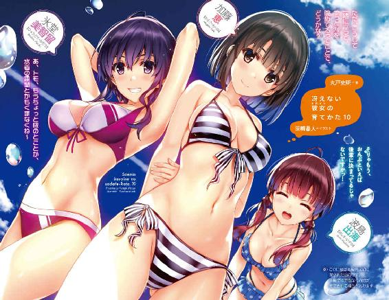
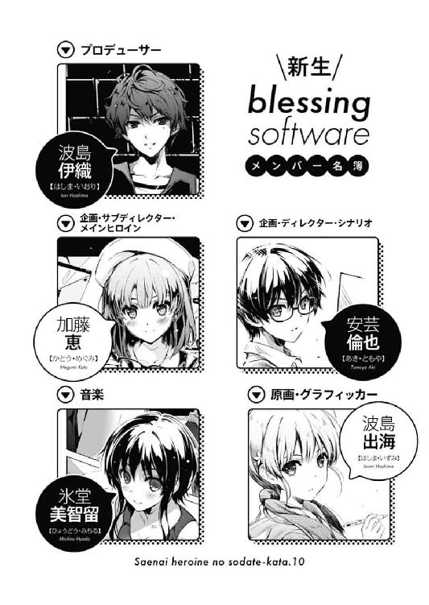
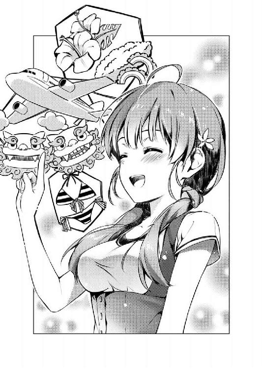
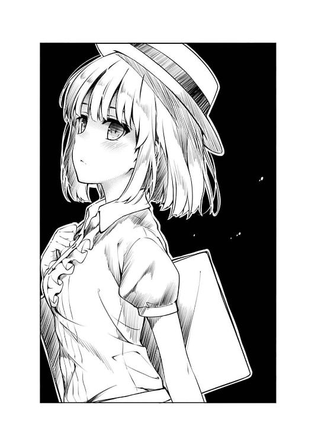
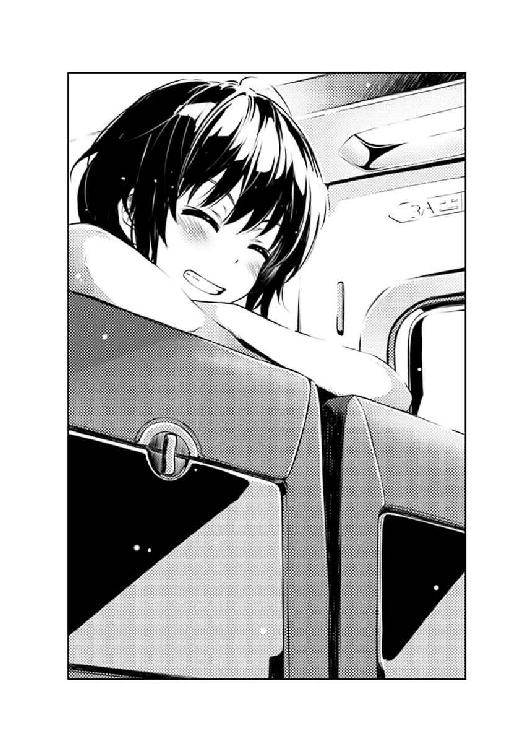
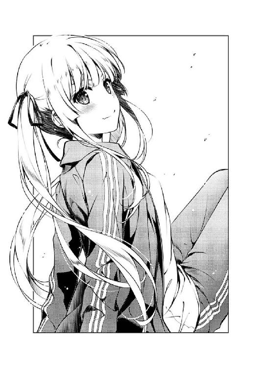
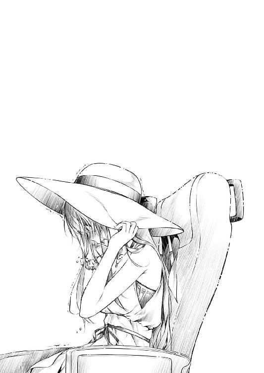
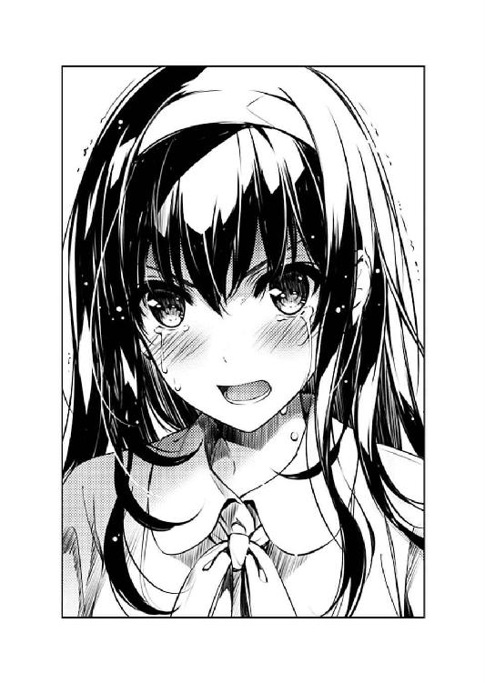
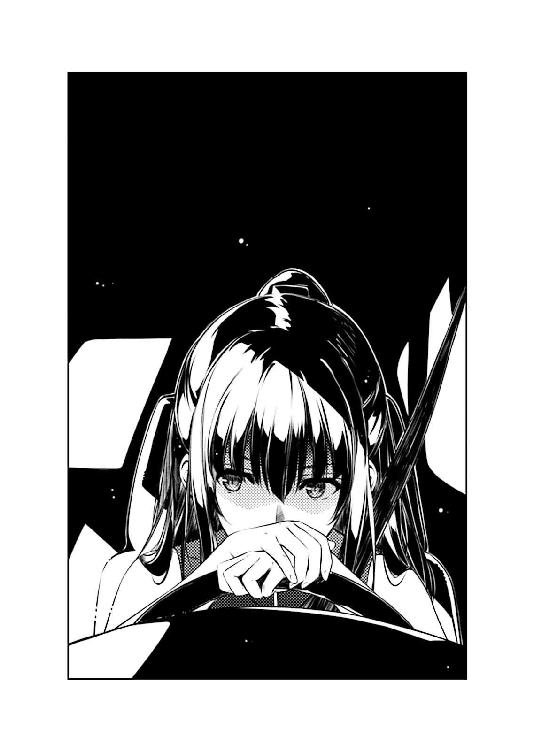

| 冴えない彼女の育てかた10<冴えない彼女の育てかた> (富士見ファンタジア文庫) | |
| 丸戸 史明 | |
| (2016) | |

冴えない彼女の育てかた10
丸戸史明

富士見ファンタジア文庫
本作品の全部または一部を無断で複製、転載、配信、送信したり、ホームページ上に転載したりすることを禁止します。また、本作品の内容を無断で改変、改ざん等を行うことも禁止します。
本作品購入時にご承諾いただいた規約により、有償・無償にかかわらず本作品を第三者に譲渡することはできません。
本作品を示すサムネイルなどのイメージ画像は、再ダウンロード時に予告なく変更される場合があります。
本作品の内容は、底本発行時の取材・執筆内容に基づきます。
本作品は縦書きでレイアウトされています。
また、ご覧になるリーディングシステムにより、表示の差が認められることがあります。

プロローグ
休日の俺の部屋に差し込む夕陽が、エアコンの冷気をもかき消すほどの熱気を送り込む七月下旬......
「というわけでですね、というわけでですねっ......これが、わたしたちの、最強ギャルゲーの合宿スケジュールなんですよっ！」
......なんだけど、そんな気だるい暑さを熱さで吹き飛ばす、元気で明るく弾んだ声が部屋の中に響き渡る。
「出発日はいきなりの終業式翌日！ 期間はゆとりの三泊四日！ 行き先はときめきの沖縄！ サークルメンバーは全員参加が基本ですから、皆さんにおかれましては旅支度......特に、イラスト映えするかわいやらしい水着の準備を是非ともよろしくお願いしますっ！」
「あ、いや、ちょっと待ってよ出海ちゃん......」
「あ、先輩もカッコいやらしいビキニパンツ的な水着よろしくお願いしますっ！ 特にイベント素材として使う予定はないんですが、とりあえず個人的な需要というものもありまして」
「......色んな意味でＮＧな今の発言はとりあえず無視するとして、その合宿の話、サークル代表的に何もかも初耳なんだけど......」
お下げ髪で、愛嬌のある可愛らしい容姿。
小柄なんだけど、一部が強く主張しているメリハリある体型。
相手に対して常に礼儀正しく、けれどなかなか退かない、ナチュラルにゴリ押しな言動。
今年の春から、俺と同じ学校に入学し、さらに俺たちのサークル『blessing software』のエース原画家として君臨する、懐き系後輩ヒロインにして微妙に幼なじみも入ってるよ的な女の子。
豊ヶ崎学園一年Ｃ組、波島出海。
「いいねぇ沖縄！ 琉球料理、それに琉球音楽！ りゅ～じんりゅ～じんマ〇～ヤ～♪」
「琉球音楽的にも著作権的にも微妙なとこ攻めるのはやめろ美智留......」
続いて口と、そしてギターを鳴らしたのは、癖のあるショートの髪を揺らしてからからと笑う、活発系美少女。
「エメラルドブルーの海に照りつける黄色い太陽！ 泳いで潜って日焼けして～って、まさにあたしのためにあるような合宿じゃん！」

「甘く見るなよ美智留......ときめきの沖縄ってのはなぁ、ハブ・ロードに襲われ飲み込まれたところを正義のマングースに命からがら救出されるという、それはそれはサバイバビリティを必要とする決戦の地なんだぞ！」
「......それあたしの知ってる沖縄と違う」
出海ちゃんと比べるまでもなく、女子としては相当の長身でスポーティな体型。
どんな相手に対しても常にフランク過ぎる態度で接し、しかもまったく臆さない、ナチュラルにゼロ距離な言動。
隣県の女子高に通いつつ、それでも俺たちのサークル『blessing software』のメイン音楽家として君臨する、惰性系イトコヒロインにして顕著に幼なじみも入ってるよ的な女の子。
椿姫女子高校三年四組、氷堂美智留。
「それに飛行機代は？ ホテル代は！ そもそも夏休みの沖縄なんていうリゾートパラダイスだぞ？ 今から予約が取れるとでも思ってんのか？」
「そういうのはサークル代表が全部手配してくれるからなんくるないさ～」
「てめぇ......」
で、そんな脳天気娘の、いつもながらの無責任全開な丸投げ発言（伴奏つき）に頭を抱えようとしたところで......
「あ、あの、実は、飛行機のチケットもホテルの予約も、五人分ならあるんですっ！ しかも格安で！」
「出海ちゃん？」
発案者の方から、意外な真実が告げられた。
「ごめんなさい黙ってて......実は、その日に予定してた、クラスメイトとの沖縄旅行が中止になっちゃって、予約が全部、宙に浮いてるんです」
「ど、どうしてそんな......ことになっちゃったの？」
『友達五人で約束して沖縄旅行なんて、いつの間にそんなリア充的社交性を身につけてたんだよ出海ちゃん!?』などという最初に浮かんだ問い詰めの言葉を必死に飲み込み、俺はつとめて穏やかに、彼女の目を見て問いかける。
「え、えっと、それは......」
「それはだねぇ倫也君、実は出海が一緒に行くはずだったクラスメイトの一人が、親友に彼氏を寝取られちゃって、しかもその親友ってのも、一緒に行くはずのクラスメイトだったという地獄絵図が発覚したのが一昨日だったらしくてさ......あははははっ」
「勝手にバラさないでよお兄ちゃん!?」
「どうしてそんなリア充的多角関係に巻き込まれてんだよ出海ちゃん!?」
けれど、俺のその問いかけに応えたのは、すでにリア充的な社交性を腐るほど身にまとった、鬱陶しいチャラ男の方だった。
「わ、わたしは当事者じゃないですよ完全なるとばっちりですよぅ！ お兄ちゃんじゃあるまいし！」
「嫌だなぁ、僕だったらそんな、直接面識のある女のコ同士で二股なんてかけないよ。確かにそういう、親友同士を両方とも毒牙にかけて修羅場を堪能する、一見真面目そうだけど心底クズな輩がこの世に存在することは知ってるさ。けれど僕の主義的にも......」
「あ～、もういいもういい」
そんな、一部のキャラ批判に繫がりそうな妙な矜持を聞き流しつつ、俺はその茶髪パーマなイケメン野郎の余計な発言を制する。
男子の平均と比べても、長身かつスリムな隙のない体型。
どんな相手に対しても常に胡散臭さ全開で接し、それでいて（一部を除く）女子に絶大な人気を誇る、ナチュラルにフェミニストな言動。
都内の高校に通いつつ、それでも俺たちのサークル『blessing software』をプロデューサー兼ディレクターとして統括する、インチキ系親友キャラにして微妙にお兄ちゃん属性も入ってるよ的な男子。
港洋台高校三年五組、波島伊織。
「......いや倫也君、仮にも僕を親友と認めてくれてるなら、毎回高校名を間違えるのはやめてくれないかな？」
「いや全然間違えてねぇし？ だって一度も口に出してねぇし！」
......というわけで、本人からの強い要望により、『桜遼高校三年二組、波島伊織』と再紹介させていただきます。
「と、とにかくですねっ、合宿なんですよ沖縄なんですよ！ しかも格安なんですよお得なんですよ今がチャンスなんですよっ！」
「いや、いくら安いったって沖縄だし、サークルの予算を考えると......」
『ていうかそんな事故物件嫌だよ!?』などという本能的な拒絶反応をそのまま口にするのは流石にはばかられたので、俺はとりあえず、高校生にありがちな金銭面の問題に逃げようとする。
「で、でもっ、前作の『cherry blessing』の時だって、水着イベントのロケハンで高級ホテルのプールに行ってたじゃないですか！」
「出海ちゃんそれはっ!?」
しかし出海ちゃんは、決して折れず、決してひるまず、決して臆せず、必死に食い下がってくる。
そう、微妙に過去のサークルの秘密を持ち出してまで......
「ね～トモ、あくまで傍から見てて思ったんだけどさぁ、さすがにこれは波島ちゃんの熱い思いを汲んであげるべきだと思うんだよね～」
「み、美智留......」
すると続いて、善意の第三者を装った当事者が、思い切り私情を絡めた援護射撃を始める。
「だってほら、絵を描くのはあくまで波島ちゃんじゃん？ つまり波島ちゃんが必要って言ったらそれは必要だってことじゃん？ くりなんちゃらのますたーべーしょんに関わってくるじゃん？」
「ま、まぁ......」
ただまぁ、その言い分にある程度筋が通ってしまっているので、強く否定することもできず、サークル通帳の残高を頭の中に思い浮かべつつ、苦渋の表情を浮かべることしかできない。
けどその某先輩をさらに下品にしたような誤用については看過できないから心の中でツッコんでおくけどクリエイターのモチベーションだからな。
「女のコにここまで言わせておいて応えてあげないなんて、男としての機能に問題あるとしか考えらんないよ。ここは一肌脱いであげようよ～」
「だからリアルに脱ごうとするな服をたくし上げるな！」
まぁでもこいつの場合、今のこの、目の前にさらけ出された白いお腹とへそのことを考えると、誤用でもなんでもなかったのかもしれないけど。
「本当にお得なんです先輩！ 今なら沖縄三泊四日がなんと●●万●千●百円！ しかもこれ一人分のお値段じゃないですよ？ なんと五人分、五人で、たったの●●万、●千、●百円なんですこれが！」
出海ちゃんの声が、なぜか妙に甲高くなる。
「この季節に沖縄がその価格!? ちょっとちょっと波島ちゃん、それ聞いたことないわ～、安すぎるでしょそれ～」
そして美智留の口調が、なぜか妙に吹き替え臭くなる。
ついでに伊織が漏らすため息が、妙にスタジオのガヤっぽくなる。
「け、けど......●●万●千●百円......かぁ」
確かに、前作の売り上げで手にした蓄えを投入すれば、サークル合宿の開催そのものは可能だろう。
けれど、総額の桁数そのものが、どうしても俺に二の足を踏ませてしまう。
「先着一組五名様限定でのご提供ですっ！」
「あ～、これはもう瞬殺だ～、間違いないわ～」
「え、え～と......」
そんな俺の逡巡を見透かしたように、スタジオの......じゃなくて目の前の二人が、さらに早急な決断を煽ってくる。
「ね～、せんぱぁい」
「ね～、トモぉ」
「う、うぉぅ......」
そう、目の前の二人が、もっと目の前の二人に変わり、至近距離で両側からダブルの大ボリュームで迫ってくる。
いやボリュームってのは音声のね。
「行っちゃいましょうよ沖縄......ヒロインの水着拝み放題ですよぅ？」
「あ～、これは何かが起こる予感するわ～、水着に留まらないかもしんないわ～」
「ぉ、ぉ、ぉぅ......」
と、とうとう俺が、画面下のテロップに誘われるまま、指定の電話番号にかけてしまいそうになった瞬間......
「あ、ごめん出海ちゃん。その沖縄ツアー、駄目になっちゃった」
その場を凍らせる、いてつく......というよりフラットな波動が部屋の中を支配する。
その声の主は、部屋の中心にいる俺たちから少しだけ離れた部屋の隅で、スマホを弄りつつ、こちらに視線を向けず、今の今までまったく存在そのものを消していた。
「か、恵......？」
「め、恵さん......？」
「加藤ちゃん......？」
「............」
けれど今、その平坦な一言を発した瞬間、部屋じゅうに彼女のどす黒......いや邪悪......いや重......いや強い存在感が広がっていく。
......あ～、ごめん、さすがに今の表現は盛ってます。
よくあるショートボブに、『普通に可愛い』という表現が普通に口を突いて出そうな普通に整った容姿。
小柄でも長身でもなく、スレンダーでもボリューム満点でもなく、全てが調和している主張のない体型。
低姿勢過ぎも高圧的過ぎもしない、そんな淡泊な口調でありながら、それでも声のトーンに含まれる圧倒的な決定権。
一昨年の春から俺と同じ学校に通い、さらに俺たちのサークル『blessing software』を、唯二の創立メンバーにして最強の下っ端として支配する、『透明な水の中にぽたぽたと墨汁が落ち徐々に黒く染まっていく』的な説明が難しい属性に目覚めつつある女の子。
豊ヶ崎学園三年Ａ組、加藤恵。
あ、付け加えると、俺たちが今作ろうとしている新作ゲーム『冴えない彼女の育てかた（仮）』のメインヒロインでもある。
「ど、どどどどどういうことですか恵さんっ!?」
そんな加藤......あ～、いや、こほん......恵、の、突然の冷水に、出海ちゃんは微妙にビビりつつ、けれどやっぱり最終的には折れずひるまず臆せず、その矛先を俺から彼女に向ける。
「実はね、サークル合宿の参加希望者、たった今、六人になっちゃって」
それでも加藤......じゃなくて恵は、そんな出海ちゃんの熱くひたむきな私情混じりの訴えをさらりと受け止める。
......いや、その内容の中には結構聞き逃せないネタも仕込みつつ。
「ろ、六人目......ですか？」
「うん、実は今、皆が合宿の打ち合わせをしてる間、暇だから英梨々とＬＩＮＥで話してたんだけど」
「なんてことするんですかしちゃってるんですか恵さん!?」
そう、ここで彼女が口にしたのは、あろうことか、かつて俺たちのサークルに所属しながらも脱退し、しかも出海ちゃんとは怨敵にして仇敵にして宿敵同士で、しかもしかも、つい最近まで恵とも断絶していた、けれどやっとつい最近仲直りした、とてもとても因縁深い相手だったから。
つまり、詳細は後で紹介するけど、豊ヶ崎学園三年Ｆ組、澤村・スペンサー・英梨々。
「な、なななななんであの女に声かけるんですか恵さんっ!?」
「え～、だってほら、ヒロインの水着イベントのロケハンだったら、英梨々に声かけない訳にはいかないし」
まぁ、その恵の主張には、一理ないとは言えない何かがあったりしちゃったりする。
俺たちが今作ろうとしている新作ゲーム『冴えない彼女の育てかた（仮）』では、現在、俺が担当するシナリオ作業が絶賛進行中だけど、実は先日、一番最初に完成したシナリオのヒロインが、澤村・スペンサー・英梨々（仮）という名前だったりしちゃったりする。
つまり要するに、何が言いたいかというと、水着イベントのロケハンともなれば、そのヒロインの元ネタであるところの英梨々にも、水着を着てモデルになってもらうというのは完全当然必然の流れであることは自明の理であり......
「騙されないでくださいっ！ 澤村先輩は倫也先輩や恵さんを捨てて紅坂朱音のもとに走った裏切り者っ！ 喩えれば、自分が売れ出した途端に今まで支えてくれてた昔からの恋人を捨てて有名タレントとくっついたりするゲスな芸能人みたいな人ですっ！」
けれどまぁ、その出海ちゃんの主張も、思い切り感情的でネット的でゲン○イネット的ではあるけれど、筋が通っていない訳ではないというか比較的正しい主張だったりして。
「......え～と、それに対する英梨々からのコメントはこんな感じで」
で、その正論に対峙するのがめんどくさくなったのか、恵は自らのスマホを出海に差し出し、そのＬＩＮＥ履歴を見せてくる。
と、そこには、英梨々からの返信として『あたしはサークルの代表と副代表にお願いしてるだけ。単なるいちスタッフであるあんたの意見なんか求めてないから黙ってて』などと、それはそれは挑発的な文言が並んでいた。
......ていうか出海ちゃんの発言をそのまま文字起こしするなよ恵。
「ああああああっ！ 何ですかその態度その言い草！ デザイン起こすのわたしなんですよわかってるんですかその辺!? 思いっきりモデルに忠実な体型にして『こんな貧乳キャラ、ギャルゲーじゃ使えないよ』ってＮＧ食らってやってもいいんですよ？」
「......はい、英梨々からの返信」
で、次に恵が見せた画面には、もはや怒りに任せて画面を適当に叩きまくったとしか思えない判別不能な文字やら記号やらが羅列されていて、先方のいつものムキー感がよく表現されている。
ほら、やっぱり戦いが始まった......って、こういうのもサイバー戦争って言うんだろうか？
「と、倫也先輩っ、こんなのいいんですか？ わたしたちがこつこつ準備してきた合宿の予定が総崩れですよぅ？」
「いやそもそも話を聞いたのが三○分前くらいだったけど」
「そんなことよりっ！ ここは一つ、サークル代表らしくハッキリ断っちゃってくださいよぅ。『もうこのサークルにお前の居場所はない』とか、『よそ者は引っ込んでろ』とか、『土下座して許しを乞うならほんの少し考えないでもないぞ』とかビシっと言って......」
「すいませんそんなことしたら来週から教室で口きいてもらえなくなるから勘弁してください」
「ああああっ、弱い、弱すぎます先輩......こんな澤村先輩の理不尽なワガママに、一方的に蹂躙されちゃってもいいんですか？ わたしたち」
『いや全然一方的じゃないよね少なくとも口喧嘩では圧倒的に優位に立ってるよね君』と出海ちゃんを励まして（？）あげたかったけれど、そもそもこの戦いに参戦したくないのでへらへらと受け流す。
「しょうがないなぁ......なら百兆歩譲って、お兄ちゃんには今回遠慮してもらうということで......ほらこれで『五人で沖縄』ですよ！」
と、出海ちゃんは、ようやくほんの少しだけ怒りを収めた表情で、ため息とともに次善の策を提案する。
「......あ～、え～と、出海、お前、このサークルでの僕のその扱い、誰に影響を受けたのかなぁ？」
......たった一人の肉親を躊躇なく生贄に捧げることによって。
しかし......
「あ～ごめん波島ちゃん、たった今、七人目も決まった......」
「美智留さんなんでっ!?」
そんな出海の苦渋の即決を、即座に無効化してしまう新たな参加表明が放たれた。
「いや、澤村ちゃんが参加するっていうんで、せっかくだから霞ヶ丘センパイにもメールしてみたら、速攻でコールバックきてさぁ......」
いつの間にか、スマホで誰かと通話している美智留の口から。
「あああああっ！ ますますややこしいことに～っ！」
なお、ここで美智留が口にした『霞ヶ丘センパイ』というのは、あろうことか......はまぁいいとして、かつて俺たちのサークルに所属しながらも脱退し、しかも俺の尊敬する天才作家にして崇拝する師匠にして、しかもしかも、脱退間際になんかちょっとあった的な、やっぱり、とてもとても因縁深い相手だった。
これも詳細は後で紹介するけど、早応大学文学部一年、霞ヶ丘詩羽。
「ちょ、ちょっとぉ......そっちの人、今度はモデルですらないじゃないですかっ！」
「あ、ちょっと待って？ え～と......『問題ないわ、倫理君が私もヒロインに昇格させれば済むだけの話よね』だってさ？」
「詩羽先輩っ!?」
「ああああっ、ＯＢが作品内容にまで介入してきた～っ!?」
で、その詩羽先輩は、美智留のスマホのスピーカーから、美智留の口を通して、俺たちのミーティングに当然のように参加してくる。
「え～と......『確か倫理君の初期プロットに、年上黒髪ロングヒロインがいたから問題ないはず。こっちはどこぞの貧乳キャラと違って、しっかり一八禁移植にも対応できるお得なヒロインよ？』だってさ」
......というかそのあまりにアレな下ネタトークを忠実に再現できるのは、この中では美智留しかいないというのが絶妙な采配というかなんというか。
「あ、英梨々から返信来た」
「お前も余計なコメント伝えてんじゃねえよ恵！」
ちなみにその恵のスマホの画面にあるコメントの『なっ、なななななな......霞ヶ丘詩羽～っ！』は、誰もが脳内で忠実に負け犬ボイスに変換できてしまったりした。
第一章 この爆弾を今さら使うとは自分も思わなかったよ
そこには朝から、大量の人がいた。
キャリーバッグを引きながら、次に乗り換えるホームを探す人。
スーツ姿で忙しなく通り過ぎる人。
朝帰りっぽい様子で、眠そうにあくびをしながら改札をくぐっていく人。
そんな、様々な人が、この日本の中心地に集っている。
東京駅、東海道新幹線乗り場......
学生たちが夏休みに入って最初の日のその場所は、それ自体が大きな変化とはいえないためか、いつもの平日と何ら変わるところはなく、いつも通り賑わっていた。
......と、ここまでの情景描写にどこか見覚えがある人も、細かいことには触れず大らかな目で見逃していただけたら幸いです。
「お～、あれあれ、こだま×××号......全席自由だから早めに並ぼ～」
朝っぱらから、怠惰と元気が二律背反を起こしたような美智留の大らかな声が、新幹線ホームの喧騒に負けじと響き渡る。
で、その声にようやく追いつくように階段を上りきると、既にホームにはお目当ての車両が停車していた。
しかしまだ、東海道新幹線名物のエクストリーム車内清掃は終了していない様子で、ガラス越しに見える車両の中では、世界で一番効率的でスピーディな動作を誇るおばちゃんたちが、あっという間に座席カバーを交換していた。
「ね～トモ、先っぽでいいよね～？ 先に行って並んでるよ～」
「全然余裕だから走るなおい！」
「......えっと、今のって、一号車の先頭の方って意味だよね」
で、『馬○と乗り鉄は先頭車両に乗りたがる』という格言通り、美智留は俺たちを置いてずんずんホームの端へと進んでいく。
後に残されたのは、先陣と同じくらいの量の荷物のはずなのに、その重さに振り回され、なかなか追いつくことのできない三人。
俺と、恵と、そして......
「うう......本当なら沖縄のはずだったのに......今頃、羽田のはずだったのに......」
南国への夢断たれ、傷心著しい出海ちゃんだった。
なお伊織は、色々な配慮もあって、さらに少し距離を置いて後ろからついてきている。
「......いい加減諦めようよ出海ちゃん」
「そ、そうそう！ チケットは全額払い戻しできたんだろ？ それだけでも万々歳じゃないか！」
......まぁ、ずっと前から楽しみにしていたらしいので同情はするけれど、できれば恨むなら親友の彼氏を寝取ったクラスメイトの方にしてほしい。
「そりゃあ、そりゃあ、色々と仕方ないことは認めますよ？ この人数で沖縄ってのが予算的に難しいっていうのもわかってます......まぁ、それというのも、何の前触れもなく割り込んでくるゲストがいたり、我が物顔で当然のように参加する部外者がいたり、わたしたちの楽しい合宿を台無しにしようと企む邪魔者がいたりと、枚挙にいとまがありませんが......っ」
「......その枚挙って、結局のところ一枚だよね出海ちゃん」
「ま、ま、まぁ、それでも最終的に、近場だけど南国気分が味わえるリゾートに落ち着いたんだから良かったじゃないか！」
「そこですっ！ で、その、近場だけど南国気分が味わえるリゾートっていうのが、どうして熱川バナナワニ園ってことになるんですか!?」
「え～、バナナナワニ園駄目～？」
そして夢破れた出海ちゃんの悲嘆はとどまるところを知らず、とうとう今回の旅先である熱○温泉にまでその嘆き節を届けんばかりの勢いだった。
あ、いや、どっちかというとその場所に決めた俺に対してなのかもしれないけど。
「でもさ出海ちゃん、倫也くんが挙げてたもう一つの候補地って伊豆シャボテン公園だよ？ それに比べれば、若干マシなチョイスだったんじゃないかな？」
「わかんない、そこの違い全然わかんないですわたし......」
「いやほらさ、冷静に考えてみたら、シャボ○ン公園の方は南国というより南米だったからさ......」
まぁ、どっちにしても同じ伊○地方なので、距離的には候補に復活する可能性も否定はできないけど。
「だけどな出海ちゃん......熱川バナナワニ園を侮ってもらっちゃあ困るぜ......？」
「倫也先輩......？」
と、まぁ、それはともかく、そんなふうに未だ合宿へのモチベーションが上がらない出海ちゃんの目をしっかり見据えて、俺は真摯な言葉を紡ぎ出す。
「その施設名に恥じない、豊富なワニの種類と数！ そして何故こんなにいるんだか全然わからない規模で大生息しているレッサーパンダ！ さらには植物園に目を向けると、これまた施設名に恥じないバナナだけでなく、豊富な熱帯性植物が楽しめる温室が至るところに！ これぞ○豆の南国と言っても過言ではない品揃えだろうそう思うだろう出海ちゃん!?」
そして、そんな俺からの興味深い情報が徐々に伝わっていき、出海ちゃんと恵の目が、俺の言霊に吸い込まれていく。
「さあみんな！ 俺と一緒にバナナワニ園のフルーツパーラーでパパイヤに舌鼓を打ち、お土産にドライマンゴーとココナッツチップス買って帰ろうぜ！」
「あ、え、え～と......」
「ていうかなんでそんなに詳しいの倫也くん」
......のはずだったのだが、どうも微妙に食いつきがよくないのが気になる。
せっかくドリアンの存在は巧妙に隠蔽したというのに。
「頼むよ出海ちゃん！ 今回のロケハン合宿に最適なのは間違いなくこの○川温泉なんだよ！ 何しろついでにビーチにも近いし」
「というか実際、ビーチに近いくらいしか沖縄との類似点ないよね」
「うぐぅ......」
出海ちゃんへの魂の説得に、何故か恵が辛辣なツッコミを入れる。
しかし、どうしても俺は引き下がる訳にはいかない。
何しろ、夏休みの初日からの三泊旅行、しかも直前になっての申し込み。
そのせいで、こんな近場の観光地の旅館を取るのにだってかなり苦労したんだ。
具体的には、恵のお義兄さん（旅行代理店勤務）に頭を下げて強引に予約を取ってもらい、加藤家の親戚一同に『無計画かつ無責任で、何でもかんでも恵ちゃんに頼りきりの駄目彼氏』というレッテルを貼られてしまうという気苦労を......
「あ～ら、ロケハンの場所が自分の希望通りでないと描けないなんて、原画家としての能力に問題あるんじゃない？ 波島出海さん？」
「なっ......？」
などと、俺が相変わらず出海ちゃんの説得に四苦八苦していると......
いきなり後ろから、どこか懐かしい......という程でもない、教室でお馴染みの声が聞こえてきた。
「英梨々......」
「一応、まだ集合時間前よね？ 倫也、それに恵？」
「そうだね、時間だけはいつもちゃんとしてるね、英梨々」
「〝だけは〟って、酷いなぁ恵、あははっ」
振り向いた先にあったのは、日本人離れした、目にも眩しい金髪ツインテールと白い肌。
小柄で、しかも色んなところもコンパクトな、欧米人離れした体格。
相手に対して挑発的で、摩擦も厭わない、ナチュラルに喧嘩腰な言動。
今年の春から、俺たちのサークル『blessing software』を脱退し、今は大手コンシューマーメーカーの大作ＲＰＧのキャラクターデザイン担当に名を連ねている、新進気鋭のイラストレーター、柏木エリ。
豊ヶ崎学園三年Ｆ組、澤村・スペンサー・英梨々。
「能力に問題ありって、どういうことですか、澤村先輩......」
で、そんな英梨々の挑発的な言動は、やっぱり同業者の出海ちゃんには看過できるはずもなく......
今日もまた、ここ一年の間でお馴染みになった光景が繰り返される。
けれど......
「景色、天候、時間......どうしたって、イメージ通りにならないものはある。その差を自分の想像力で埋めて、最小限のリソースで最大限の効果を得るのが、本当に『使えるイラストレーター』なんじゃないかと思うけど？」
「そんなの理想論ですよ。やっぱり正しい情景を一度でもしっかり目に焼きつけておかないと、自分の描いたものに自信が持てないじゃないですか」
「そうかなぁ？ 自分の脳内が現実を超えてこそ、絵にする楽しさとかユーザーの驚きとかがあるんじゃない。写真とか見たままを忠実に再現する絵だと、想像を超える驚きとか喜びを与えることができないんじゃないかなぁ？」
「そんなことができるのは、選ばれた人だけです......わたしは柏木エリじゃないんです。そういうことができないわたしみたいな人の方が圧倒的に多いんですよ」
「でも、選ばれるための努力、怠りたくないじゃない？」
「え......」
「あたしたちみたいな人種ってさ、誰もが、誰にも、負けたくないじゃない？」
「そ、それは、その......」
「ま、あたしも全然、その域に達してないから、自戒の意味も込めて言ってるんだけどね、あははっ」
「澤村先輩......」
「お、おお......？」
「うわぁ......」
今、出海ちゃんを目の前に、苦さと優しさをたたえた笑みを浮かべている英梨々は、なんだか、俺たちの知っている英梨々とは、ちょっと違ってた。
いや、それどころか、つい数日前、ＬＩＮＥ経由で負け犬っぽい叫びを轟かせていた、あの英梨々とも違ってて。
「そんなわけで、実は合宿、楽しみにしてたんだ......まだまだな絵描き同士、切磋琢磨できる、絶好の機会だなって」
「そ、それは......えっと、ほ、本当に......？」
ていうか、なんてことだ。英梨々が、なんかカッコいい......？
「うん、本当。また、こういう話もしたいし、それに、あなたが描くところも見たい」
今の英梨々は、俺たちのサークルにいた頃の、実力の割に自信がなくて、安いプライドに支配されてて、何にでも嚙みついていた、あの英梨々じゃなかった。
「きっと、あなたの絵を見て地団太踏むと思うけど、きっと、また喧嘩売ると思うけど......その時は、少しだけでいいから付き合ってね？」
「よ、喜んでっ！」
そう、今の英梨々は、実力に裏打ちされた自信と、プライドと上手く付き合う術を得て、強さと謙虚さを同居させられる、大人のクリエイターだった。
そんな英梨々の成長した姿に、俺は、大きな頼もしさと、そして一抹の寂しさを......
「そう、それはとてもいい傾向ね澤村さん」
「なっ......!?」
「うひゃぅ!?」
......覚えたところで、その声と、その感触が、突如、俺の背後から、二の腕あたりに伝わってきた。
「確かに今回の合宿は、澤村さんが、ライバルである波島さんと、創作について語り合う絶好の機会ね。是非、合宿中は朝から晩まで議論を戦わせてもらいたいものだわ」
「あ、あんた、か、か、かかかか......っ」
「う、ううううてゃてゃひゃひゃ......っ」
そう、それは、深い黒さの中に、温かい優しさまでも感じさせる複雑で豊かな音色で。
そして、思わず喉の奥から変な声が漏れてしまうくらいに柔らかい感触で......
「ついでに澤村さんは、ようやく仲直りした加藤さんと、今まで以上に友情を深めるいい機会よね？ 一緒に海で泳ぎ、お風呂に入り、朝まで女子会に励むといいわ」
「なっ、なっ、なななな......っ」
「ち、ちちちち近い強い柔い！」
振り向かなくてもそこにあるとわかる、吸い込まれそうになるくらいに漆黒の、長い髪。
俺の右腕にぐいぐい伝わってくる、柔らかさにも程があるボリュームをたたえた胸......いや体格。
相手に対して暗黒的だったり蠱惑的だったり、様々に対応を変えるフレキシブルな言動。
今年の春から、俺たちのサークル『blessing software』を脱退し、今は大手コンシューマーメーカーの大作ＲＰＧのシナリオ担当に名を連ねている、美少女ラノベ作家にしてゲームシナリオライター、霞詩子。
「その間に私は、倫理君と灼熱の砂浜で語らい、夕暮れの波打ち際を並んで歩き、深夜の露天風呂で一緒に星を見上げ、夜明けに布団の中から『おはよう』と挨拶を交わし合うことにするわ。ああ楽しみね、早く旅館に着かないかしら」
「霞ヶ丘詩羽ああああぁぁぁぁぁ～！」
「詩羽先輩～!?」
早応大学文学部一年、霞ヶ丘詩羽。
「ちょっとちょっとちょっと～！ 何してんの離れなさいよ～！」
「ちょ、こら英梨々！ 俺まで巻き込むな～！」
英梨々が、俺と詩羽先輩の結合部（注：腕辺りです）に、腰の利いた縦回転のツインテビンタをねじ込んでくる。
「お待たせ、なんとか集合時間ギリギリに間に合ったようね」
「おはようございます霞ヶ丘先輩」
「あ、あは、あは......」
......その、さっき少しでも見直してしまったことを心の底から恥じ入りたくなる、英梨々の幼稚にも程がある妨害行為をまったく気にするそぶりも見せず、詩羽先輩は相変わらず俺をガッチリ抱え込んだまま、周囲への挨拶を手早く済ませる。
そんな詩羽先輩に、恵はいつも通りそつなく挨拶を返したものの、出海ちゃんの方は顔を引きつらせつつ固まってしまっている。
......いやここは間違いなく出海ちゃんのリアクションの方が常識的なんだけど、今さらそんなこと言い出しても始まらない。
「今さら、今さらっ！ そんなベッタベタな年上お色気キャラのテンプレ突き詰めて何がしたいのよあんたは～！」
「だってほら、今回の合宿で、加藤さん澤村さんに続いて私も二次元ヒロインデビューだし」
「認めてないし！ だいたいそんな根暗ヤンデレ地雷ヒロイン採用したって誰も幸せにならないし！」
「......それにしても、改めて見てみても、あなたの二次元テンプレリアクションって、あまりにナチュラルで、なかなか太刀打ちできそうにないわね」
二次元テンプレがナチュラルなどという、ちょっと何言ってんだかわからないですねな指摘はさておき、詩羽先輩は、ようやくからかいの対象を俺から別の人間に移すつもりになったようで、抱え込んでいた俺の腕を解放すると、今度は英梨々の頭を摑み、その動きを固定する。
「ぐっ......ちょ、ちょっと、放しなさいよ霞ヶ丘詩羽～！」
と、英梨々の金髪ツインテは一瞬にして回転力を失い、垂直に垂れ下がっていく。
なるほど、あの攻撃は先端の髪ではなく動力源である頭を止めればよかったのか......って当たり前ですね。
「いい加減、公共の場で人に迷惑かけるのはやめなさい澤村さん。本当、絵の方は怖いくらい伸びてるのに、人間的には呆れるくらい成長しないわねあなた」
「そういうあんたは私生活の場で人に迷惑かけまくってんじゃない！ 今日だって何回モーニングコールしたと思ってんのよ！ あんたが全然電話に出ないから待ち合わせギリギリになっちゃったんじゃない！」
「仕方ないでしょう。合宿に行くために三徹でシナリオ書き上げたのが二時間前なんだもの。少しくらい仮眠取らせてもらっても罰は当たらないわ」
「三徹明けで二時間後には出かけるのに寝ようと考えるその脳が腐ってるっていうのよこのゾンビ！」
英梨々と詩羽先輩のお馴染みの大喧嘩は、結局、公共の場で人に迷惑をかけながら、本来の合宿メンバーである俺たちを差し置いて、どんどんヒートアップしていく。
それこそ、このまま放っておいたら目的地までずっと続いてしまいそうな勢いで。
だから俺は、仕方なく二人の間に割って入り『いい加減にしてよ二人とも！』などと叫びつつ、なんとかこの事態を収拾させようと......
「はは......っ」
......なんて、するはずがなかった。したくもなかった。
だって、半年ぶりなんだ。
彼女たちが、生き生きと喧嘩しているのを、この目に収められたのは......
去年は、飽きるほど目にした光景だった。
視聴覚室、喫茶店、路上、電車の中、そして俺の部屋。
英梨々のキレ芸というニワトリと、詩羽先輩の毒舌芸という卵。
その、どっちが先かわからない言い争いは、時と場合を選ばず突発的に発生し、俺はいつもその暴風に飲み込まれていた。
......いや、何だかんだで、きっかけは俺だったことが多かった気がしないでもないけれど。
そしてこれは、今年になって、ぱったりと途絶えた光景だった。
視聴覚室に集うことはなくなり、俺の部屋から二人の姿はなくなって。
新しいサークル、新しいメンバー、新しい作品、新しい挑戦は、確かに刺激的で、楽しくて、充実してた。
けど、どうしても、皆で一緒にゲームを作っている瞬間にも、二人のことを思い出さずにはいられなかった。
英梨々だけじゃない。詩羽先輩だけじゃない。
二人が同じ場所にいて、同じ方向を向いて、けれど全然違う意見でぶつかり合う、この瞬間のことを......
「はい」
「え？」
......なんてことをつらつら考えつつ、結局二人を止めずにぼうっと突っ立っていた俺の肩に、ぽんと置かれた手。
振り向くとそこには、もう片方の手でハンカチを差し出す恵の姿。
「この状況でその顔はおかしいよ......倫也くん？」
「あ......」
と、反応した瞬間に鼻をすすってしまったのは、男子としては致命的な失敗だったのかもしれない。
けれど今は、その気恥ずかしさすらも、少し嬉しく感じてしまう自分が弱くて、そして誇らしい。
だから、やっぱり俺は、自分の今の表情を隠さず、誇らしげに恵のハンカチを受け取ると、ぎゅっと目元を拭う。
そして恵も、そんな俺のことを優しげに見つめ、目の前で相変わらず大騒動を繰り広げる二人に、懐かしげな目を向けた。
「ちょっと澤村さん、今のは聞き捨てならないわね。一体私のどこがゾンビだっていうのよ？」
「ゾンビじゃないのよ！ 血圧低いし、動きは遅いし。それに、ずっと前に振られたくせに、いつまで経っても諦め悪くまとわりついて......やっぱりゾンビよ、恋愛ゾンビ！」
「ああ、なるほど、そう言われてみれば確かに......」
「......って認めるの？ あんた」
「ええ、だってほら、倫理君にエナジードレインしたのも、つまり私がゾンビだったからと考えればつじつまが合うわ」
「のあぁぁぁぁ～!?」
「そう、あれは半年前......倫理君の、若くてたくましい性......いえ生気を吸ったのも、この新幹線ホームだったわね。そう考えると、今回のこの合宿、新たな始まりの予感がプンプン匂わない？ ねぇ澤村さん？」
「やめっ、やめっ、やめぇぇぇ～！ あれっ、あれだけ、あれだけはっ、思い出させないでよぉぉぉ～！ ふえぇぇぇぇ～！」
「............へ～」
「............へ？」
そして恵は、そんな俺のことをゴミでも見るような視線で見つめ、ハンカチをさっさと回収し、美智留の待つホームの端へと歩いて行ってしまった。
その一連の動作があまりに電光石火の早業だったので、その時俺は、恵の誤解を解き、真実を伝えることができなかった。
そう、『ゾンビ系アンデッドはエナジードレインなんかしない』という、西洋ファンタジー系ＲＰＧの基本的なお約束を......

第二章 そりゃゲームのテキスト量が多くなる訳だわ
平日のこだまということもあってか、ホームにアナウンスが流れ、ようやく目的の車両の扉が開いたとき、一号車先頭の乗り場に並んでいたのは、結局俺たち七人だけだった。
そんな、ほぼ貸し切り状態の車内で、俺たちはめいめいの席を選んで自由に座る。
恵は、なぜか俺から大きく距離を取って、英梨々と仲良く隣同士に座り。
詩羽先輩は、一人でさっさと窓際に陣取ると、その隣に馴れ馴れしく押し掛けた美智留を、迷惑そうに、けれど追い払うでもなく熟睡モードに突入し。
そして、詩羽先輩と同じく、二人掛けの席の窓際に陣取った俺の隣には......
「やあ倫也君、隣、失礼するよ？」
「失礼だってわかってんなら座るな」
いつの間にか合流していた伊織が、さっさと座った。
「嫌だなぁ、そんなふうに僕のこと、人の迷惑顧みずＦＦ外からクソリプ飛ばす痛い人みたいに扱わなくてもいいじゃないか」
「ていうかお前、今のその行動は出海ちゃんに対して申し開きができないだろ......」
そう、伊織がその席に座るほんの直前、出海ちゃんが遠慮がちに『あ、あの先輩っ、ここ、いいですか......？』と上目遣いで尋ねてきていた訳で。
そんなこんなで出海ちゃんは、今も通路で突っ立ったまま、涙目で自分の兄を睨んでいたりして......
「ごめん出海、品川まで、ちょっとこの席貸してくれないかな？ ゲームのことで倫也君と話があるんだ」
「う～、う～、うぅぅぅぅ～」
「快諾ありがとう。それじゃ倫也君、さっさと済ませてしまおうか」
「いや今のあの反応を快諾と言い切れる兄としての自信がすげーよお前」
相変わらず涙目で伊織を睨みながら、けれど兄のご無体な命令に背くでもなく、出海ちゃんはとぼとぼと俺たちの前の席に回ると、二つの座席の隙間から俺たちをじっと覗いてきた。
......怖い。『うけけけけけけけけけけ』って笑い出したりしてないけど怖い。
「......で、話ってなんだよ？」
「いやぁ、なんだか知らないけど倫也君が加藤さんに避けられてるようだから気になってね。どうやら『エナジードレイン』というキーワードが深く関係しているようだけど、それが一体何を指しているのか......」
「お前どこで聞いてた？ お前さっきまで姿隠してどこで様子見てやがった!?」
「......えっと、悪い伊織、もう一度言ってくれ」
「今から倫也君は、目的地の駅に着くまでに、五人の女子全員と、それぞれツーショットを決めるんだ」
「意味も目的も方法もどうして俺にそれができると思ったのかもさっぱりわかんねえよ!?」
列車が東京駅を出て、その速度をゆっくりと上げていくさなか......
『ゲームのことで話がある』と、俺の席の隣を強引に占拠したプロデューサーが口にした指令は、それはそれはそれは、アレでソレでナニなものだった。
「なぁに、時間なら大丈夫さ。目的地までは乗り換えも含めて二時間くらいある。一人あたり、誘うのに五分かかったとしても、二○分も会話できる。何も心配はいらないよ」
「時間の問題？ ねぇそれ単純に時間の問題なの!?」
つまりそれは、限られた時間の中で、サークルメンバー（新旧含む）の女性陣〝全員〟と、平等に、まんべんなく、節操なく、総当たりで交流せよということであり。
そんなの、創作物のハーレム主人公ですら、『大抵、ヒロインのうち一人は主人公のことを嫌っている』というハーレムもののセオリーにより、ほとんど実現したことがないという前人未到の領域だ（同作家作品調べ）。
「それでも、君はそれをやる必要があるんだよ倫也君」
そんなハードルの高い指令に青ざめるが、それでも伊織は、自らのタブレット画面を掲げ、その必要性を強調する。
「こ、これは......」
「そう、これは君の書いたプロット......君が、君に出した指示書だよ」
伊織が画面で開いて見せたものは、確かに俺の成果物......今回の新作ゲームの進行の流れを、細かいシナリオ構成にまで落とし込んだ詳細プロットだった。
さらに、伊織が指で差したその箇所には、こう書いてあるではないですか......
海水浴イベント：
条件：七月後半、学園が夏休みに入ると同時に自動的に発生
内容：ヒロイン全員と主人公で、泊まりがけで海水浴に行く
進行：二泊三日の旅行中の全体の流れとしては以下とする
選択肢１．目的地への移動中に発生するイベント
駅で待ち合わせ、全員で同じ電車に乗る。
さて、誰の隣に座ろうか......
Ａ．出海（仮）（後輩ヒロイン）の隣に座る
 出海（仮）好感度＋１
出海（仮）好感度＋１
Ｂ．詩羽（仮）（先輩ヒロイン）の隣に座る
詩羽（仮）好感度＋１
Ｃ．美智留（仮）（従姉妹ヒロイン）の隣に座る
美智留（仮）好感度＋１
Ｄ．英梨々（仮）（幼なじみヒロイン）の隣に座る
英梨々（仮）好感度＋１
Ｅ．巡璃（メインヒロイン）の隣に座る
巡璃好感度＋１
Ｆ．皆から逃げるようにデッキへ向かう
14へ行く
「おおぅ......」
その、間違いなく俺が、つい一か月ほど前に、熱に浮かされたようなハイテンションのもとに書き上げたテキストファイルには、まるで言い逃れできない、今回の旅行の取材目的が詳細に書かれてある。
『選択肢２』以下はとりあえず省略させていただくとしても、ゲーム内時間たった二時間......しかも、目的地の海に着いてすらいないこの段階で、わざわざ選択肢付きのイベントを用意するとは、随分と濃密なシナリオ濃度じゃないか......
それはそうと、自分で書いておいてなんだけど、Ｆを選んだ時には一体何が起こるんだろう......？
「いいかい倫也君、ゲーム制作合宿はすでに始まっているんだ......」
「くっ......」
伊織が、わざとらしく真剣な表情で俺を煽る。
「合宿イベントで実力が試されるのは原画家だけじゃない......シナリオライターの、まるで体験してきたかのような詳細な情景描写が作品の出来を大きく左右する要素であるというのは言うまでもないよね？」
けれど『絶対こいつ、俺を煽って楽しんでるだろ』という正鵠を射た指摘は、今は何の意味も持たない。
「実際に海に着いてからの、『旅先で開放的になったヒロインたちの大胆な反応』はもちろんあって当然だ......けれど今の、『旅先に向かうまでの、期待と不安がないまぜになった、普段とちょっとだけ違うヒロインたちの微妙な反応』は、今でしか得られない」
何しろ、今、伊織が語っているその言葉は、以前、俺が海水浴イベントの必要性をみんなに熱く説いてドン引きされたときのものを一字一句再現しているだけだから......
「さあ出撃だ倫也君......今、非日常へと向かって行こうとするこの時を逃しちゃいけない......ヒロインたちと触れ合って、みんなの好感度をまとめてゲットしてくるんだ！」
「いやいやいや待ってちょっと待って！ そんなの無理だから！ 俺、シナリオライターやるとは言ったけどハーレム系主人公やるって言ってないから！」
「主人公に没入できないシナリオライターの作品が、ユーザーの感情移入を呼び込めるとでも思っているのかい倫也君？」
「そ、そんなこと言っても！ じゃあお前、自分ならできるか？」
「そうだなぁ、この状況だと、波島伊織なら確かに無理ゲーだろうね」
「だ、だろ？ ほら......」
「......けど、今、僕が安芸倫也だったら、あまりにぬるゲー過ぎて張り合いがないと思うほどの試練だけどね」
「聞かない！ その理由も根拠も絶対に納得しないから俺！」
「まぁ、何を言っても、『新作ゲームに自分の魂を捧げる』と宣言した倫也君にとって、選択の余地はないんだけどね」
「ぐ、ぐぐ、ぐ......」
創作において、想像力が、体験を超えることは、ある。
自らの知らないことに対しての、大きな渇望や期待が、本物の描写を飛び越えて、本物以上に人の心を動かすことは、ある。
けれど、だからといって、本物に触れることができるのに、わざわざそれを捨て去って、想像による奇跡を期待するのは、いい作品を目指すなら、あってはならないことだ。
......そう、つまり今、ハーレムパラダイスに突入できる機会がここにあるのに、そこから逃げ出すのはクリエイター失格なんだ！ 人間として合格かはともかく。
「そ、そうだ......みんなには、『これはあくまでシナリオ作りのための取材だから』って説明して納得してもらえば！」
「残念ながらそれはＮＧだよ倫也君」
「な、なんで......っ？」
「それじゃ、『旅の解放感に浮かされた主人公が、なけなしの勇気を出して女の子を誘う』という没入感がスポイルされる......彼の緊張感や、ヒロインとの距離感を測りかねて悶々とする心情描写も、このシナリオのキモとなるんだよ」
「ぬ、ぬぐぐぐぐ......っ」
そして、俺がどれだけ必死に代替案や暫定策を提示しても、伊織は、プロデューサー兼ディレクターとして、全てを却下し、ただひたすらにゲームの質を追い求める。
いやここまで行くと、ただこの状況を楽しんでいるという疑惑も払拭できないけど。
さて、それはそうと、もはや万策尽きた。
いやゲームやアニメ制作でこれ言うと色々と危険な香りが漂ってくるので今のは却下するとしても、もはや引き返せない状況に陥ってしまったのはどうやら間違いなさそうだ。
......車内アナウンスが、品川駅への到着を告げている。
だから俺は、あと数十秒のうちに、最初の選択肢を選ばなくてはならない。
さて、誰の隣に座ろうか......
Ａ．出海（仮）（後輩ヒロイン）の隣に座る
「お邪魔しま～す！ ......って、お邪魔だったのはさっきまでここに座ってた人の方でしたね。先輩、よろしくお願いしますっ」
「お、おう、よろしくな出海ちゃん」
......というわけで、俺の最初の選択は、悩みに悩んだ末、このようになった。
いや決して『出海ちゃんの方から隣に座りたがってたし』とか、『出海ちゃんなら深読みせずに付き合ってくれるだろう』とか、『出海ちゃんならまさか断ることはないだろう』とか、そんな『とりあえず救済キャラからいっとくか』などという安易な帰結ではないことをここに明記しておく。
いや本当、そういやＶ○ｔａ版でもそういう扱いだったなぁとか深読みしてはいけないんだ......
「......いいんですよ？ ブラ、外しちゃっても」
「い、いや......二人とも、まだ、そこまでの関係じゃないし」
窓の外を、景色が高速で流れていく。
けれど車内の、この二人掛けの席だけは、時間の流れが周囲と異なり、静かで、そして揺らいでいる。
「そんなの、いいんです......友達でも、特別な関係じゃなくっても、構わない......」
「出海ちゃん......」
「だって先輩が望むなら、先輩が、そうしたいなら、わたし......」
吐息交じりの、出海ちゃんの声。
その声色も、興奮した息づかいも、火照った頰も、そして潤んだ瞳も、俺の、次の答えを期待しているかのように、艶めかしく揺らめく。
だから俺は、そんな興奮状態の出海ちゃんに対し、一つの大きな決意をもって、厳かに口を開く。
「い～や駄目。今回の海水浴イベントでの水着ポロリ描写は禁止」
「え～」
そして出海ちゃんは、俺のその裁定を聞くと、ぶ～たれつつも、スケッチブックに描きかけていたヒロインの裸体に水着の線を描き入れた。
どれだけ際どい表現を用いようが、出海ちゃんにはまったくそっち方面の意図はない。
だからこそ、普通の会話にも、わざとそっちの意図を織り込んでくる先輩キャラなんかと比べても雲泥の選択しやすさを誇る、本当に優等生で汎用性の高い可愛いヒロインだ。
いや本当、いいコなんだからね？
くどいけど救済キャラとかじゃないんだからね？ 誤解しないでよねっ！
「いいか出海ちゃん？ ギャルゲー、特に純愛系において、物語序盤での直接的なエロイベントは百害あって一利なしだ」
「え～、でも、序盤にガツンとユーザーを惹きつける要素がないと、プレイしてて飽きちゃいませんか？」
まぁそれはそれとして、そんな俺の、ともすれば、初っ端に温泉シーンを挿入するような凡百なハーレムラブコメ批判と受け取られかねない突き放した意見に、出海ちゃんは首を傾げつつ納得のいかない様子だ。
「中盤までのフックは、あくまで各ヒロインの『さり気ない可愛さ』の描写で攻める......特に大きな事件の起こらない、日常の一瞬を切り取った何気ない描写でユーザーの気持ちを惹きつけるんだ」
「う～ん、確かに倫也先輩の求めるものは尊いと思いますよ？ けどそれって、絵を描く方としては、ものすごくハードル高いっていうか、武器を取り上げられた感覚っていうか......」
「だからって楽な方向に流れるな！ 作り手が大切に扱わないヒロインを、どこのユーザーが好きになってくれるって言うんだっ!?」
「はっ......!?」
「ヒロインが、あまりに馬鹿馬鹿しいイベントで主人公に惚れてしまったり、プレイヤーも気づかないうちに好感度ＭＡＸになってたり、ただしイケメンに限るだったり、実は処○ビッチだったりしたら、そんな彼女を振り向かせた主人公の格も下がるとは思わないかそう思わないか出海ちゃん！」
そんな俺の、ともすれば、ともすれば、というか、ともしないでも凡百なハーレムラブコメ批判としか受け取りようのない、一体誰と戦っているのかさっぱりわからない意見に......
「愛情込めて、全身全霊で可愛く可愛く表現して、溜めて溜めて......そんな大切に育てたヒロインを、最後の最後で脱がしたり死なせたりするから、プレイヤーが発狂するんじゃないか！ いや死ぬ云々は言葉の綾だけど！」
「と、倫也先輩......っ」
しかし出海ちゃんは今度こそ、瞳を輝かせ、俺を正面から見つめ......
「倫也先輩......わたし、わたし、間違ってましたっ！」
「わかってくれたか出海ちゃん！」
そして、応えてくれた。
「そうですよねっ、人の心を強く動かすのはギャップ......創作の基本中の基本でした！」
「ああ、確かに最初に摑むことは大切だ......けれど、その物語が終わったとき、最後の最後に、一番の衝撃と感動を持ってこなければ、良作たりえても名作たりえない！」
そう、まさに俺が言いたかったのはそのことだった。
この作品で、俺が一番見せたいのはラストシーン。
『終わりよければ全てよし』という、昔の人々が残した至言にのっとり、最後の最後に、一番可愛いくて一番いやらしい（注：全年齢）ヒロインの表情を見せることこそが......
「はいっ、ラストシーンに最大の衝撃と感動を......というわけで、金髪ヒロインはラストで殺しちゃって最大のお涙頂戴を狙いましょう！」
「やめてぇぇぇぃぃぃゃゃぁぁぁぁあああ っっ！」
っっ！」
言葉の綾だってゆったじゃん......
Ｂ．詩羽（仮）（先輩ヒロイン）の隣に座る
新幹線が、次の停車駅の新横浜を発車し、今度は小田原へと速度を上げていくさなか。
「......ここ、空いてますか？」
「......ええ」
そんな中、幸運にも、通路側に空いた席を見つけた俺は、隣の席に座る長い髪の女性に、静かに声をかけた。
「久しぶり、ですね」
「そうね」
というわけで、またしてもどこか見覚えのある情景描写で尺を稼ぎつつも、俺は順調に次のヒロインイベントへ......
霞ヶ丘詩羽先輩の隣の席へと、移動した。
「なんて、今も毎月顔合わせてるのに、なんか、やっぱり、久しぶりってなっちゃうな」
「そう、ね」
けれど、俺がこうして、詩羽先輩と並んで座り、サークル合宿のことで語り合うまでには、様々な紆余曲折があった。
「ね、詩羽先輩......」
それは......
「それはそうと倫理君、波島さん、あのまま放置しておいていいの？」
「ごめんなさい後でフォローしときますから今はその話はやめてください！」
そう、それは、例えば、『ヒロイン全員との会話イベントをこなす』という伊織の無茶振りのために、せっかく盛り上がっていた出海ちゃんとの会話を途中で切り上げて、彼女を残して席を移動してしまったこととか。
今でもあの、出海ちゃんの、見捨てられた子犬のような絶望的な視線が忘れられない......ていうか前方からかすかに『う～、う～、うぅぅぅぅ～』ってうめき声が聞こえてくるし！
「久しぶり、ですね」
「二○秒前まで遡ってやり直しということね？」
「すいませんもうそれはいいですから」
結局、二○行ほど遡ったところで、さっきと同じ雰囲気に戻ることができるはずもなく、俺たちはなんとなく、苦笑交じりのため息をつき、お互いに、世間話から始める。
「ありがとう、倫理君」
「何が？」
「合宿、参加認めてくれて」
「それはメンバーのみんなに言ってよ......特に美智留にさ」
「......ま、ね」
そう、今回の合宿に詩羽先輩が参加することについて、積極的にメンバーの説得に当たったのは、意外にも、彼女がサークルにいた時にはお世辞にも仲がいいとは言い難かった美智留だった。
しかも美智留は、この新幹線でも、なぜか当然のように詩羽先輩の隣に座り、さらに俺が先輩に話しかけると、今度はさり気なく席を外してくれるという、『お前本当に美智留か？』って問い質したくなるくらい、普段と違う空気の読み方を発揮してくれた。
「それでも、やっぱり倫理君にも感謝してる......だって、最終決定権を持つのは代表のあなただし」
「そんなのいいよ......俺に、詩羽先輩を拒む選択肢なんかある訳ないし」
「あら、そんなはずないわ。もし倫理君が私の言いなりになっていたら、あなたは今頃、不健康で退廃的な最低のヒモになっていたはず」
「すいません俺まだ高校生で扶養家族なんですが！」
......で、そんな美智留とは対照的に、こっちは『ああ、やっぱり詩羽先輩だ』って深く納得してしまうくらい、昔と変わらない暗黒ぶりを発揮してくれたりして。
だってほら、こういう、高校生相手にリアクションに困るネタばかり連発するから......
「別に両親に拘らなくても、私がいくらでも扶養してあげるわよ？ そうね、月二五万、しかも家賃は別という条件でどうかしら？」
「そういう妙に具体的で生々しくて微妙に実現性高そうな条件出さないでよ!?」
女子大生、霞ヶ丘詩羽......もう一つの顔を、ライトノベル作家、霞詩子。
年に三、四冊ほど出版するそのライトノベルは、初版だけでも○万部を叩き出し、さらに今でも順調に版を重ねているという。
つまり、その売り上げに、○パーセントの印税を掛け合わせた彼女の収入を考えると、先ほどの数字は決して実現不可能という訳では......いや、もういい、やめよう。
「相変わらず......ていうか、やっぱ先輩、大学生になってますますネタが危険になってるよね？」
「でも、今回の合宿に関しては、あなたは、そういう会話を望んでいるのでしょう？」
「え......？」
「今、あなたがこうして私に話しかけているのは、取材よね？」
「そ、それは......えっと」
「会話や相手の反応、仕草から、キャラクター描写のネタを探して作品に活かす......つまりこれは、年上先輩ヒロインの、会話サンプルの採取なのよね？」
「な、なんでそれを......？」
「そんなの決まっているわ......だって私なら、絶対にこんな美味しいシチュエーションを逃すはずがないもの」
女子大生、霞ヶ丘詩羽......もう一つの顔を、ライトノベル作家、霞詩子。
年に三、四冊ほど出版するそのライトノベルは、初版だけでも○万部を叩き出し、さらに今でも順調に版を重ねているという。
......つまり、そういう能力を持っているからこそ、ということなんだろう。
「敵わないなぁ......詩羽先輩には」
「敵わないと認めるのなら、私に全てを任せなさい......あなたが望む、年上先輩ヒロインを演じてあげるわ」
「えっと、それって、どういう方向性のキャラクターにするつもり？」
「そうね、因縁女っぽい台詞回しとか、未練たらたらっぽい態度とか......」
「すいませんそういうキャラ付けはシナリオライターの精神がもちません」
「あら、私の元鞘はいつでもあなたの刀を受け入れる準備はできてるわよ？」
「う、詩羽せんぱ......っ!?」
いや、わかってたことなんだけど......
それでも俺は、頰を撫でる詩羽先輩の手のひらや、腕に伝わる胸の柔らかさや、足にぴったりとくっつく太股の感触を避けることも、受け止めることもできず、三か月前の、あの瞬間みたいに、硬直する。
「ね、倫理君」
「い、いや、だから、こういうイベントは共通ルートじゃなくて、もっと終盤で......」
「なら、こういうのはどうかしら？ その年上ヒロインのルートだけ、海水浴イベントで二種類のルートに分岐するの......本来あるべき純愛ルートと、背徳感溢れる肉欲ルートにね？」
「だから一般ゲーだってばこれ!?」
「大丈夫、私に任せなさい......思い切り〝そういうこと〟を想起させるけれど、決して一般レーティングは外さない、ギリギリの描写のしかたを教えてあげるわ」
「な、な、な......」
んでもって、その、詩羽先輩の称する『ギリギリの一般レート』に、詩羽先輩の手が、体が、脚が、そして唇が踏み込んできたところで......
「はい小田原～、時間切れ～」
「うわぁっ!?」
「っ......！」
前の座席から身を乗り出してこっちを見下ろしてくる、脳天気なショートカットが、二人の目の前にあった。
......と同時に、車内アナウンスが、彼女の指摘通り、小田原に到着したことを告げる。
「いや～残念だったね霞ケ丘センパイ？ いつも通り、あと一押しってとこだったのに、肝心なところでチキっちゃうんだもんな～」
「氷堂さん......っ！」
「はぅっ......」
と、その詩羽先輩の怒りを含んだ吐息は、美智留が指摘する通りというかなんというか、あと三センチ未満というギリギリの至近距離から、俺の顔をふわりと撫でた。
「センパイＯＵＴ～、あたしＩＮ～。ほら、早くどいたどいた～」
「......やっぱり私、あなた大嫌い」
そんなふうに、詩羽先輩をからかうように指差して、カラカラ笑う美智留は、『あ～、やっぱり美智留だ』って深く納得してしまうくらい、いつも通りの空気の読めなさを遺憾なく発揮していた。
Ｃ．美智留（仮）（従姉妹ヒロイン）の隣に座る

そして新幹線は、小田原を発ち、熱海へと向かい、またしても加速する。
というわけで、次の熱海駅での乗り換えに備え、俺たちは......
「ね～トモ、そっちのアナゴちょうだい？ そんかわりこっちのタケノコあげるからさ」
「そんなの嫌に決まってんだろ......」
何故か、美智留のゴリ押しにより、のうのうとランチタイムに入っていた。
ていうか、小田原から熱海って他の駅間よりも短いのに、その間で弁当食い切れってどんなスピード勝負だよ。
静岡から熱海までの間で電話で別れ話を済ませたという、噂に聞く伝説のシナリオライターよりも酷いぞそれ。
「む～、こっちはちゃんと筋を通して交換しよって言ってんのに......イトコの情けと男の器が小さいよ～」
「いやアナゴとタケノコじゃ全然等価じゃねえだろ！ そっちこそイトコの横暴と女のワガママが酷すぎるわ！」
「なんて長いツッコミ入れてる間に、も～らいっ」
「あ～、美智留てめ～、なんてことを！」
「ん～、んまいっ......へっへ～、ごちそうさま～」
「あ～もう、あ～もうっ、アナゴ三枚しか入ってないのに......」
「やだな～、そんな世界の終わりみたいな顔しないでよ～......しょうがないな、んじゃタケノコにシュウマイもつけちゃお～」
「最初からその条件で交渉してりゃよかったんだよ、ったく......」
そんな訳で俺と美智留は、そんな昼間のひとときを、深川めしとシュウマイ弁当を奪い合いつつやかましく過ごしていた。
「んじゃトモ、ほら、あ～ん」
「おう............っとぉ!?」
......のだけど。
「その距離......さっきの私より近い～」
「うわぁぁぁ......間接キスだぁぁぁ～」
「すいません二人とも席移動するか前向くかしてください」
そんな俺たちの様子を、前の座席の隙間からじっと覗いている、詩羽先輩と出海ちゃんの目が痛い。というかダブルで怖い。
「ほらほらトモ、もう時間ないよ？ センパイみたいにムード作りに時間かけてないで、やれることさっさと済ませちゃお～よ？」
「いやだからな？ お前のそういう即物感が純愛ゲーのキャラクターに向いてないんだって何度言ったら......」
とりあえず、なんとか人払いを済ませ、やっと〝取材〟に入った俺たちは、食いかけの弁当をとりあえず脇に置き、新作のシナリオ談義を始める。
......なんか最初に思い描いてた取材方法から随分外れてきた気もしないでもないけど、まぁ目指すアウトプットは同じだからいいか。
「でもほら、こういうお弁当イベントってのは、その、ぎゃるげーってのの定番なんでしょ？ 今のシチュエーションなんか参考になるんじゃないの？」
「違う、微妙に違う......」
「じゃあ、『ほ～ら、おべんとついてる』っと......こういうのが好きなんでしょ男子？」
「ちちちち違うもんっ！ 中高生男子の純情なめるなよみっちゃんっ！」
美智留の手が、俺の口元から彼女自身の口へと移動する瞬間に心拍数跳ね上げつつも、俺は咳払いでその鼓動を鎮め、つとめて冷静な口調で講釈を始める。
「ギャルゲーのお弁当イベントの弁当ってのはなぁ......ヒロインの手作りなんだよ。話はそれからだ」
「いや、電車の旅なんだからここは駅弁でしょ？」
「そうだよ確かにそれこそが旅の情緒だよ！ けどそれはギャルゲーの文法とは相容れないんだよ！」
「む～、難しいねぇ」
そう、萌え系とはもっと狭義のものなのだ......
たとえ見た目や味がどれだけ良かったとしても、そこにヒロインの心が感じられないものは、ユーザーの心を打たない。
そもそもリアルのお弁当じゃないので、味や匂いや見た目などの〝結果〟が、それほど感動に直結しない以上、そこには『ヒロインがわざわざ自分のために』という〝過程〟だけが評価され、ユーザーの脳に蓄積されていく。
だから、超美味しい出来合いは、クソまずい手作りに勝てない。
何しろクソまずい手作りは、そのままヒロインのキャラクター性を彩るファクターにもなるから最強だ。まぁ正直料理ベタなヒロインはそろそろ食傷気味......いや何でもない。
「そういう、細かな〝ギャルゲーの情緒〟がわからない限り、美智留は立派なギャルゲーヒロインになれない！ 反省しろ反省！」
「なかなか上からで自分勝手でセクハラな指摘ありがと～」
などとツッコミを入れてはいるものの、その美智留の反応には、何だかんだで怒りも困惑も悲哀もない。
だからやっぱりギャルゲーのヒロインになり得ないんだ。
いやまぁそれって恵と同じじゃんというのはさておき。
「美智留......お前には、青春が絶対的に欠けている」
「せ～しゅん？」
そう、美智留に感じるのは、親戚独特の近さでしかない。
そこに、男としての本能的なドキドキ感はあるけれど、でも青く、清々しく、瑞々しい、青春めいたドキドキ感はない。
......いやまぁそれって詩羽先輩と同じじゃんって言われるかもしれないけど、それでも彼女とは決定的に違うものがある。
「あと照れがない、躊躇がない、覚悟がない」
「そりゃ、トモとあたしは家族だし」
「家族は、家族のままじゃ、ギャルゲーヒロインにはなれない」
幼い頃、いつもくっついていた親や、同年代の友達、そして親戚なんかは、体温とか体臭で区別がついた。
なんか触るとひんやりして気持ちいい母親。
汗のべとつきを感じるも、そんなに嫌に感じない友達。
タバコの酸っぱさがツンと鼻に抜ける親戚のおじさん。
そして、俺よりちょっとだけ体温高めで、ほのかに牛乳の匂いが香る、親戚の女の子。
〝家族〟には、そんな妙な安心感というか、慣れた温かさや、匂いがある。
だから美智留には、本能を刺激されるだけで、青春は刺激されない。
箸休めのエロ要員にはなりえても、胸がキュンキュンするような、純愛ヒロインには......
「なら、ど～すればいい訳？」
どうすれば親戚ヒロインを、他のヒロインのように、純愛系にシフトできるのか......
そう、結局、その解決手段を、今の俺はまだ持ち合わせていない。
「え～と、例えば、過剰な接触は控え、精神的な繫がりを重視するような......思わず照れてしまうような」
だから今は、わからないまま、色々と考えて、試行錯誤していくしか......
「じゃ、色々、試してみなよ」
「は......？」
と、俺が思考の迷路に迷い込もうとしたその瞬間。
美智留は、座席に背中をもたれさせ、そっと目を......いや、思いっきりつぶった。
「つまりさ、あたしが照れること、トモが見つければいいんだよね？」
「え、え？」
「なら、その試行錯誤っての、してみなよ？」
「お、俺から......？」
「ん......い～よ？ 試して。あたし、返し技とかかけたりしないからさ」
「美智留......っ!?」
そんなことを言いつつ、美智留は、なんか、いつもみたいなリラックスができてない。
閉じている眼はきゅっと力が込められ、それだけでなく、全身にも緊張が走り、身体にはうっすらと汗がにじむ。
「ちょっとだけ手、握るとか、軽く髪、撫でるとか、ただ、じっと見つめるとか......」
「そういうの、してみなよ......トモ」
「......っ（ごくり）」
それは......もう、それは......
今まで、こいつに感じたことのなかった、〝覚悟〟ってのが、あって。
今までよりも、断然、大したことない行為をしようとしているってのに。
スリルも何もないはずなのに。
「............」
「............」
ただ、一つだけ歯車を狂わせただけで。
美智留が、受け身になっただけで。
その『慣れてなさ』は、もう、なんというか、その......
かなり、クるものが、あって。
「......熱海、着いちゃったね～」
「お、ぉぅ......っ」
......という訳で、今度は、俺がチキったせいで、恒例の時間切れとなった。
「んじゃ、乗り換えの準備しなくっちゃ。席に戻ろ、トモ」
「おう」
でも、今、俺たちが過ごした時間には、俺は......多分美智留も、満足したと思う。
だってそこには、確かに、純愛系に必要な〝躊躇〟があったから。
Ｄ．英梨々（仮）（幼なじみヒロイン）の隣に座る
熱海でこだまを降り、そのまま踊り子号に乗り換えると、窓の外から、いよいよ今回の合宿を期待させる景色が見えてくる。
右側の窓からは、深緑に茂った山。
左側の窓からは、濃い青色の海。
両方の窓から差し込む、輝く太陽の光。
そして......
「うわぁめっちゃ暑そう......早くホテルにチェックインしてエアコンガンガンつけて窓閉め切りたい～」
「それが自ら志願して海合宿についてきた奴の言い草かよ......」
俺の隣には、その太陽光に反射して輝く、結わえられた金髪を持つ少女。
本当、その、いつもながらの不健康な発言さえなければ、ものすごく絵になる奴なのに、もったいない。
「それはそうと、恵、あのままでいいわけ？」
「いいわけないけど今は触れないでお願い！」
ヒロイン会話イベント（のための取材）の選択肢もあと二つとなり、俺はいよいよ、この旅の始めから、ずっと二人一緒だった、恵と英梨々に満を持して声を掛けた。
......瞬間、恵の姿は俺の視界から一瞬にして消え去り、後にはこうして英梨々だけが残された訳で。
にしても恵さん、最近徐々にキャラが立ってきた割にはステルス性能がさらに上がってる気がするんですが、それもキャラが立ってることになるんでしょうか。
「旅の始めからいきなり喧嘩とか、それマズくない？ なんならあたしが仲裁に入ろっか？」
「......ほっといて頂戴。いやマジで」
うっわ～、つい最近までの二か月間、俺にその仲裁とやらを任せきりだった奴にこういうこと言われると、本当イラっとくるな～
まぁ、その空気の読めなさこそが、英梨々の英梨々たる所以とも言えなくもないけど。
「で、ゲーム制作の方、順調？」
「おう、任せとけ！」
俺の望み通り、しばらく俺のことを『ほっといて』くれた英梨々は、電車が最初の駅に停まった頃合いで、さり気なく、思い出したかのように、その話題を振ってきた。
「見てろよ英梨々？ 今度こそ、俺自身の手で作ってやるからな......誰もが心の底から、胸がキュンキュンするギャルゲーを」
というか、多分、二人ともわかってた。
「......読んだよ、幼なじみヒロインの話」
「......おぅ」
今、お互いに聞きたいのは、話したいのは、あのシナリオの感想と、あのシナリオの目的なんだって。
「ね、あれってさ......」
「言っておくが、あれはフィクションだぞ？」
「......わかってるって」
そう、『あのシナリオ』とは、ついこの間書き上げた、『金髪ツインテール幼なじみヒロイン、澤村・スペンサー・英梨々（仮）シナリオ』のこと。
俺の経験や思い出や傷......ではなく、俺の想像や妄想や理想をぶち込んだ、個人的には、とても恥ずかしく、とても懐かしく、そして、とても痛い、物語。
「だって、ねぇ？ あんな、優しくて、誠実で、カッコいい主人公なんて、現実にいる訳ないじゃない」
「ああ、そうだな......あんな、優しくて、正直で、可愛いヒロインなんて、現実にいる訳ないよなぁ」
「............」
「............」
物語が一つあって、読者が二人いれば、そこには二通りの感じ方があるのは当然のことだけれども。
「そうかなぁ？ あのヒロイン、そんなに正直だったっけ？」
「いや正直だろ？ だってほら、最後には自分の間違いを認めて、心の底から主人公に謝ったし」
「え～、でもあれって、一方的にどっちが悪いってことじゃなくない？ あたしには、ヒロインが主人公のために、仕方なく折れたようにしか見えなかったけどなぁ」
「いやあれは間違いなくヒロインが悪かっただろ。けど、それを認めるってのは誰にでもできることじゃないから、俺は彼女を支持するけどさ」
「いやいやあれはないわよ倫也。ああいうの、惚れた弱みって言うのよ。残念ながら、その辺は脚本が陳腐に感じたなぁ」
「......俺のシナリオが陳腐だっていうのか？」
「......あたしの解釈が間違ってるっていうの？」
「......っ」
「......っ」
それにしても、その二人の読者の二通りの解釈が、ここまで正反対というのはどうなんだろうか......
「だ、だいたい、英梨々は主人公の解釈もなんか変なんだよ！ 俺が狙った通りの読み方全然してないし！」
「っ、そんなことないわよ！ ヒロインのこと、いつも見つめてて、何かあったらかばってくれて、いっつも優しく包んでくれて......まるでセルビスみたいだって思ったもんっ」
「セルビス？ あの主人公がそんなに人格者なもんか。むしろ偽善者のつもりで作ったんだよ俺」
「ちょっと待ちなさいよ、それって、今回のタイトルでは絶対にやっちゃいけない主人公像じゃない？」
「ああそうだよ、だから表には出さない。けど俺の裏設定じゃそうなってんだ」
「裏設定を読者に深読みさせなきゃ楽しめないなんて、それシナリオの作り方そのものが間違ってるんでしょ！」
「いいやそんなことない！ 深読みしなくても楽しめるように作ってある！」
「だったらあたしが深読みしてないのを責めることないじゃない！」
「お前なら気づくはずなんだよ！ この主人公が、本当は薄っぺらで、カッコ悪くて、全然ヒロインのこと許してなくて、それでも、彼女のことが好きだから、必死で自分を抑えてる、情けない奴だって！」
「そんな裏の顔がある主人公なんて、誰も感情移入できないわよ！」
「そんな噓つきのヒロインなんて、誰も好きにならないだろ！」
「............っ」
「............っ」
......で、まぁ、それからしばらくの間、俺と英梨々は、お互いにそっぽを向いたまま、窓から見える山と海を眺め続け、周囲の空気を圧倒的に悪化させていた。
出海ちゃんは、おろおろとした様子で俺たちの席を何度か覗き込み。
美智留は、ニヤニヤしながらやっぱり俺たちの席を何度か覗き込み。
伊織は、飄々とした様子で窓の外の風景を楽しみ。
そして詩羽先輩は、付き合っていられないわねと言わんばかりに読書に没頭し。
そして恵は、一回だけ、俺たちの席の側を通りかかり、けれど俺と目が合いそうになると、電光石火の早業で視線をそらして、そそくさと戻ってしまった。
けど俺は、彼女が通りかかった時、ものすごく小声でぽつりと漏らした一言を、ギリギリの音量で聞き取ってしまっていたりして。
『ほんと、どんだけ好きなんだか』
......すいません、最後のミッションの難易度がまた跳ね上がったんですけど。
Ｅ．巡璃（メインヒロイン）の隣に座る
「あ、あの～、ちょっといい？」
「............」
そんなこんなで、英梨々と冷戦状態になったまま、電車は進み、いくつもの駅を通過し。
「えっと、その、お尋ねしてもよろしいでございますか？」
「............」
いよいよ、次が目的の駅となったとき、ようやく俺は、勇気を振り絞ったり、追い込まれたりしつつ、そこに立った。
「隣、座っても、いい、かな～？」
......我がサークルの副代表にして扇の要たる、加藤恵の、目の前に。
「......そんなことより英梨々フォローしなくていいの？」
「だからほっといてってばっ！」
......にしても、今日だけで、俺は何人に土下座しなくてはならないのだろうか。
「楽しみだね～合宿。目的地に着く前からトラブル続きで～」
「ト、トラブルも旅の醍醐味だしっ！ 下げて上げるってのもシナリオの基本だし！」
「あ～、そうですか～」
「......何その誠意のない生返事」
そんなわけで、東京駅を出てそろそろ二時間が経過する頃......
俺は、ようやく恵......いや恵様の隣の席に座るという栄誉にあずかることができた。
......まぁ、隣から聞こえてくるありがたいお言葉には、まだまだ全然フレンドリーという要素が欠落してはいたけれど。
「ま～、代表さんともなれば、色々ありますからね～」
「いや、ちょっとマジで勘弁して恵」
「............」
「......いや、恵さん」
「ん？ なに？ 呼んだ？」
この暗雲、このプレッシャー、そしてこの絶望感。
これが、暗黒モードに入った恵の本性だというのか......
「いや、だからさ、色々と不満もあるかもしれないけど、せっかくの合宿なんだし、ここは一つ、手打ちといかないか？ いや、いきませんか？」
この暗黒モードを数か月間もいなし続けた伊織の心臓の強さに、今さらながら感嘆する。
というか、俺なら絶対に一日ともたないぞこれ。
「ほんとマジ頼む！ お前、副代表なんだからさ？ お前にヘソを曲げられるとこのサークル立ち行かないんだからさ！」
「倫也くん......」
で、そんな俺の恐怖心......いや誠意がようやく伝わったのか。
恵は、やっと冷たくない視線を俺に向けると、口調を少しだけ緩め......
「じゃ、情報共有といこうか、代表と、副代表で」
「お、おう、そうだな......今、俺は、伊織の提案で、合宿イベントのシナリオを書くために取材を......」
「で、霞ヶ丘先輩と何があったって？」
「いやそれサークルの情報共有と関係なくない!?」
けれど少しも追及の手を緩めるつもりはないらしかった。
「まぁ、確かに関係ないね」
「だ、だよな？ だから別に言う必要ないよな？」
「そうだね、別に言う必要ないね」
「な、ならさ......」
「でも、自発的に情報共有するなら構わないよね？」
「え？」
「倫也くんが話したいと思ったのなら、自分で言いだす分には何の問題もないよね？」
「そ、そりゃあ......」
「そう」
「............」
「............」
「............」
「............」
いや、本当に、マジで、追及を緩める気は......
「わかったわかりましたよ！ 全部告白します！ 話しますってば！」
「へぇ、どういう風の吹き回し？」
うわ信じらんねぇその切り返し。
「けどこれは懺悔だからな？ 告解だからな？ 聞いてしまった以上、罪には問えないんだからな司祭様！」
「うわ～、信じられない、その切り返し」
いや、本当に......
「ふぅぅぅぅ～ん」
「......何だよ」
「ううん、別に？ ふぅぅぅぅ～ん」
「いやもうお前怖いよ!?」
とりあえず、知ってること......というか体験したことは全て話した。
あの四月の、東京駅での詩羽先輩とのこと。
衆人環視の中、というか英梨々の目の前で起こった、あの、ほら、えっと......
「と、とにかく俺は話したぞ！ 何かコメントは!?」
「うん、まぁ、噓はないみたいだよね」
「......あっさり信じるんだ」
「だってねぇ、もしこれが噓だったとしら、倫也くんって、常識じゃありえない妄想を嬉々として語るものすごく痛い人だよ？」
「ごめん今のコメントの解釈の仕方がわからない」
痛々しい妄想っぽい話だから信じられるって......日本語って難し過ぎないですか？
「なるほどねぇ......そっか、そっか。だから英梨々......」
「そろそろやめないこの話？」
「まぁ確かに、倫也くんを責めても仕方ないことみたいだしね。といって、霞ヶ丘先輩も何一つ悪いことしてないし」
「そ、そうそう！ 誰も悪くない！」
「うん、だから後は、わたしが納得すれば、この話はおしまいだね」
「で、納得したんだよな？ 今度こそこの話、終わりでいいんだよな？」
「............」
「......恵？」
「ふぅぅぅぅぅぅぅぅぅぅぅぅぅぅぅ～ん」
「ちょっと！ 感嘆詞がさっきより長くなってるんですけど!?」
「それにしてもさ、変な人ばかりだよね、うちのサークル」
「......来る人も、去る人もな」
で、永遠とも思えた拷問......いや尋問......いや質問の時間がやっと終わり。
そして恵は、ため息をつくと、やっと笑顔......というか苦笑を見せてくれた。
「趣味の悪さも、人を見る目のなさも、諦めの悪さも、筋金入りだよね」
「......ノーコメント」
けれどまぁ、言っていることはなんだか要領を得なくて、それが誰を指しているのか、どこまで含まれているのか、微妙にハッキリしない。
「でも、そういう人たちが作るからこそ、いいものができるのかもね。そういう人たちをモデルにするから、ゲームする人たちがヒロインを好きになるのかもね」
「......やっぱり、ノーコメント」
だから、そんなハッキリしない条件では、俺だってハッキリした答えを出せるはずなんかなくて。
「それもこれも、代表の人徳ってやつなのかなぁ？」
「最近じゃ副代表の影響力も相当強くなってるって自覚した方がいいぞ？」
結局、二人そろって曖昧な苦笑を浮かべたまま、電車は、目的地のホームへと滑り込んでいった。
そう、たった一つ、未解決の問題をはらんだまま......
「英梨々、フォローしとこか？」
「お願いします恵様っ！」
第三章 このシリーズで一番短い章、記録更新しました
「......ふぅ」
月明かりに照らされた海から風が吹いてきて、ゆっくりと頰を撫でる。
さすがに涼しくなってきた砂浜には、今はもう、花火の破裂音も人々のはしゃぐ声もなく、聞こえるのは、規則正しく行き交う波音だけ。
何しろ今は、午前二時。
草木も、そしてサークルメンバーも眠る、丑三つ時だ。
午後に、現地の旅館に着いた俺たちは、すぐに水着に着替えて海に繰り出すでもなく、温室で熱帯植物と戯れるでもなく、ましてや動かないワニやレッサーパンダを鑑賞するでもなく、ゲームの進捗会議、明日からの予定の確認、夕食、風呂などを粛々とこなし、そして俺の持ち込んだカードゲームに興じた。
生来のアウトドア派な美智留や、一番気合の入っていた出海ちゃんは、着いてすぐに取材（と称する海水浴や観光）を主張したが、結局、過半数のインドア派の政治工作によって、初日からの積極的な活動は見送られることになった。
......というか一番の要因は、電車での移動中に全ての精神力を使い果たしてしまった俺にあったのかもしれないけど。
それでも、旅館の畳の部屋に寝転がり、備え付けのお茶とお茶菓子を堪能し、館内を探索し、土産物屋を冷やかし、夕食に舌鼓を打ち、温泉の湯に浸かり、夜遅くまで仲間とゲームで盛り上がるうちに、旅の実感と、明日への希望を取り戻し、今度は逆に、元気が有り余って眠れなくなってしまった。
何しろ明日、いや明日からの三日間は、ヒロインの水着イベントが、全キャラ分、しかも無条件で発生するというボーナスステージだ。
その、取材という名目で構築された、急ごしらえのハーレムに、プレッシャーとか圧力とか重荷とか緊張とかを感じない訳ではないけれど、あとそれってどれもほとんど同じ意味だけど。
それでもまぁ、全力で釣られてやっても後悔しないくらいには、今回のイベントに登場するヒロインたちは、アレで、ソレで、ナニだった。いやいい意味で。
「......戻ろ」
まぁ、そんなこんなで、明日から巻き起こるであろう光景を想像してしまった（口絵参照）せいで、散歩の目的であった、気持ちを落ち着けることも、眠気を呼び込むこともかなわず、俺は目が冴えたまま、穏やかな波に背を向ける。
それほど広くない砂浜を、道路の方に向かって戻り、堤防にあけられた、コンクリートの階段を上りきったところで......
「見つけたぞ～、少年」
「え......？」
俺は、その人物に、遭遇した。
その人は、道路脇に止めた車に背を預け、じっとこちらを見つめていた。
街灯に照らされたその顔と、その長い髪、そして発せられた、そのハスキーな声からも、明らかに女性。
年のころは、俺よりもだいぶ年上、おそらく、三○近く。
その口調や、その態度からして、彼女の方は、どうやら俺を知っているようだった。
けど俺の方は、残念ながら、彼女の正体に、まったく覚えが......
「悪いけど、君の恋人たち、連れ戻しに来たよ」
「あ......」
......いや、ある。
多分、一度も会ったことはないけれど。
けれどその容姿は、ある一時期、何度も何度も写真で眺め、俺の記憶に、心に、感情に、強く刻んだ。
俺の、一生かけてでも見返してやらなければならない、強大な、敵として。
そう、だって彼女の名は......
「紅坂、朱音......」
第四章 打ち合わせって二時間超えたら内容頭に入ってこないよね
「............」
「............」
「............」
テーブルを挟んで、六つの瞳がぶつかり合う。
いや、もっと正確にいえば、二つと四つの瞳がぶつかっている訳だけど。
上座に、突然の、招かれざる訪問者。
デビュー以来、一○年以上もの間、ほぼ全ての作品で大ヒットを飛ばし、メディアミックスを成功に導き、そして後進の育成にも意欲的に取り組み、業界内に確固たる派閥を形成している、漫画家にして原作者。
その存在感に関しても、その立ち居振る舞いに関しても、日本で指折りのモンスタークリエイターと呼ぶべき、天才で、強大で、そして邪悪な存在。
元・同人サークル『rouge en rouge』代表。
現・株式会社『紅朱企画』代表取締役、紅坂朱音。
そして下座に控えるは、そんな天才たる彼女の審美眼にかない、半ば強制的に招へいされた、原画家とシナリオライター、澤村・スペンサー・英梨々と霞ヶ丘詩羽。
そんな、今冬発売予定の大作ＲＰＧ『フィールズクロニクルⅩⅢ』のメインスタッフが勢揃いしている今の光景は、一○○万人にも届こうかというこのシリーズのファンにしてみれば、垂涎の瞬間なのかもしれない。
「なぁ、伊織」
「ん？ なんだい倫也君？」
「なんで俺たちの男子部屋が占領されてんだよ......」
そう、俺も感激したかもしれないな......旅先の旅館の、自分が寝るはずだった部屋で集結していなければ、だけど。
「しょうがねぇだろ少年、察しろよ」
「え、何を......？」
で、そんな唐突に、ずかずか旅館に上がり込み、隣の女子部屋で寝ていた二人を叩き起こして俺たちの部屋に連れ込んだ騒ぎの元凶は、この、深夜の緊急事態を、シンプルすぎる一言で片づけようとする。
「それはだね倫也君、彼女たちが今から話す内容が、制作中の商業ゲームについての機密情報で、しかも、その打ち合わせがいつ終わるかもわからないから、なるべく隣の部屋の女性陣に迷惑をかけない最善の判断を取るしかないと......」
「ちょっと待って今ツッコミどころ整理するから！」
とりあえず、ざっと思いつくだけでも、『俺には迷惑かけてもいいのか？』とか、『俺には機密情報漏らしてもいいのか？』とか、『今さらっと〝いつ終わるかわからない〟って言ったよな？』とか......
あと、なんで伊織がフォローしてんだ？
「諦めよう倫也君。朱音さんというのはそういう人だ」
「ちょっと待ってやっぱどんだけ考えても俺が諦める理由って何にもなくない!?」
「どうしていきなり押しかけてくるのかしら......しかもこんな真夜中に。せめて事前に電話するとか、そういう常識的な対応をしてと、何度もお願いしたはずよね紅坂さん？」
と、そんな困惑気味の俺を援護しようと......した訳じゃ絶対ないだろうけど、寝起きでキレ気味の詩羽先輩が、自分の雇い主であるはずの大先輩クリエイターに、猛然と嚙みついていく。
「いや、こっちが行く前に電話したら逃げられるかもしれないじゃん」
対して、雇い主にして大御所の方は、自らスカウトしたはずのシナリオライターの反乱に、こちらも随分とぞんざいで不信に満ちた反応を返す。
「ちょっと待ってよ何よその言い方！ 霞ヶ丘詩羽は、あたしと違って、今までそんな不義理なんかしたことない！」
「澤村さん......」
「え、英梨々......？」
そんな、英梨々が自分を差し置いて詩羽先輩を庇うという、サークルにいた時にはついぞ見られなかった感動的な光景も......
「その威勢がいつまで保つかねぇ......あははははっ」
「なっ......っ」
どうやら彼女......紅坂朱音にかかれば、単なる身内の甘い庇いあいにしか映らないようだった。
この三人、ずっとこんな調子で一緒にゲーム作ってんのか？
こんな雰囲気の悪い現場で、本当にいい作品が作れるのか？
......いやまぁ、去年のウチのサークルの雰囲気とあまり変わらないだろと言われてしまえば返す言葉もないんだけど。
「それで、何の用よ？ あたしたち、今月分のノルマはもう果たしたはずよ？ あたしはバストアップの線画まで全部終わらせたし、霞ヶ丘詩羽だって、全ルートのシナリオアップしたって......」
「ええええええええええええええ噓ぉもう上がったのおおおぉぉぉぉぉぉぉぉ～!?」
「............」
「............」
「............」
と、そんな三人のギスギスした、けれど真剣なやり取りを、深夜にあるまじき近所迷惑な大音響が邪魔をする。
「ちょ、ちょっと待って詩羽先輩？ 全ルートのシナリオアップしたの？ もう!?」
そう、無関係なはずの俺の、驚愕の叫び声が。
「だから、昨夜まで三徹だって言ったでしょう？」
「で、でも今、七月だよ......？ 発売予定、年末だよね？」
「そうよ、発売まで、もう半年を切っているわ」
「い、いや、けど！ 詩羽先輩って、俺たちのゲームの時には年末予定にもかかわらず一一月まで粘って......」
そして、その流れから、英梨々のカンヅメ、急病、マスターダウンと続き、静寂の冬コミから、空中分解の卒業式へと......
「倫理君」
「え......？」
「それ以上いけない。いいわね？」
「は、はひっ!?」
その、空気を読まない元関係者の証言......いや部外者の戯言に、冷ややかな瞳が四つも向けられる。
「ま、そこがコンシューマーと同人の違いだよ倫也君。向こうはマスターアップの期限も厳しいし、それに発売前には入念な審査もあるしね」
そんな、クリエイターの闇に飲み込まれそうになった俺に、伊織は、まるでスポーツ紙でお馴染みの『業界通のＨ氏』みたいに解説を入れてくれる。
「け、けど、メーカーによっては、適当にベータ版でっち上げて、審査してる間もしれっと開発を続けてるって......」
「......倫也君」
「お、おう......？」
「それ以上いけない。いいね？」
「お前までっ!?」
けれど業界通のＨ氏は、その名の通り、最終的には元関係者の方ではなく、業界の方の味方だった。
「これだろ？ チェックしたよ」
と、俺たちがそんなどうでもいいやり取りをしている間に、紅坂朱音は持ってきたスーツケースを開けると、中に入っていた書類の束をテーブルの上にどんと載せた。
「う、うわぁ......」
それは、驚愕の声を上げた俺だけでなく、それを作ったはずの英梨々や詩羽先輩も顔をしかめるほどの、すさまじい物量だった。
薄い紙が積み上がり、全部で三○センチは余裕で超えている。
数百枚はあろうかというおびただしいデザイン画と、その枚数をさらに凌駕するシナリオの打ち出し。
......こうして、ただその量を伝え聞いただけなら、『今どき紙とかないわ～』とか、『そんなの電子データでやれよもったいない』とか、つい思ってしまうかもしれない。
けれど実際、現場でこの紙束を見たなら、それが〝モノ〟で存在することの大きな意味が身に染みる。
だって、そこに存在するのは、単なるテキストや絵ってだけじゃない。
その紙の、それこそ一枚ごとに何か所も貼られているおびただしい付箋によって、束はいびつに盛り上がり、バランスを崩して今にも崩れそうなくらいに傾く。
さらに、付箋の貼ってある位置に記された、これまたおびただしい赤ペンでの添削。
ある時はディレクター、紅坂朱音の具体的な指示が何行にもわたり。
ある時は漫画家、紅坂朱音のイラストが、何パターンも描き下ろされ。
そしてある時は原作者、紅坂朱音の台詞が、一ページ分丸ごと書き下ろされ。
......こうして、ただその様子を伝え聞いただけなら、やっぱり『ワードにだって付箋や注記の機能あるだろ』って、突っ込みたくなる人もいるかもしれない。
でもこれは、もう、説明なんかできないけれど、この世に、絶対に必要な紙束だ。
俺みたいな無関係な傍観者には、うずたかく積み上げられた宝の山。
けれどきっと、関係者の二人にとっては、ありがたきフィードバックにして、忌まわしき存在否定。
「それじゃ始めようか......まずは、柏木センセのデザインから」
そう、多分、これから始まるのは戦争だ。
紅坂朱音が、二人を叩き潰しにかかり、二人が命がけでそれに抗う、聖戦だ。
※ ※ ※
「よし、ひとまず柏木センセのパートは終了......一○分休憩したら、次は霞センセのパートな」
時計は......もうすぐ午前六時を指そうとしていた。
窓の外は、もちろんとっくに陽が昇り、雲一つない屋外の熱気をそのまま部屋の中に運んできそうな勢いだ。
「......はぁぁぁぁ～」
「......ふぅぅぅぅ～」
で、そんな中、午前二時から始まった、四時間ぶっ通しの打ち合わせをやっと（一時的に）終わらせた人たちは、魂と生気が抜けたかのように、テーブルの上にぐだ～っと突っ伏した。
「おい伊織、そろそろ食堂開いただろ。ビール飲みに行くぞ、付き合え」
「未成年相手に、しかも朝からそういう誘いはやめてください朱音さん」
「一杯だけだよ。ほんっとお前は、サークルにいた頃からいちいち細かい奴だったよな～」
......たった今、意気揚々と部屋を出ていった一人を除いては。
「お、お疲れ様～」
で、俺の方はといえば、その凄まじいプロの現場の熱量にあてられて、今は、お茶を淹れて二人の健闘をねぎらうことしかできなかった。
「あ～もう、本気で疲れた、まるで拷問よ」
そんな俺の呼びかけの声に、英梨々の方は、なんとか起き出して反応し、お茶を一口すすると、ぶつぶつと愚痴を垂れ始める。
なお三徹明けにもかかわらず夜中に叩き起こされた詩羽先輩の方は、テーブルに突っ伏したまま、まるで反応がない。
「しっかし凄ぇなぁ、お前らの打ち合わせ......」
「......言っとくけど、あれ毎週やってんのよ？」
「......それは察するに余りあるな」
「ほんっと、紅坂朱音との打ち合わせって憂鬱なのよね。飛び交う言葉は汚いし、態度も最悪だし、しかもそれがエンドレスで続くし......締め切り一週間前に原画がまだ三枚残ってるときの気分の方がまだマシなくらいよ」
「だからといってそれを実践するなよ？ いいか？ 絶対にだ」
一応、昨夜のうちに恵の取り計らいで『とりあえず』仲直りはしたけれど、どうやら、この深夜の突発イベントのおかげで、英梨々は、俺に対するわだかまりを、もはや完全無欠に忘れているようだった。
......その意味〝だけ〟に関しては、今の英梨々のボスに感謝するしかない。
「それにしても、『しばらく旅行に行く』ってちゃんと言っておいたのに、わざわざ旅先にまで押しかけてきて無理矢理打ち合わせするなんて、どんだけ暇なのか、それともパラノイアなのか......」
「暇ということはないだろあの人に限って......」
ここ一○年ほど、紅坂朱音の連載本数は、漫画、原作含めると月間五本を割り込んだことはなく、しかもほぼ毎クールアニメの企画に携わり、その上で今、こうして大作ＲＰＧを作っていたりする。
でもまぁ、そうして暇じゃないことを証明してしまうと、後者の可能性への説得力が増してしまうのがアレなんだけど。
「にしても英梨々......お前、よくもまぁ、あんな色んな意味で凄い人と渡りあってるよなぁ」
もともと聞いていた印象や実績と、今日初めて知った態度や言動を合わせたことで、俺の中で、紅坂朱音という人物は、聞きしにまさる怪物だという確信に至った。
なのに英梨々は、その大怪物に向かって一歩も引かず、堂々と立ち向かっていた......英梨々のくせに。
「全然渡りあえてないよ......あいつと話してると、自分がまるで価値のない人間なんじゃないかって思えてくるもの。そう、例えば人のイラストをまんま転載してＲＴやフォロワー稼ごうとする自称イラストレーターという名のクズと変わらないんじゃないかっていう自己嫌悪に陥ることだって......」
「自己嫌悪は構わないけど変な喩えを持ち出すな」
......まぁ、こんなこと言ってるけど。というか、こんなふうに自虐できるくらいには、度胸が据わっていたんだ。英梨々のくせに。
紅坂朱音は、何度も、何度も、それこそ三桁を超える勢いで、英梨々のキャラ原画の顔や体のパーツの造形から、衣装や小道具の設定の齟齬に至るまでこと細かに指摘し、あざ笑い、罵ったりもした。
けれど英梨々は、ある時は、彼女の指摘した不備をその場で一瞬のうちに描き直してみせ、ある時は、粘り強く自分のイラストの意図を説明して納得させ、またある時は、逆ギレして『それはあんたにあたしの絵を見極める眼力がないからよ！』だなんて神をも畏れぬ暴言を吐いたりした。
......いや最後のはこっちの心臓まで凍りついたけど。
けれど英梨々の、その筋の通った（一部通ってなかったけど）対応により、結果として向こうの指摘のうち七割は英梨々の意見がそのまま通り、なんとか最小限の直しで済んだ印象がある。
ま、それでも、あの修正量だと数日は対応に追われると思うけどな。
「ま、倫也にそう見えたんだとしたら......」
でも今の英梨々の表情は、やっぱり俺の見立て通り、敗北感よりも充実感に満たされたもので。
「たった一つだけ持ってる、紅坂朱音に負けない、武器のおかげかな？」
「武器......って？」
「一枚の絵に込められた情報量......って、やつ」
「な......に？」
そして、今の英梨々の口から零れるのは、謙虚なようでいて、実はものすごく不遜にして尊大な、勝利宣言。
「ま、当然といえばあ当然なのよね。向こうは基本的に漫画家なんだし、その領域でイラストレーターが負けてたら勝負になんないし」
確かに、漫画家とイラストレーターでは、基本的に要求スペックが違う。
漫画家は、作画もストーリーも演出も全て一人で行い、調整するため、能力だって多岐にわたって必要だし、ストーリーや演出を強調するために、絵の完成度をわざと下げることだってある。
それに比べれば、イラストレーターは単体の絵で勝負できるし、しなくちゃならない。
ゲームの原画として、最終的にストーリーや演出の控えに回ることはあるけれど、それはディレクターの仕事だから、イラストレーター自身はそんなことを考えずに、絵そのものに全力投球できる。
それでも......
「......お前、自分がどれだけとんでもないこと言ってるかわかってるか？」
「こっちだって絵を描き始めてから一○年以上経ってる。キャリアだってそんなに負けてないわよ」
「いやいやいやお前それ数の数え方おかしいから！」
何しろ向こうは『大御所になってから一○年以上経ってる』訳で。
そして何より、その『一枚の絵に込められた情報量』ですら、その大御所作家を凌駕する才能なんて、数えるほどしかいないというのが、世間の認識な訳で。
「ま、何と言われても、一枚絵だけなら、あたしの方が圧倒的に上よ」
「お前......」
だから、それを超えていると......少なくとも、超えているという自信が持てているだけでも、もはや凄いことで。
いや、客観的な根拠があればという条件付きだけど。
「だいたい、でなきゃ〝あの〟紅坂朱音が、商業デビューもしてなかったあたしに声かけるはずないでしょ？」
何より一番怖いのは、その『客観的な根拠』というのが、どうやらありそうなこと。
だって、打ち合わせの時の会話の端々を聞くだけでも、〝あの〟紅坂朱音も、そのことを認めている節がある。
設定周りとか表情とか、物語に関わる部分の議論では、英梨々はよく負けて、涙目になりながらも何度もイラストを直させられていた。

けれど、絵自体の描き込みや、イベント絵の構図なんかになると、急に英梨々は強く、激しく、ワガママになって、相手に嚙みつきまくった。
そしてそんな時、紅坂朱音は、きっちり一歩引き、英梨々の意見を、時にはワガママを尊重する態度を取っていた。
その時だけ彼女の『柏木センセ』という呼び方が、どこか揶揄した感じではなく、きちんと『先生』になっている気がした。
「ま、とはいえ、ちょっと気を抜いてたらすぐ追い抜かれるレベルなんだけどね......見てよこれ！」
と、英梨々が差し出したのは、自らが描いたデザイン画の上に赤で入れられた修正指示。
「ディレクターがこれ描いてくるってのは、確かに嫌だよなぁ」
「でしょ!? ......これ、ま○だ○けに売ったらいくらになると思う？」
「......やめろ」
......まぁ、生原稿や制作資料の権利云々の話はひとまず置いておくとして、そこには、間違いなく、俺の知っている紅坂朱音の〝作品〟があった。
俺が毎月、拳を握りしめ、頭を搔きむしり、涙を流し、そして次回の展開に思いを馳せる、彼女の完成作品そのままのクオリティの絵が、英梨々に勝負を挑んでいた。
英梨々に、真剣勝負を挑んでいた......〝あの〟紅坂朱音が。
「本当のこと言うとさ......俺、ずっと心配だったんだよなぁ」
「何が？」
「英梨々が、けちょんけちょんに貶されて、何度描いてもボツ食らって、ゲームが全然完成しなくて、ふえぇぇぇぇ～んって泣いてるんじゃないかってな」
「んなわけあるかぁぁぁぁ～！」
と、英梨々は、俺のそんなおどけた物言いに、いつものツインテビンタで応戦してくる。
けれど座った状態で、なおかつ徹夜明けの体から放たれたそれには、いつもの回転力はなく、ただ軽く、ぴちっと俺の頰に触れるだけだった。
その、昔はお馴染みだった仕草に懐かしさを感じつつ、同時に湧き上がってくる思いに、軽く胸を詰まらせる。
英梨々は、やっぱり成長してる。
それはもう、俺の想像や予想や期待なんかを鼻で笑うレベルで、突き抜け始めている。
そして、そんな英梨々を、紅坂朱音も認めてる。
想像したよりも、〝三人〟の歯車は、うまく嚙み合っている。
だから俺は、やっぱり、英梨々が凄くなった嬉しさと、遠くなった寂しさを、昔のような軽口で誤魔化そうとする。
「いや本当、俺、何度か見たんだぞ？」
「え～、何を？」
「英梨々が、紅坂朱音に虐められて、『か、霞ヶ丘詩羽～！』って、詩羽先輩に泣きついてる夢をさ」
「っ......」
「......英梨々？」
その瞬間の、英梨々のリアクションは、思った以上に、俺の予想していないものだった。
ふたたびの怒りのツインテビンタでも、気持ち悪そうな軽蔑の視線でも、図星を指されての赤面でも、照れ隠しのツンデレでもなかった。
「ね、ねぇ、倫也」
「ん？」
「本当は、こんなこと言いたくなかったんだけど......」
それは少し......ほんの少しの変化だったけれど。
なんだか、顔色が青ざめたような。表情が引きつったような。
「あんたは、今すぐここを出ていった方がいい」
そして、なんだか、悲しみをたたえたような......
「食堂で朝ごはん食べて、恵たちと合流して、着替えて、海に行って、ハ、ハーレムを満喫してきた方がいい......っ、うううう、ハ、ハ、ハ、ハーレムをっ！」
「いや最後のは無理に口に出さなくても......」
「ま、まぁ、それはともかくっ！ 後はあたしに......あたしたちに任せて、あんたは、自分たちの合宿を始めなさい！」
「どうしたんだ？ 急に」
そんな、英梨々の突然の態度の硬化に、俺は戸惑った。
「えっと、それは......だから、その、要するに......」
「......英梨々？」
けれど、英梨々の方が俺よりよっぽど戸惑っているのが手に取るようにわかるので、だからまた、さらにこっちも戸惑ってしまう。
「だ、だって......あんただって、見たくないでしょ？ その......」
「何を？」
と、問いかけつつ、英梨々の、泳ぐ視線を追う。
と、その先に見つけたのは、壁にかけられた時計。
そろそろ、六時一○分を指そうとしているその時計は、この休憩時間がもうすぐ終わりに差し掛かっていることを俺たちに伝えてた。
「それでも、もし、ここを離れるつもりがないのなら......」
そして、泳いだ視線の先の、もう一つ......
「最後まで、逃げないこと。目を、逸らさないこと」
そこには、その、たった一○分の休息を貪るように、前後不覚に眠っている、彼女の姿。
「できるのなら......全力で、護ること」
「護るって......それって......」
「あたしもできる限りのことはする。けれど......」
「お待たせ～、そんじゃ再開しよか～」
「っ......」
「あ......」
と、英梨々がその次の言葉を口に乗せようとした瞬間......
大きな音とともに襖が開き、そして大きな声とともに、ノンアルコールビールを瓶ごとラッパ飲みしつつ、紅坂朱音が戻ってきた。
「次はシナリオチェックな。霞センセ、よろしく～」
「......んぅ」
どかどかと部屋に上がり込み、詩羽先輩の肩を叩いて起こすと、テーブルの上に、また書類を広げ始める。
と、英梨々は、今度は微妙な後悔の表情を顔ににじませつつ、彼女と一緒に打ち合わせの準備を始める。
その視線は、まだ俺の方を向き、何かの決断を迫っているようにも見えた。
けれど俺は、英梨々の、その意図を、まだ予感だけでしか認識できていなくて......
だから結局、何の覚悟も持たずに、けれどその場に居残ってしまった。
そして公判......いや、後半戦が、始まる。
俺は、その時まで、何もわかっていなかったんだ。
その誤字が、本当は、全然、誤字なんかじゃないってことが......
※ ※ ※
「あ、あ、あ......」
「............」
言葉に詰まり、ただ、窒息したように荒い息を繰り返す俺を、英梨々が、ちらちらと心配そうに見つめていた。
けれど俺は、そんな彼女の気遣いにすら応えることができず、ただ、目の前の光景を、受け止めも、受け流せもせず、浴びているだけだった。
「つまんね～！ 超絶つまんね～！ 何だよこりゃ霞センセ！」
「っ......ど、何処が、よ」
本当に、その奔流を浴びているのは、全然、俺じゃないというのに......
時計を見ると、七時を少し過ぎただけ。
打ち合わせが再開されてから、まだ一時間くらいしか経っていない。
なのに、俺にとっては、始まったばかりのこの時間が、永遠にも感じられる。
......何年も、何年も、拷問を続けられているように、感じられてしまう。
「私のシナリオが、そこまでつまらないっていうの？ あなたは......？」
「あ～、ゴミだな」
「な......」
「中盤まではなんとか読めるかもって我慢してたよ。けど特に、この締め方は最悪だ」
これで、何度目の罵倒だろう......
「こんなもんよくユーザーに見せようなんて思ったな。あれか？ 早く男とイチャイチャしたくて脳のリソース全部そっちに行ってたか～？」
打ち合わせの後半戦は、最初から険悪な雰囲気で始まった。
紅坂朱音は、片手じゃ摑み切れないほどのシナリオの紙束を、思いっきりテーブルに叩きつけ、『ふっざけてんのかおめ～！』って、詩羽先輩に詰め寄った。
「わ、私は、創作に関してだけは、ただの一度も、手を抜いたことなんか、ない......っ」
「って、それじゃ純粋な能力不足じゃね～か。お前それ余計タチ悪いぞ？」
「違う......違う......っ」
そして詩羽先輩は......
理知的で、黒くて、過激で、悪戯好きで、いつも余裕しゃくしゃくで、俺や英梨々をからかって、けれどたまに年上の優しさでフォローしてくれる、年上の女性は......
今は、自分より年上の、自分より黒くて、自分より過激な女性に、何も言い返せず、固まってしまっている。
「ちょっと！ いい加減にしなさいよ紅坂朱音！ あんたのスタッフでしょ!? もうちょっと具体的に問題点を指摘して、理性的に話し合いなさいよ！」
......英梨々よりも頼りなく、小さく、儚く見えてしまう。
「ん～、本当は、あんまライターの領分に踏み込むの嫌なんだけどなぁ。霞センセの色ってもんもあるしなぁ」
そうか......そういうことだったのか......
だから英梨々は、俺に『立ち去るか、護るか』を選ばせようとしたのか。
だから伊織は、戻ってきた紅坂朱音に同行していなかったのか。
「けどまぁ、しょうがねぇか。こんな全然使えないライター相手じゃ、手とり足とり、最初からやるしか方法がないもんな」
「っ」
......この地獄を、ある程度予測していたから。
「なぁ霞センセ......あんた、なんでためらった？ どうして、フィルナンドにとどめを刺さなかった？」
「それは......彼にも、同情に値する理由や歴史があったから......」
「ふぅん？」
「今回の戦いは、単純な領土争いでも、純粋な復讐でもない。彼が、世界を敵に回すようになった経緯にも、十分な説得力を持たせたつもりよ」
「それで？」
「だから、そこに本当の敵なんかいない。誰もが悪くない、そして誰もが悪いって......」
詩羽先輩が語ったのは、『フィールズクロニクルⅩⅢ』の終盤......特に、ラスボスとの最終決戦のくだりに関する部分だった。
このゲームの最終ボスは、百年近く前、主人公たちの国が王族によって支配されていた時代に、貴族にして魔術師だった、エル・フィルナンド卿。
主人公たちは、自分の国を襲う敵国や疫病、はては自然災害の原因を調べていくうちに、その古の大魔術師のたくらみを知る。
そして苦難の末、とうとう彼との最終決戦まで辿り着き、そこで知ることになる。
彼の、哀しい過去を。
かの時代の王に疎まれ、裏切られ、大切な妹を失い、復讐を誓った百年前の事件を。
そして始まる最終決戦......
死力を尽くしてフィルナンド卿を倒した主人公たちは、崩れゆく城の中、世界の歪みに飲み込まれてゆこうとする彼に手を差し伸べる。
しかしフィルナンド卿は、その差し伸べられた手を取ろうと、一度は自らの手を伸ばしておきながら、結局、安らかな笑顔とともに、その手を下ろしてしまう。
最後は、自らの魔力で世界の歪みを封印し、世界を救う礎に......
「つまんね～、やっぱ全然面白いって思えね～」
「どうしてよ......っ」
本当に、どうしてなんだよ......
これ、めちゃくちゃ面白いじゃん......
霞詩子節、満載じゃん......
「じゃ、具体的に指示するぞ......フィルナンドは、切り刻んで魔物にでも喰わせろ。でなきゃ、ちゃんと助けて未来永劫幸せに暮らさせろ」
「そんなの、どっちも無理よ......積み上げてきたストーリーの根底が崩れてしまう」
そうだよ、完成してるよこれ。
じっくりと伏線を敷いて、丁寧に、繊細に組み上げてあるよ。
こんなの、絶対に崩せないよ......
「なら、その、霞センセの言う『根底』とやらを全部崩して一から書き直せ。あと二週間待ってやる」
「ふざけてるの......っ？」
「ふざけてんのは、ディレクターに向かって、何の根拠も自信もなくそんな口を利く、お前の方だろ？」
なんで、そんな簡単なことが、全然理解できないんだよ、この人......
「本当は可哀想なラスボス？ 最後の最後で改心？ けれど助けることもできない？ ちょっとハッピー？ ちょっとビター？ ちょっと大人な結末？ ははっ。ははははは～、超くだんね～」
なんで嘲笑できる？
大人な結末のどこが悪い？
あんただって、大人だろ？
「何もかも中途半端なんだよ！ まるで切れ味の悪いカミソリだ。ユーザーに微妙なストレスを与えるだけの愚策だ。爽快感も絶望感もない。ほんっと、何もかもない！」
ユーザーの感情を動かしてこその創作だろ？
ちゃんと、できてるじゃないか。
じわりと、効いてくるじゃないか。
「微妙に苦くて、微妙にエグくて、微妙にしょっぱくて、そして微妙に甘い......あんたのシナリオ、隠し味しかね～じゃねえか！ エンタメなめてんのか？」
その微妙な苦みこそが、霞詩子節なんじゃないか。
幸せの向こう側にあるほんの少しの悲しみが
悲劇の向こう側にある、ほんの少しの希望が
それこそが、このシナリオの真骨頂なんじゃないか......
「もしかしたら、こういうのが物語の深みだとでも思ってんのかもしれないけどな、私に言わせれば、あんたのは深みじゃない。雑味ってゆ～んだよ」
あんたがこだわってるのは、単なる自分の趣味じゃないか。
ただ、感性が合ってないだけじゃないか。
それに気づかずに霞詩子を起用したあんたが、全面的に悪いんじゃないか......
「ユーザーを泣かせるつもりなら、徹底的にあざとく攻めやがれ！ それができないんなら、徹底的に乾いたテキストで淡々と描写した方がまだマシだよ」
もう、いいだろ......
「こじらせた奴らが鼻で笑うような、自称評論家たちが拒否反応を示すような、まっすぐで、くどくて、ワンパターンなシナリオを書けよ！」
なんで、言い返さないんだよ。
どうして、キレないんだよ。
「七割の人間を大泣きさせて、三割の人間からは毛嫌いされる物語を書けよ！」
叫べよ、詩羽先輩。
そして、俺......
「九割の人間を唸らせる玄人好みのシナリオなんていらね～んだよ。そんなゲーム、何人のユーザーがついてくると思う？」
そうだよ、俺が叫ぶべきだったんだ。
何のしがらみもない、誰の足も引っ張らない俺が、紅坂朱音に嚙みつくべきだったんだ。
「......フィルナンドを、私にしてみろ」
でも、できなかった。
そこにある、彼女の熱さに、翻弄されたから。
「あんたのキャラクターで、私の邪悪さを、超えてみせろ」
あの紅坂朱音が、本気で罵倒してる。
「そうすりゃ、心の底から引き裂けるだろ？ 笑いながら八つ裂きにできるだろ？」
それは、クリエイターなら......
そして、クリエイターを目指す者なら、目を逸らしてはいけない、耳を塞いではいけない、神の言葉なのかもしれなかったから。
「それとも、私を未来永劫幸せにしてくれるか？ あはははは、あっははははは～」
たとえその言葉の中に、人の心を蝕む呪いが込められていたとしても。
第五章 今巻の合宿描写はここまでです。本当です
下りの電車から降りた人たちが改札へと下りていくと、ホームに残っていたのは、俺たち四人だけになった。
「なんとか次の特急に間に合いましたね」
「............」
「家に着いたら、連絡くださいね」
「............」
「そういえば、明日以降のキャンセル分、半額は返金してくれるそうです。今度会った時に返しますから」
「............」
「......え～と」
俺の隣で古びたベンチに座って、じっと眼下の海や、温泉の湯けむりを眺めている詩羽先輩は、ホテルを出てから一言も喋っていない。
そして、そんな俺たちの様子を、恵と英梨々が、少し離れたところから心配そうに見つめている。
あの、怒濤の打ち合わせは、結局、朝の八時で打ち切りになった。
けれどそれは、シナリオに関しての全てのチェックが終わり、次の方向性が決まったからではなかった。
決まったのは、『次の打ち合わせが二週間後』ということ。
そして、『修正箇所に指定はない』ということ......
つまり詩羽先輩は、具体的にどこを直すべきかも決めてもらえず、ただざっくりと、大幅な修正を指示されて、迷走の大海原へと放り出されてしまった訳で。
そんな無慈悲な宣告を終えると、すぐに紅坂朱音は慌ただしく車に乗り込んだ。
そして信じられないことにその時、彼女は呆然と見送る詩羽先輩に向かって『乗るか？ 霞センセ？』とフランクに聞いてきた。
それはつまり、紅坂朱音という人物は、あれだけのことをしておいて、詩羽先輩にまるっきり気まずい思いを抱いていないということ。
......さらに、詩羽先輩に対し『休日は終わりだ』と宣告した、ということ。
「......ごめんなさい、倫理君」
「......何、が？」
詩羽先輩が、久々に口を開く。
「あなたたちの合宿に、思い切り水を差してしまって......本当に、ごめんなさい」
「いや、それは......俺に謝るより、英梨々に感謝してやってよ」
紅坂朱音が帰ると、すぐに詩羽先輩も帰り支度を始め、フロントに下りていった。
けれど、一人で帰るつもりだった彼女の前に、当然のように先にチェックアウトした英梨々が、荷物を抱えて待っていた。
「澤村さんは......別にいいわ。今まで散々、こちらが面倒見てきたもの」
「なら、憎まれ口の一つでも返してやって」
「......そう、ね」
それだけ答えると、また詩羽先輩は俯き、口を閉ざした。
あの東京駅での、お祭り当日の朝の喧騒が、たった二四時間ほど前のことだったなんて、にわかには信じられない。
詩羽先輩がいつものように妖しく挑発し、英梨々がいつものように激しくポンコツ化し、そして恵がいつものように......いや珍しく暗黒化し......
去年とは、ちょっと変わってしまったけれど、ちょっとしか変わっていなかった皆とのやり取りが、懐かしくて嬉しかったのに。
もう、その思い出すら、過去の思い出として風化してしまうんだろうか。
「あ、あの......聞いてもいいですか？」
「......なに？」
勇気を出して、もう一度話しかけると、詩羽先輩は、今度はちゃんと、けれど少しためらいがちに応えてくれた。
「紅坂さんとの打ち合わせって......いつも、ああなの？」
「プロの現場なんだから、よくあることよ。特に気にしてないわ」
「そっか......そうなんだ」
なんて受けつつも、あまりにあからさまに、詩羽先輩の強がりが透けて見えてしまう。
俺が、彼女の噓に、こんなに簡単に気づくことなんて、今までなかった。
〝小説家〟の霞詩子は、今までこれほど低い扱いを受けたことなんてないはずだった。
デビュー作以来の担当編集である町田さんは、いつも詩羽先輩を第一に考え、尊重して、彼女を全力で支えてくれる人だった。
ほんの一、二度、二人の打ち合わせ風景を見たことがあるけれど、詩羽先輩が拗ねたり、町田さんがからかったり、二人して真剣に語り合ったりと、まるで、姉妹のようないい関係を築いていた。
「そう、気にしたって仕方ないのよ......だって、悪いのは、私なんだから」
「なんで？ だって詩羽先輩、ちゃんと締め切りに間に合わせたって......」
「でも、クオリティが追いついていなかった」
「え......」
「だから悪いのは私......才能のない、私、だから」
そう、町田さんなら、こんなふうに、作家がコンプレックスを抱くまでぶん殴ることなんて、するはずがなかった......
「ねぇ、知ってる？ 澤村さんね、今、マルズのスタッフの間で、どんどん評価が上がってきてるのよ？ それに、ゲーム誌やＨＰで新しいビジュアルを出すたびに、ユーザーの期待もうなぎ上りみたい」
「へ、へぇ、凄いな......あの英梨々がねぇ」
「でも、私のシナリオはね、まだ誰にも認められてない」
「そ、そりゃまぁ、シナリオはゲーム出てからじゃないと評価できないし」
「それ以前の問題なのよ......まだ、広報の目にすら触れてないの。紅坂さんのチェックを通らないから」
「な......」
そして町田さんなら、こんなふうに、作家の成果物を、ないがしろにすることなんか、ないはずだった......
というか、それって自滅じゃないのか？
ディレクターとして、やっちゃいけないこと......クリエイターのモチベーションを壊滅させる所業に、踏み込んでないか？
「私......恋愛モノしか書けない一発屋だと思われてるみたい」
「そんなこと......そんなこと、あるもんか」
その証拠に、こんな弱気な詩羽先輩なんて、今まで見たことがない。
「だって、伝奇モノだって......『cherry blessing』だって滅茶苦茶面白かった。だから絶対、ファンタジー戦記モノだって、面白いに決まってる」
「......それは、あなたが描いた物語の中の、架空のヒロインの私、なのかもしれない」
「そんな......っ」
「三角関係も、ハーレムラブコメも、伝奇モノも、ファンタジーバトルも、なんでもござれの天才女子高生作家......」
そりゃ、ネガティブな発言が多いのは、今に始まったことじゃないけれど、少なくとも自分に関してだけは、いつも自信満々で、不敵で、不遜で、カッコ良くて......
「けれど、女子大生になった途端、メッキが剝がれた......もう才能が枯れたか、それとも、最初から伸びしろなんてなかったのか......」
だから、黒かったけど、でも、だからこそ、深く輝いていたのに。
「こんな私が、物語のヒロインなんかに......倫理君のゲームのヒロインなんかに、なれるはず、なかったわね」
「そんなこと......そんなことっ」
駅のアナウンスが、上り電車の間もなくの到着を告げる。
それに導かれるように、視界の先に、迫ってくる車両が映り始める。
その瞬間は、皮肉なことに、物語みたいだった。
けれどそれは、俺たちが望んだ物語とはちょっと違ってて。
まるで、ヒロインとの、別れのシーンみたいで。
「あなたが望む、神様でいられなくなって、ごめんね？」
詩羽先輩との間には、以前にも、似たようなシーンはあったけど。
そのたびに、仲直り、というか、元通りの関係に、なんとか戻っていたけれど。
「自信家の私でいられなくなって、ごめんね？」
でも、だからといって、いつも、ちゃんと元通りにできるなんて、誰にも保証はなくて。
だから、結局その瞬間には、今までの学習なんか、何の役にも立たなくて。
何をすればいいのか、どう声を掛ければいいのかも、全然わからない。
『悪いのは詩羽先輩じゃない。先輩を認めない、紅坂朱音の方だ』
そんな、おためごかしすら、口から出てこない。
だって、それが言い訳だって、痛いほどわかっているから。
ただ『悪いのは、俺じゃない』って......
『詩羽先輩を護れなかった、俺のせいじゃない』って、言いたいだけだから。
「それじゃあ、ね......」
電車の扉が開いた瞬間、詩羽先輩はこっちを振り返らず、すぐに乗り込むと、こちらに背を向けて席に座る。
しばらくして、恵と別れの挨拶を交わした英梨々が、ゆっくりと後を追い、俺の横を通り過ぎる。
「詩羽先輩のこと、頼むな」
「任せなさい、よ」
英梨々と交わした言葉はそれだけだったけど、その時間と文字数以上の、情報と感情は交換できたような気がした。
電車の扉が閉じ、ゆっくりと、ホームを離れていく。
相変わらず背中を向けたままの詩羽先輩と、こっちに向かって手を振る英梨々の姿が、徐々に視界に収まらないほどに小さく霞んでいく。
俺の隣には、二人に手を振り続ける恵がいる。
やっぱり、その瞬間は、物語みたいで。
そして、嫌なくらいに、悲恋モノとしての情緒を盛り上げているように見えた。
※ ※ ※
「東京駅に着いたら、一度ミーティングしよ？」
「............」
「二人で、なんとかあいつをギャフンと言わせる作戦、考えよ？」
「............」
「大丈夫！ あんたなら、絶対にあいつに勝てる！」
「......っ」
「紅坂朱音なんかに......誰にも、負けない物語、作れるよ......っ」
「っ......ぅ、ぁ......」
「あ......」
「ぅぁぁぁぁ......ぃ、ぁ......っ」
「............」
「ぅ、ぅ、ぅ......ぃ、ぃ、ぅぁぁぁぁぁぁっ」
「よくもまぁ、電車乗るまで我慢できたものね......信じらんない意地っ張り」

第六章 今巻の正妻描写はここまでです。本当です
「え～と、こっから先は『浴衣』か......」
部屋のデスクトップＰＣの画面に、『おおぅ、これはこれは......』なサムネイル画像が、大量に表示されている。
それら画像を選別し、画像フォルダの中の、『海水浴』だの『露天風呂』だの、いかがわしい名前のサブフォルダに選別するのが、今日の俺の重要かつ重責なミッションだ。
......という現在は、サークル夏合宿から帰ってきた、まさにそのすぐ翌日の昼下がり。
昨夜遅く疲れ切った体を引きずって家に辿り着いた俺は、そのままベッドに倒れ込み、今日の午前中までを体力回復にあてると、ようやく陽が天頂を過ぎたあたりで、こうして活動を再開するに至った。
「......この構図使えそうだな。仕分けとくか」
合宿は、滞りなく終わった。
いや初日から二日目朝までの騒動のことを考えれば、とてもそうは思えないという人もいるかもしれないけれど、とにかく滞らなかったんだってば。
何しろ、二日目の午後からは、俺も、恵も、出海ちゃんも、美智留も、ついでに伊織も、グループ旅行を満喫......いや、サークル合宿に真剣に取り組んだんだから。
出海ちゃんの水着イベント原画用の資料も、俺の温泉イベント用の資料（画像なし、文字起こしのみ）も、こうして無事、そして大量に回収できた。
出海ちゃんは、写真に撮るだけでなく、現地で直接目にしたものをスケッチしまくり、スケッチブックを、現地調達したものも含めて、七冊使い潰した。
美智留は、バーベキューに花火に、そして深夜の運動（深読みしないこと）にと一番忙しそうにしてたけれど、それでもいつの間にか、五線譜に、一○曲分以上のタイトルと音符を書き連ねていた。
伊織は......まぁ、今回の合宿であいつが暗躍すると色々と問題があるので控えていたけど、それでも彼女たちが快適に過ごせるよう、何だかんだとサポートに余念がなかった。
恵は......まぁ、こっちもいつも通り、わざとじゃないのに目立たない自らの特性を活かし、周囲の背景に溶け込み、徹底的に伊織とかち合わないよう、目も合わせずに絶妙な役割分担で動いていた。
そして俺は......いや、十分アクティブだったし、十分楽しんだよ？
海では、まぁ、女性陣の水着描写等は割愛するとして、海水浴イベントの取材活動に積極的に取り組んだ。
砂浜では、しっかり砂浜に埋もれたし、スイカ割りも、ビーチバレーも、バーベキューも、花火もしたし、砂の城だって作った。
まぁ大体、美智留が色んな意味で決着をつけてたような気もするけど。
海中でも、沖まで泳いだし、ゴムボートも漕いだし、素潜り競争だってした。
まぁ溺れて人工呼吸イベントだけは危険度が高い（美智留的な意味でも）ため実践しなかったけど。
それ以外にも、人気のない岩場とか、深夜の砂浜とか、いい感じの竹林とか......はなかったけど、とにかくギャルゲーイベントがハマりそうな場所は一通り見て回った。
まぁ、身の危険を感じたので（自他ともに）、美智留......いや女子は誰も誘わなかったけど。
あ、訂正。伊織も誘ってないよ一人だよ。
で、さらには、海だけでなく、旅館での、ゲームで遊びながらの深夜トーク、バナナワニ園でのレッサーパンダトークなどなど、ゲームサークル代表としてだけではなく、普通のサークル代表としても〝らしい〟活動ができたと自負している。
いや本当、こうして文字だけ書き起こしてみると、まるでオタサーじゃなくてヤ○サーに見えるところがヤバい。
そう、俺たちは、駆け抜けた。
年末の冬コミに向け、最高のギャルゲーを作るための、最強の合宿を。
「......あ」
駆け抜けたからこそ、ふと、初日に撮った写真を目にすると、思いを馳せてしまう。
その、大量の写真データの中の、一割くらいにしか写り込んでいない、金髪ツインテールと黒髪ロングの女子二人。
そして今は、特に、後者の、すました顔の黒髪美女に......
「倫也くん」
駅で別れた後、ちゃんと家に辿り着いたところまでは、英梨々からの連絡で認識してる。
けどその後、何度メールや電話を掛けても応答がない。
「......倫也くん？」
そんなふうに、連絡が取れないと、色々と困ってしまう。
だって、彼女に対する最新情報が更新されないと、どうしても思い出してしまうのは、直近の彼女の表情と声になってしまう訳で。
『あなたが望む、神様でいられなくなって、ごめんね？』
『自信家の私でいられなくなって、ごめんね？』
あの、俺の知ってる詩羽先輩じゃない、弱くて儚くて脆い、悲劇のヒロインとして上書きされてしまうから......
「......えい」
「ひぎゃあああああああああああああああああ！」
......などと、俺が三日前の出来事に思いを馳せていると、いきなり首筋に、熱を持った激しい痛みが襲いかかった。
「あ、ごめん、ちょっと剝けかけてたから気になって」
「加藤ぉぉぉぉぉぉ～！ ............恵ぃ」
その激痛に、涙を流しつつ振り向くと、そこには恵が立っていた。
......右手の指先に、三センチ四方くらいの黒っぽい皮膚をつまんだまま。
「だから日焼け止め勧めたのに。今お風呂入ったら地獄でしょ」
「そんなふうに俺の心配してくれてるんだったらいきなり皮剝くのって反則じゃない!?」
そんな、フラットに俺の皮を剝き、しばらくその大きさを堪能すると、何事もなかったかのようにゴミ箱に捨てやがった恵は、いつものように棚からノートＰＣを出して、当然のように起動する。
「だ、だいたい、なんでいきなり背後に立ってんだよ？ 俺はお前をそんなステルスな子に育てた覚えはないぞ。まぁ勝手に育っちゃったけど」
「そうだね、メールしても反応ないからチャイム鳴らしてお母さんに開けてもらって、ドアをノックしてやっぱり反応ないから『お邪魔しま～す』って言って入って、真後ろで二回呼びかけたわたしがどう考えても悪いねごめんなさい」
「......皮だけはやめてほしかった。それだけは主張させて」
ちなみに恵の方は、日焼け止めのお蔭できっちり俺のような惨状は免れているみたいなので、どうやら復讐は不可能なようだった。
......とはいえ、さすがに全ての紫外線をガードするのは不可能だったみたいで、ノースリーブの肩や首筋にかけて微妙に日焼けしてしまっているのが艶めかし......いや痛々しい。
「で、どうしたんだ？ さすがに今日は招集かけてなかったはずだけど」
突然の来訪者といえども恵だったので、俺は特に緊張も困惑もなく、部屋の隅のコンビニ袋からペットのお茶とお菓子をテーブルに展開しつつ、とてもとても気軽に来訪の目的を尋ねる。
「ま、色々と相談することもあったしね」
で、恵の方も、特に緊張も覚悟もない様子で、ポップコーンをお茶で流し込みながら、とてもとても適当に来訪の目的を語る。
「......あと、ぬるいよ倫也くん」
「文句があるなら自分で氷持ってこい」
ついでに、部屋に放置してあったドリンクの温度に言及することも忘れない。
「にしても、そっか、そういえば夏コミまであと一月切ってるもんなぁ」
恵の〝相談事〟という一言で、俺はすぐにこいつが来た目的の全容を悟った。
俺たち『blessing software』は、実は来月の夏コミでスペースを取っている。
新作ゲームは冬コミ目標で進行中だから、ゲームそのものを出す予定はない。
けれど新プロデューサーは、冬の新作に向けてのプロモーションを、この夏コミで大々的にスタートさせる方針を打ち出している。
合宿の時に聞いた話によると、『icy tail』のメンバーを巻き込んで告知ＰＶを作ってたりとか、原画家に設定資料集的なコピー誌の準備をさせていたりと、準備に余念がないらしい。
「けど、そっちは全部伊織に任せてるから、俺に相談したところで大したことできないぞ？」
それに正直、今、俺の頭の中を占めているのは、夏コミのことじゃない。
いや、本来なら、代表たる者、サークルのこと以上に気になることなんかあっちゃならないんだけど。高校三年生たるものとかそういうのは割愛するとして。
「ううん、そっちじゃなくて......」
と、恵は、ぬるいぬるいと文句を言っていたお茶で喉を湿らせると、ここ最近身につけた、『何でもお見通し』な表情で、悪戯っぽくこっちを見つめ......
「二週間後の締め切りに向けて、何をするかの相談だよ」
そして、ここ最近身につけた、クリティカル攻撃を、ここでも振るってみせる。
「な、ななななな～んのことかな～!?」
「そうだね、何のことだろうね」
「う......」
ちなみにこの攻撃は、回避不能。
ついでに誤魔化し不能。言い訳不能。
もはや恵のその目が、完全に、俺の心の奥底をあぶり出してしまっている。
「......そっちの締め切りは、俺たちのサークルには、関係ないだろ」
「そうだね」
だからもう、主語を省いても完全に通じてしまう。
「俺たちのサークルから、いなくなった人の、問題だ」
「そう、だね」
「俺たちよりも、よっぽど先を行ってる人の、問題だ」
「それで、どう解決するつもりなの？ 倫也くんは」
「なぁ恵、お前聞いてた？ 俺の言ってること聞いてた!?」
なんだろうな、これは......
この、いつものパターンにハメられた感ハンパない、この、会話の流れは......
「もう、今さらじゃないかな？ うちのサークルのメンバーなら、誰もが知ってるよ？」
「何を、だよ......」
「ウチの代表が、昔のメンバーに甘いって。嫌になるくらい弱すぎるって」
「ぐ......」
「だいたい、合宿の時、あんなに霞ヶ丘先輩のことで落ち込んでて、気づかれてないと思ってる方がおかしいんだよ」
「......そんなに、落ち込んでた？」
「うん、霞ヶ丘先輩を送ってく時なんか、ものすっごい、ヘタれてた」
「............そんなに、ヘタれてた？」
「うん、先月倫也くんに借りた、あのギャルゲーの主人公といい勝負だったよ？」
「あれはマズいだろうアレは！ あのレベルのヘタレ主人公ってそうはいないぞ!?」
なお、いつもの通り、そのゲームのタイトルは言わない。絶対に言わない。
「とにかく、さ」
「あ......」
恵の、『何でもお見通し』攻撃が、至近距離に迫ってた。
それは、物理的な距離だけじゃなくて......
「言い訳も、意地もいらないよ......だって、英梨々のシナリオを作った時から、倫也くんの裏切りには慣れてる」
「裏切りなのあれって俺裏切ってたの!?」
まぁ、だからこそ、その至近距離からいきなり刺してくる恐ろしさも秘めてるんだけど。
「だから、一緒に考えよう？」
そして、刃を突き立てたまま、優しく包み込んでこられたら、もう......
「どうすれば、霞ヶ丘先輩が、もう一度立ち上がれるのか。誇りを取り戻せるのか。それから......倫也くんをからかって、笑えるようになるのか」
「......最後のは、これを機に、控えていただけると助かるんだけどな」
「ま、というわけで、はい考えて。制限時間は三○秒」
「短いなおい」
「だってさ、本当は倫也くん、何をするべきなのか、何をしたいのか、わかってるんでしょ？ けどお得意のヘタレモードに入っちゃって、悩んでる自分に酔ってただけなんでしょ？」
「酷いなおい」
「あと二○秒」
「いや、ちょっと恵......」
「あと一○秒」
「速いなおい！」
いや、本当にもう、こいつは......
※ ※ ※
詩羽先輩は、旅の始まりに、こう言ったんだ。
自分も、ヒロインにしろって。
英梨々みたいに、ヒロインにしろって、確かに言ったんだ。
けれど、旅の終わりには、こう言い直したんだ。
自分には、そんな資格がないって。
紅坂朱音に叩き潰されて、アイデンティティを失って、そう、言い直したんだ。
つまり、だったら、彼女を復活させるには......
いや、それを為さなければならないのが彼女自身なのは当然のことだけど。
けど、それを為すために、俺が少しでも協力すべきことは......
『あなたは、シナリオを、書きなさい』
そう、はからずも、詩羽先輩自身が、かつて言ったじゃないか。
......って、結局、それかよ？ いつもと同じかよ？ ワンパターンかよ？
でも、でもさ......
最強のワンパターンを貫けって、あのキ○ガイも言ってたじゃないか......
あの女の態度については、とても賛同できるものではなかったけれど。
けど、ほんの一部の、彼女の核をなす信念の発露は......実は、めちゃくちゃ、刺さった。
※ ※ ※
「俺は、何が何でも、詩羽先輩に、復活してもらいたい」
「うん」
今がちょうど一○秒後なのか、それとも、もっと経っていたのかわからなかったけれど。
それでも恵は、俺がふたたび口を開くまで、じっと待っていてくれたみたいだった。
「新しい『フィールズクロニクル』の物語で、世間をあっと言わせてほしい」
「うん」
「そのために、できることなら、なんだってやる」
「できる範囲で、ね？」
「......けど、いいのかな俺？ サークルの代表なのに。自分の作品だってあるのに、本当にいいのかな？」
「......だから倫也くんは、自分の作品のシナリオを書くんでしょう？ 先輩ヒロイン、霞ヶ丘詩羽（仮）の」
やっぱりこれは、単なる答え合わせだったんだ。
答えを知ってて、それでも動くことをためらってたヘタレモードの俺に対する、強烈な嫌味だったんだ。
「ごめん、恵」
「え？ え～と......うん」
届かないかもしれない。
というか、そもそも届くという可能性を信じることすら、傲慢なのかもしれない。
「はは......」
「............」
それでも俺は、詩羽先輩（仮）を描いてみせる。
天才で、邪悪で、そして、ヤンデレな黒髪ロングヒロインを、完璧に描いてみせる。
「あはは、あはははは......っ」
最強の黒キャラで、いつも下ネタばっかりで、どこまでが本気でどこまでが噓かわからなくて。
いつも眠たげで、基本的にやる気なくて、なまじ才能があるせいで人生舐めてて。
「は、はは、は......」
「......ぁ」
なのに俺の......いや、主人公の、憧れのひとで、師匠で、女神で。
強くて、気高くて、誇り高くて。
何があっても折れなくて、倒れなくて、弱音なんか絶対吐かない。
「っ......ぅ、く......」
「............」
そうだ、彼女は、負けたらいけないんだ。
いつも余裕の笑みで、世界を見下ろしてなければならないんだ。
だから、今こそ、今度こそ、俺が、護ってみせ......っ
「あのさ、倫也くん」
「ぇ......」
「彼女を想って泣くの、
わたしの前だけに、しときなよ？」
第七章 同人ネタだ、とっとけ
イベント番号：詩羽??
種類：選択イベント
条件：発生日未定、詩羽を選択した際に発生
概要：詩羽との〝本当の出逢い〟のシーンの回想
〈画面暗転〉
それは、俺が〈学園〉に入学してすぐの頃だった。
たいした理由もなく書店に立ち寄り、表紙に釣られて一冊の本を手に取り、期待もせずに読み始めた。
そんな、ただ暇つぶしとしか言いようのない、一冊の恋愛小説が、俺の新しく始まる学園生活を劇的に変えた。
寝食を忘れ、勉学に影響を及ぼすほどまでに何度も読み返し、涙した、それは魔性のライトノベル。
その本の名は『恋するメトロノーム』。
そして作者の名は、霞詩子......
〈ＢＧ：書店のイベントスペース〉
〈ＳＥ：客たちのざわめき〉
【主人公】「感激です、霞先生！ 俺、『恋するメトロノーム』の大ファンなんです！」
そんな、運命の本との出逢いから半年後に......
俺は、運命の人との出逢いを果たした。
【主人公】「一巻なんか二○回以上読み返したし、まだ毎週読んでは泣いてるし......六章の直人が沙由佳のために頑張るところがいちいちツボに来て......なのにお互いが微妙にすれ違うところがまたもどかしくて！」
家から、電車で一時間ほどのところにある書店で告知された、彼女のサイン会。
もはや、全力でその整理券を手に入れる以外に、俺の選択肢は存在しなかった。
【主人公】「正直言うと沙由佳の方は、最初のうちは共感できないというか、いまいち考え方に納得いかない部分もあったんですよ」
緊張と感激で、うまく言葉が出ない俺を、彼女......霞詩子先生は、黙ったまま、優しくにこやかに見つめてくれた。
【主人公】「でも、五回くらい読んだころになんかするっと入ってきたっていうか、ああ、そういう歴史を持った人間なんだなって」
......なに？ 俺の説明と今見えてる場面が色々食い違ってるって？
うるさいなぁ、俺にはそう感じたんだからしょうがないだろ。
【主人公】「何回も読み返してみると色々わかってくるんですよね。俺の読解力が足りないだけかもしれないけど、深いなぁって」
【詩羽】「あなた......」
ま、それはともかく、霞先生は、しばらく俺を見つめた後、何か微妙な表情とともに、本来なら、そこで出てくるはずのない言葉を紡いだ。
【主人公】「はい？」
【詩羽】「〈学園〉の、〈主人公〉君......？」
俺の、名前を......
【主人公】「え。あれ......二年の霞ヶ丘詩羽？」
【詩羽】「『先輩』を付けなさいよ、後輩君」
※ ※ ※
というわけで、始まった......
『blesssing software』新作『冴えない彼女の育てかた（仮）』、二つめのヒロインシナリオ。
霞ヶ丘詩羽（仮）ルートの、執筆が。
今回のシナリオ作成は、前回の、澤村英梨々（仮）ルートの作り方とは、ちょっと手法を変えた。
ゲームの進行順に作り始めた前回とは違い、ゲームが始まる一年前、そして、ゲーム中では途中で明かされる回想シーンから書き始めた。
なぜなら、詩羽先輩......いや、今回のヒロインの詩羽先輩（仮）は、ゲーム初登場時から、主人公との過去のことを意味ありげに語るヒロインだから。
なのでまずは、ライターである俺が、自分の中で、彼女との過去を組み上げておかないと、その思わせぶりな台詞に厚みが出ないと判断したからだ。
そして、この回想シーン......実質、詩羽先輩の初登場シーンで、制作側がユーザーに提示したいのは以下となる。
まずは、このヒロインが、実は学園生にもかかわらずライトノベル作家という裏の顔を持っているということ。
それは、ギャルゲーではさほど珍しくないが、普通はご都合主義とかチートヒロインとか突っ込まれる設定......なんだけど、ここだけはノンフィクションなんだからしゃ～ない。
そしてもう一つ......彼女は、主人公の、崇拝の対象であること。
最初から、特別な感情を抱いていること。
でも、それが恋愛感情なのかそうではないのかは、ここではまだ明らかにせず、プレイヤーの想像の余地を残しておくこと。
......いや、まぁ、『で、本当のところは？』と聞かれても、この時点でのことは、ライター本人にもよくわかってないんだけどな。
それにしても......自分でも驚くくらい、この序盤の筆は軽い。
だって、この頃の記憶......いやプロットは、完全に頭の中に刻み込まれてる。
忘れようったって忘れられるものじゃない。
きっと、墓まで持っていくんだろうって確信できるくらい、俺の中で存在感が大きいんだろうな。
けど、ここはまだウォーミングアップだ。
だって、まだ、ヒロイン側の心情に、それほど踏み込む必要がない。
ただ淡々と、起こったことと、話した言葉を残せばいい。
そう、この段階では、この『噓つきヒロイン』は、まだ、噓をついていないから......
※ ※ ※
イベント番号：詩羽??
種類：選択イベント
条件：発生日未定、詩羽を選択した際に発生
概要：詩羽と、初めて断絶したシーンの回想
〈画面暗転〉
そして、その瞬間は、唐突にやってきた......
今まで積み上げてきたものが、一度、音を立てて崩れていった、あの日。
あの日は、朝から曇ってて......
そして、その瞬間を見計らったかのように、雪が舞い始めた......
〈ＢＧ：駅前公園〉
〈雪が降っている演出〉
【主人公】「読めません、こんなの......」
詩羽先輩が差し出したその封筒を、俺は、もう一度、彼女の胸に押し返す。
【詩羽】「どうして？ 〈主人公〉君、いつも『早く読みたい』って言ってたじゃない」
けれど詩羽先輩は、その俺の〝当然の行為〟をまるで理解できない様子で、信じられないといった表情で、俺の顔を見つめる。
【主人公】「先輩こそ、どうして、俺にだけ先に見せようとするんですか？ 最終巻なのに」
彼女が俺に差し出したのは、『恋するメトロノーム』の、最終巻の原稿。
まだ書店に並んでいない......いや、それどころか、これから校正して、挿絵を入れて、宣伝して、印刷して、満を持してから読者のもとに届けるはずの、ダイヤの原石だ。
【詩羽】「あなたが求めていたものかどうか知りたいの......この結末が、主人公の決断が、ヒロインたちの未来が」
【主人公】「だから、どうして？」
【詩羽】「それによっては、結末が変わるかもしれないから......」
【主人公】「っ、そんな自信のないこと言わないでよ......」
彼女は、その原石のカットを、あろうことか俺に任せようとしてる。
【詩羽】「それでも私は、意見が聞きたいの......あなたの、気持ちが知りたいの」
【主人公】「俺は、霞詩子の決断が知りたいんだよ。俺の思い通りの結末なんて望んじゃいないんだよ」
それは、クリエイターとしての、責任放棄、じゃないのか......？
ファンの期待を、信頼を、そして信奉を......裏切る行為、じゃないのか？
俺の中に、怒りが湧いてくる。
そして、それ以上の哀しみも、同時に。
【詩羽】「もう一度聞くわよ〈主人公〉君？ 最終巻の原稿、読んでくれないの？」
【主人公】「お断りします」
だから俺は、泣きそうな表情になりそうなのを我慢して、自分の中で決めた正義の心に赴くままの表情を、彼女に見せる。
【主人公】「俺は、この作品に責任を持てません」
【詩羽】「どうして？」
そして彼女は、俺が隠した表情を、そのまま自分の顔に浮かべた。
【詩羽】「何も、言ってはくれないの？」
【主人公】「言わなきゃわかんないのかよ!?」
だから俺は......
隠したはずの俺の心に、罵声を浴びせかける。
【主人公】「そんなの、大ファンだからに決まってんだろ！」
風が吹き、彼女の長く艶やかな黒髪を、ふわりとなびかせる。
でも、そのときの彼女の表情は、今はもう、思い出せない。
※ ※ ※
「あばばばばばばばば......っ」
そのシーンを書き終わり、最後のリターンキーを押した次の瞬間......
俺は、全速力で画面から顔を背け、そのまま後ろのベッドにダイブし、枕に顔を埋めて奇声を漏らした。
俺の、いや主人公の、あまりの青さや痛さ......
そして、このシーンの、今でも鮮烈に胃の辺りを駆け上がってくる辛さに耐えかねて。
「なんという最低の主人公......」
いや俺が実際にしたこと......じゃなくて、実際に書いたものではあるけれど、それにしても、今思い返してみると、これは彼女に憎まれても、許してもらえなくても仕方のない行動......いや描写だ。
けれど......
「こっちは真実なんだから、しょうがないよなぁ......」
そう、あの時、俺の中に湧いてきた気持ちに、偽りはない。
それは、あまりに事柄の表面だけしか捉えていない、筋違いの怒りだったかもしれない。
全ての真実が見えてくれば、また違った感じ方と、違った言葉があったのかもしれない。
でも、それが、この物語の主人公だ。
全てを見通す神でもない。ヒロインに細やかな心配りのできるイケメンでもない。
ただの高校生で、ちょっと思い込みが激しくて、けれど噓のない、普通の男子だ。
そんな男子は、なんとか俺にも書ける。
本番は、ここからだ......
「で......彼女の方は、どうなんだ？」
この物語を書く上で避けては通れない、けれど俺にとって一番難しいこと。
それは、噓つきヒロインの、噓を暴くこと。
彼女は、あの時何を思っていたんだろう？
確かに、主人公のことを憎んだのは本当だろう。
許さないと誓ったのは、絶対だろう。
......けれど、じゃあ、どうして彼女は、あんなことをしたんだ？
主人公にあんな態度を取らせる、きっかけを作ってしまったんだ？
今の俺に、確実な答えはない。
たとえヒロインに聞けたとしても、多分、答えてはくれない。
そして、もし答えてくれたとしても、それが噓か真実かを、俺に判断する力はない。
なら、どうするか、って、そりゃ......
「裏設定......行くぞ」
できるできないじゃない、合っている合ってないじゃない、やるんだ......
主人公の視点からではわからない、俺の脳内でもわからない『詩羽先輩の本心』を、シナリオライターの、妄想で描く。
言葉に噓が多すぎて、行動に装飾が多すぎて、心を脱がしきれないヒロインの、その心を、キモオタの夢たっぷりに、創り上げる。
それは、彼女の本心とは違うものになるかもしれない。
いや、多分、違うものになるだろう。
そして、本来なら、もっともサンプルとして有用な、霞詩子作品におけるキャラクターの思考ロジックとも乖離していくかもしれない。
でもこれは、ギャルゲーだ。
しかも、純愛で、コメディで、萌え萌えで。
主人公にとって、都合良くて、心地良くて、気持ちのいい。
そんな、俺の、ギャルゲーだ。
※ ※ ※
■霞ヶ丘詩羽（仮）裏設定：
・彼女は、ゲーム開始時点で、すでに主人公のことを好きになっている。
・彼女が主人公のことを好きになった理由は、彼が、自分の一番のファンだったから。
・主人公は、『恋するメトロノーム』について、作家本人と語れることを、
かけがえのない時間と感じていた。
しかし彼女の方も、一番のファンと語るその時間を、かけがえのないものと感じていた。
・彼女が、『恋するメトロノーム』の、最終巻の原稿を、誰よりも先に
主人公に見せようとした理由は、自分の恋心を主人公に伝えるため。
つまり、告白だった。
・彼女は、二巻から登場した『真唯』とのハッピーエンドを見せることで、主人公に
『後から知り合ったヒロインと主人公が結ばれる、歴史や因縁を感じさせない物語でも、
そこにキャラクター同士の心情の深ささえあれば、それは真実の物語たりえる』
ということを伝えたかった。
・幼なじみヒロインや、彼と運命の出会いをしたメインヒロインを差し置いて、
自分を選んでもいいのだと、主人公に伝えたかった。
※ ※ ※
「......できた」
と、俺がため息とともに時計を見ると、その短針はいつの間にか九○度ほど傾き、それに合わせて、外の太陽がいつの間にか消えていた。
こんな短い設定に。たった数百文字に。まるっきりゲームに使われないテキストに、どんだけ時間をかけてたんだよ。
テキスト量に換算すると、さっきまで書いてたシナリオの数十倍はかかったぞ、絶対。
でも......
「できたぞ......っ」
そんな、効率を超えた、謎の満足感に包まれる。
だって、これが、霞ヶ丘詩羽（仮）の行動原理だ。
彼女の人生の、下敷きだ。
彼女にとっての、唯一の真実だ。
......ま、ゲームの中に限った話ではあるけれど。
冷静に見ると、またしてもベッドの中で転げまわりたくなるくらい、気持ち悪い妄想全開だけど。
でも、俺の作品の中では、彼女は、この真実を元に、噓をつき、時に本音を漏らす。
その根幹がしっかりしていないと、キャラがぶれてしまう。
噓つきヒロインという真実までもが、噓になってしまう。
「う、詩羽先輩は......最初から、俺......いや、主人公のことが......っ」
だから俺は、この短い裏設定を、頭の中で執拗に繰り返す。
今後の彼女の物語が、この真実から外れないように......
※ ※ ※
そして、そこからはまたペースを取り戻し、物語は進む。
ひょんなことから詩羽の担当編集、町田と知り合った主人公は、あろうことか、アルバイトとして、彼女の次作品の担当編集を仰せつかる。
今までより、ぐっと彼女との距離が近くなった主人公。
時には今まで通り、彼女の気まぐれで、悪趣味で、過激な言動に翻弄され。
時には今までと違う、彼女の純情な反応や、無防備な寝顔や、無垢な笑顔にドギマギし。
そしてまた、かつてと同じ過ちを繰り返し、ふたたびすれ違い。
けれど今度こそ、主人公と彼女は、全ての気持ちをぶつけ合い、今まで以上に絆を深めていく。
......まぁ、この辺りのシナリオは、ここではない別のどこかに載っているという情報もあるので、そちらを参照くださればということで。
※ ※ ※
イベント番号：詩羽03
種類：個別イベント
条件：詩羽ルート前半
概要：詩羽と結ばれる
〈画面暗転〉
○月×日。
それは、特別な日、だった。
霞詩子の新シリーズ『純情ヘクトパスカル』が無事刊行された。
しかもその新刊が、発売初日にして店頭から瞬殺した。
そして営業からの緊急連絡を受けた編集部が、初版の倍の緊急重版を決めた。
重版の連絡を受けたとき、俺は自分の部屋で、パーティの準備の真っ最中だった。
それは、この快挙を見越してのこと......でも、ちょっとはあったんだけど。
でもそれは、九割以上は単なる偶然で。
本命は、もっと大事な、大事な祝い事、だった。
それは......詩羽先輩の、誕生日。
〈ＢＧ：主人公の部屋〉
【詩羽】「〈主人公〉君......」
【主人公】「な、な......っ？」
そんな、記念すべき日の、めでたいパーティの席......といっても二人きりだけど。
それはともかく、俺が、乾杯の発声をした次の瞬間......
なぜか俺は、彼女に、押し倒されていた。
【主人公】「あ、あの......これは一体？」
【詩羽】「だって、ほら......私、今日で、一八に、なったの......」
【主人公】「そ、それは......おめでとう、ございます」
【詩羽】「もう、未成年じゃないのよ......？」
と、妖艶に微笑みつつ、詩羽先輩は、俺を押し倒したのとは反対の左手に持っていたシャンパングラスを傾け、くいっと中の液体を口に含んだ。
【主人公】「いや、一八は、お酒はまだだから。それは二十歳になってからだから！」
【詩羽】「ほう、ね（そう、ね）」
【主人公】「んんんんっ!?」
そして彼女は、俺の心からの忠告にこくんと頷くと......
けれど、さらに俺にのしかかり、その、飲み物を含んだ口を、俺に押しつけた。
【詩羽】「ん、ん、んぅ......」
【主人公】「ひょっ!? う、うらは......ん、んぅっ」
【詩羽】「......ほら、お酒じゃないでしょ？ ただの炭酸飲料よ」
詩羽先輩の唇から、俺の喉へ注がれたものには、確かに、酒に特有の、舌を刺すような刺激は感じなかった。
【主人公】「はぁ、はぁ......あ、ぁぁ......」
けど、それを飲み下した俺は、まるで強いアルコールが一気に体中を駆け巡ったかのように、全身が思い切り熱く火照った。
【詩羽】「これなら、罪に問われないでしょ？」
【主人公】「だ、だったら別に、一八になったことと関係なくない!?」
【詩羽】「ううん、一八になるまで待ってたのは、この後のことのためよ」
【主人公】「そ、それって......？」
【詩羽】「だって、こういうことしたら、最後まで、止まらなくなるに決まっているもの......」
【主人公】「な、何が......？」
【詩羽】「だから、今日まで、我慢していたの......こっちは、一八歳で解禁だもの」
【主人公】「う、詩羽先輩......っ」
そして次の瞬間......
詩羽先輩の、重みと、柔らかさが、一気に、俺にのしかかってきた。
※ ※ ※
「あばばばばばばばばばばばばばばば......！」
そのシーンを書き終わり、最後のリターンキーを押した次の瞬間......以下略。
というか、自分で書いておいてなんだけど、これはないわ～。
これじゃ、まるで詩羽先輩が痴女......じゃなくて、肉食系......じゃなくて、恋多き女性......いや、適切な喩えについての考察はとりあえず脇に置くとして。
とにかく、このシナリオはマズい。
このまま物語が進むと一般ゲーのレーティングに収まらない。
たとえ関係者から『これはキャラの特徴をよく摑んでいる』などというポジティブな評価を受けたとしても、このまま通す訳にはいかない。
「書き直しだ......」
というわけで俺は、暴走してしまった〝筆〟を必死に抑え込むべく、冷たいシャワーを浴びて心を落ち着けた後、万全を期して、ふたたびＰＣの前に座った。
第二稿、スタートだ。
※ ※ ※
〈ＢＧ：主人公の部屋〉
【主人公】「詩羽先輩......」
【詩羽】「あ、あ、あの......」
そんな、記念すべき日の、めでたいパーティの席......といっても二人きりだけど。
それはともかく、俺は、乾杯の発声とともに、彼女をソファに押し倒し、その唇を奪った。
【主人公】「どうしたの？ 固まっちゃって」
【詩羽】「えっと、その......まさか、あなたの方から求めてくるなんて、想定してなかったというか、なんというか......」
彼女の反応は、俺がまるっきり想定していないものだった。
思いっきり抵抗されるか、余裕で受け止めてくれるか、どっちかだと思ってたんだけどなぁ。
【主人公】「なんで、そう思うのさ？ どうして、そう決めつけるのさ？」
【詩羽】「〈主人公〉君......」
でも今の彼女は、恥ずかしそうに目を逸らしておきながら、時々窺うようにこちらをちらちらと見つめてくる。
なんだか、こういうことにまるで慣れていないようで、男にまるで免疫がないようで。
【主人公】「こんな、ずっと、無防備な恰好や態度でからかってさ......俺が、何にも感じないって、本気で思ってたの？」
【詩羽】「ちょっとね......もしかしたら、興味、持ってくれてないのかなって」
そして、それでも、全然、嫌がってないようで......
【主人公】「だって俺、バイト編集だし、担当作家に手なんか出していい訳ないし」
【詩羽】「私の担当、クビになるのが、怖い？」
【主人公】「怖いさ！ だって、楽しいんだもん。先輩と一緒にモノ作るの、最高なんだもん」
そんな俺の、こんなことをしておきながらも子供っぽい理屈に、詩羽先輩は、やっと、ほんの少しだけ表情を緩めてくれた。
で、その表情は、やっぱりというか、いつも通りというか......いや、いつも以上に、めちゃくちゃ可愛かった。
【詩羽】「......私、めんどくさいわよ？」
【主人公】「知ってる」
【詩羽】「嫉妬深いし、根暗だし、なのにプライド高いし、処○だし」
【主人公】「最高」
【詩羽】「なら、一緒に作っていきましょう、編集さん？ 誰にも入り込めない、二人だけの、ラブストーリーを......」
【主人公】「うん......」
そして、詩羽先輩は......
最高に幸せそうな表情のまま、躊躇なく目を閉じた。
※ ※ ※
「あばばばばばばばばばばばばばばばばばばばばばばばば......！」
そのシーンを以下略。
ていうか、今度は俺......じゃなくて主人公がヤバい。なにこの甘えん坊系ナルシストなベッドヤ○ザ。
な～にが『最高なんだもん』じゃキモいんだよこのだよもん星人！
というか、このヒロインの告白シーンって、どう書いても必ず押し倒すところからシナリオが始まるのはどうしてなんだ？
と、まぁ、それはそれとして......
「......うん、こっちで行こう」
主人公はともかく、ヒロインの方は、とても可愛く描けたのではないかという自負だけはある。主人公はともかく。
実際、ヒロインの台詞だけを抜き出してみても、自分の中では『あばばばばばばば』と頭が沸騰しそうなくらい萌える。
それがキャラの特徴を摑んでいるかはともかく......というか、こういうシチュに陥った時に、〝あのひと〟がどう動くかなんてわかるわけないし。
だから、俺の脳内で想像できる限りの、可愛さと健気さと初々しさをぶち込んでみましたって感じに、なんとか仕上げてみた訳だ。
まぁ、このキャラクターをどう評価するかは、後はもう、ユーザーに委ねよう。
というわけで、このイベントは第二稿にてめでたくＦＩＸ。このテキストを初稿のファイルに上書きして......
「......待てよ？」
と、〝上書きセーブ〟をする前に、俺はもう一度〝やり直し〟を選び、初稿の、お姉さんがリードしてあげる的なシナリオに目を通し......
「......やっぱ、これはこれで」
こちらを、二度目のエッ......イチャイチャシーンに流用することにした。
ところどころ危険な台詞もまだ残ってるけど、そこはほら、倫理君......じゃなくて倫理機構と戦おう。
※ ※ ※
その後、いくつかのイチャイチャシーンを追加した後、物語は、お約束の急転直下を迎える。
編集部の大幅な組織改編で、今まで俺と詩羽先輩を支え続けてくれていた町田さんが人事異動になり（作中の話です）、新しく赴任した女性編集長が、俺の直属の上司となる。
しかしその新編集長は、切れ者という噂とともに、〝新人作家殺し〟という二つ名を持つ、かなりにピーキーな御方という噂があり......という、どこかで見た展開だ。
そこから先の、編集長のキャラ造型や、その台詞とかは、ほぼ元ネタありきで描写させてもらった。
つまり、彼女の挫折が、ほぼそのまま、このゲームの後半のテーマとなる訳で。
......その辛い話を書いている間、俺は何度も手が止まり、叫び出したい衝動に駆られ、そして、消しては書きを繰り返した。
全て知っている話のはずなのに。一言一句覚えているはずなのに。
なのに俺は、それらを物語の中に落とし込むとき、なけなしの勇気を振り絞らなければならなかった。
だって、あの時の詩羽先輩の、凍ったような表情が、力を失った瞳が、言葉が出てこない唇が、俺の記憶を駆け巡り、ありったけの情報を与えてくれる代わりに、モチベーションを根こそぎ奪おうとしてくるから。
それでも、明けない夜はないとばかりに、その重苦しいテキストにも、やがて終焉が訪れる。
詩羽先輩の......霞詩子の決断が描かれるはずの、最終盤へと辿り着く。
けれど、ここでもう一度、俺の手はぴたりと止まってしまった。
俺が詩羽先輩に伝えたいことを、主人公がヒロインに伝えようとする、まさにその直前で......
今までのシナリオ作りでフル稼働を続けてきた脳は、とうとう熱暴走を起こし、この先の展開を考えることを放棄した。
気分転換に少し眠ろうとしても、カフェインやエナジードリンクの力を借りて高めた集中力はなかなか鎮まってくれず。
まる一日かけて、浅い眠りを繰り返し、やっと脳の働きを取り戻し、それじゃあと机に向かい、そこでまた半日硬直し......
『頭が働かなかったから書けなかったんだ』という昨日までの言い訳が、本当にただの言い訳でしかなかったことを証明してしまった。
これが、去年までの、ただの甘えとは違う、本当のスランプなのかもしれなかった。
これから書くべき展開の、書き上げることの難しさに、終わらせることの辛さに、失敗した時の取り返しのつかなさに音をあげて......
俺の手や頭が、この先に進むことを、拒絶していたのかもしれなかった。
でも、それでも......
やっぱり、明けない夜はない訳で。
時は流れ、△月□日。
それはやっぱり、特別な日、だった。
霞詩子の人気シリーズ『純情ヘクトパスカル』、二巻の編集会議。
いや、編集会議という名の、編集長と作家との直接対決。
前回の編集会議で、『純情ヘクトパスカル』は、現在のコンセプトや展開が、新編集長の掲げた方針に合わないという理由でボコボコに叩かれ、『今のままの内容なら、そこそこ人気があっても三巻打ち切り』と宣告されてしまった。
それからの二週間、主人公とヒロインの二人は、この作品を企画段階から見直し、夜を徹して進め方を議論し、時には喧嘩寸前まで行きながら精査した。
そんなふうに、叩きに叩きまくった二巻の新たなプロットを携え、その日に臨んだ。
その後、会議は滞りなく......いや、何度も滞りながら、それでも無事......いや、有事だったけれど、終わった。
※ ※ ※
イベント番号：詩羽??
種類：個別イベント
条件：詩羽ルート後半
概要：詩羽の決断
【詩羽】「終わったわね」
【主人公】「うん」
会議が終わり、ビルを出ると、爽やかな風が詩羽先輩の黒髪をなびかせる。
その風の爽やかさに煽られたのか、彼女の表情も、ここ数日見られなかった爽やかさ......というか、強さに満ちていた。
結論から言えば、『純情ヘクトパスカル』の二巻のプロットは、承認された。
けれど、『三巻で打ち切り』という方針についての結論は、持ち越された。
......二巻の、初週の売り上げで判断するという条件で。
まぁ、売り上げで決めるって、ある意味、出版社としては当然の対応なんだけど。
それでも、この合意を勝ち取るまでには、相当に苦戦を強いられた。
だって、俺たちは編集長の掲げた方針に、真っ向から逆らってしまったんだから。
俺たちの提出した新プロットは、結局、彼女の意向をまるっきり無視していた。
コンセプトは、『霞詩子節の増強』。
編集長の求めるライトな展開を捨て、霞詩子が当初から抱いていた構想をさらに深化し、煮詰めた展開をこれでもかとばかりにぶち込んだ。
当然、編集長は烈火のごとく怒りまくり、一時は今巻で打ち切りという話まで出た。
けれどその時、詩羽先輩......いや、霞詩子は、胸を張ってこう言い放ったんだ。
『そこそこの人気程度ならともかく、大人気になれば切れないはずよね？』と......
【詩羽】「悔いはない？」
【主人公】「俺の方はね。けど」
【詩羽】「けど、なに？」
【主人公】「本当に良かったの詩羽先輩？ 俺を、失っちゃってさ」
【詩羽】「......言うようになったわね。〈主人公〉君のくせに」
二巻のプロットが通ると同時に、俺は編集部のバイトをクビになった。
『担当作家を御しきれなかった』というその理由には、全く異論も後悔もなかった。
それに編集長は、去り際に『大学生になってからまた来なさい』って、俺だけに聞こえるように囁いた。
思いっきり嫌われたかと思ったけど、あの女帝も微妙にわからないところがあるよな。
【主人公】「とにかく、プロットは通ったんだ......ここからは、作家の領域だよ？ 霞先生」
【詩羽】「ええ、わかってる......ここから先は、書くのも戦うのも私がやる。私が、私の実力と、私の努力で、なんとかする」
今までの二週間......プロットを練り直すことよりも、俺たちが本当に真剣に話し合ったのは、実は、このことだった。
......これから先の、霞詩子と、俺、〈主人公〉のあり方。
実は、バイトを辞めることは、今日、編集長に宣告される前に、もう二人で決めていたことだった。
【詩羽】「だから、あなたは......あなたの道を、頑張って、ね」
【主人公】「うん......いつか必ず、霞詩子を、追い越してみせるから」
その話し合いの中で、誓い合ったんだ。
俺は、これ以上、彼女の側にいる〝だけ〟の人間にはならないって。
そして彼女は、これ以上、俺に依存しないって。
今まで通り、自分の実力で、自分だけの未来を切り開くって。
そして俺は、もう一つ、詩羽先輩に宣言した。
去年、彼女が獲得した『不死川ファンタスティック大賞』を目指すって。
小説家を、目指すって。
彼女の抱え込んだ地獄を見て、それでも折れない彼女の心に触れて、思ったんだ。
やっぱり俺も、創作がしたいって。
憧れの人の側にいるだけの自分でいるのは、嫌だって。
【主人公】「だから、詩羽先輩も、頑張れ......」
【詩羽】「ええ......」
それは、希望に満ちた旅立ち。
そして、永遠ではないけれど、それでも、れっきとした、別れ。
そんな、ちょっと苦い決断をした二人の間に、涙はない。
......だって、そう決めた時に、お互い散々泣いたから。
離れたくないって。離れる必要ないって。どうして今まで通りじゃいけないのかって。
でも、今まで通りでいた結果が、今の自分たちなら......
俺たちには、今よりももっと凄くて、もっとカッコよくて、最高に強い俺たちがいるんじゃないかって......
そうやって、上を目指せる道が、他にまだあるんじゃないかって、思ったんだ。
【主人公】「死に物狂いで頑張れ。負けてもまた頑張れ。折れても明日頑張れ」
【詩羽】「頑張る」
俺は、彼女をいつまでも応援する。応援し続ける。
でも、彼女を支えるためだけに存在し続けるのは、やめた。
俺は、今度は俺自身を支える。
第二の霞詩子に、俺自身が、なってみせる。
【主人公】「頑張れ......頑張れ頑張れ頑張れっ！」
【詩羽】「っ......うん、うんっ」
そうだ、頑張れ......
あなたは、頑張れって言って、いいひとだ。
思いっきり期待をかけても、負けないひとだ。
俺が、側にいなくても、輝ける、ひとだよ......
だから......
いつか、二人が業界を席巻した時、また、会おうよ......っ
第八章 なぜ自分から負けに行くのかこの人は
「やっほ～トモ！ ミッションコンプリートだよ～！」
真夏の昼下がりの、とある駅の側にある喫茶店。
ドアベルの音とともに、奥の席にいる俺のもとにまで届くほどの、陽気で脳天気な声が響き渡った。
「ほ～ら戦利品。だからあたしに任せろって言ったんじゃん」
「マジかよ美智留......凄いな、どうやったんだ」
そのままの勢いで、ずかずかとこちらに寄ってきた美智留の手には、確かに〝戦利品〟が握られていた。
「まぁ、確かにトモの言う通り、連れ出すのにめちゃくちゃ苦戦したけどね。どうやら寝起きだったみたいでさ、ワニみたいに嚙みつくわ、レッサーパンダみたいに動かないわ......」
「そりゃ、基本的には夜行性だしなぁ。それに、動作が遅い割には獰猛だから、昼寝してるところを起こすのは命がけなんだぞ？」
そう、それは、今の季節の今の時間帯だと、外では滅多に見られない希少生物......
「......人のこと珍獣みたいに言わないでくれる二人とも？」
学名を、カスミガオカウタハといった。
「それで、この締め切り間際の死ぬほど忙しい時期の貴重な休息時間を奪っておいて、一体何の用なのかしら？ 話の内容によっては容赦も手加減も、それどころか一生許しもしないわよ？」
改めて、真夏の昼下がりの、霞ヶ丘家の最寄り駅にある喫茶店。
自宅の天岩戸を力ずくで押し開かれ、不機嫌極まりない天照大神は、出された水を一気に喉に流し込むと、滑らかになった舌で、俺と、天手力男神......いや、天宇受賣命に悪態をつき始めた。
「だからさ～、そんな、きまりが悪いからって、わざとらしく悪態つかないの。合宿の時にセンパイが虐められてめそめそ泣いてたことなんか、だ～れも気にしてないんだからさ～」
「な、な、なななな泣泣泣泣っ？ どういうこと倫理君っ!?」
「いや俺何も知らないよ!? ていうか見てないよそんな場面！」
「見てないなら聞いたの？ 誰からそのことを聞き出したの!?」
「え？ 詩羽先輩、もしかしてあの時、本当に泣いて......？」
「........................それで、この締め切り間際の死ぬほど忙しい時期の貴重な休息時間を奪っておいて、一体何の用なのかしら？ まぁ仕方ないから話だけは聞いてあげるけど」
......ついでに天照大神は、たった今露見した、自分に都合の悪い情報を隠蔽するため、神の力を使って三○秒ほど時間を巻き戻したようだった。
「......これ、って」
目の前に広げられたノートＰＣの画面にそのタイトルが映し出されると、詩羽先輩のふてくされていた態度に、ようやく変化が訪れた。
「ああ......これが、この前の合宿の成果だよ、詩羽先輩」
「そそ、あたしたちの新作ゲームの体験版。ちなみにプレイできるシナリオは、年上で口だけなヘタレヒロイン、霞ヶ丘詩羽（仮）ルートだよ～」
「っ......」
「ごめん話がややこしくなるからちょっと黙ってて美智留」
そう、その画面に映っていたのは、『冴えない彼女の育てかた（仮）』というタイトルロゴ。
そしてそのタイトルの下に並ぶ、『はじめから』、『つづきから』、『ゲーム終了』という、三種類の選択肢。
「なんとか動くところまで作ったんだ......サークルのみんなで頑張ってさ」
それは、ついこの前まで俺が書き殴っていたテキストファイルなんかじゃなく、ちゃんとしたゲーム画面になっていた。
「波島ちゃんの絵も、あたしの音楽も入ってるよ？ まだまだ全然作りかけだけどね？」
なんて、相変わらず適当な調子で軽口を挟んでくる美智留だったけど......
でも、俺たちがこの短期間でここまで作り込むことになったのは、間違いなくこいつの行動力によるところが大きかった。
俺のシナリオが上がると、すぐに他のメンバーに声を掛け、方針を決め、担当を決め、予定を組んで、皆を引っ張っていったのは、今回に限っては、いつもそういうことをやってくれるサブディレクターじゃなかった。
『せっかくだからさ、センパイに見てもらおうよ......あたしたち全員の成長をさ！』
いつもみたいに大らかで、脳天気に振る舞ってはいたけれど......
それでも、こいつらしくない、真剣さと一生懸命さを感じられた。
「というわけでさ......テストプレイ、お願いできませんか？ 詩羽先輩......」
「っ......どうして、私が、そんなことしなくちゃならないのよ？」
「えっと、それは、だから、ほら......」
あれだけ自分をヒロインに起用するよう圧力を掛けてきてた詩羽先輩に、今さら『どうして？』なんて言われても、どうしたらいいかわからないけれど......
けど、絶対わかってるのにしらばっくれてるってことは、きっと彼女も、どうしていいかわからないんだと思う。
......でも、だったら、どうしたらいいんだ？
「やらない訳にいかないじゃん......だってここには、トモの頭の中にある、霞ヶ丘詩羽センパイがいるんだよ？」
「み、美智留......？」
と、睨み合いになってしまった俺たちの間に、また、美智留が絶妙なフォローを入れてくれた。
「あたしが言うのもなんだけどさ......この先輩ヒロイン、ゲームの中の女の子のくせに、めっちゃ可愛いよ？」
「氷堂さん......」
本当、今日の、というかここ数日の美智留は、なんだかいつもとキャラが変わってしまったかのようで......
「ちょっと遊んでみたけど、恥ずかしいわ痒いわしょっぱいわで、うわ～って叫んで壁に頭ガンガン打ちつけるくらいの......」
「......やっぱり私やらない」
「嬉し恥ずかしでこそばゆくて甘酸っぱいの言い間違いだからそれ！」
まぁ、大らかで脳天気という基本の属性は変わってなかったけれど。
「そんじゃ、あたしはこれで～」
「なんだよ？ 帰るのか美智留」
そして結局美智留は、そうやって詩羽先輩を煽るだけ煽っておきながら、彼女がようやく重い腰を上げてゲームに触れようとしたタイミングで、さっさと席を立つ。
「ま、センパイがリアルに泣く瞬間は、見ないでおいてやろうかな～って」
「っ......早く、いなくなりなさいよ」
本当こいつ、空気を読んでいるのか、読んでないのか......
「けど、そうだなぁ、ちょうどセンパイが盛り上がっちゃって、トモを押し倒して無理矢理コトに及ぼうとしてる頃を見計らって電話するから、邪魔されたくなかったら電源切っておくんだね」
「帰るんだったらはよ帰れ！」
「永遠にいなくなりなさい！」
それとも、空気を読んだ上で、わざと誤読してるのか。
「......まったく、どうして彼女を連れて来たのよ？ いつもなら、こういう腹黒い企みは加藤さんの役目じゃなかったかしら？」
「ああ、だって恵なら今、俺の部屋で寝て......」
「っ......」
「違うの全然違うの！ 朝までずっとスクリプト組んでて限界来ただけなのっ！」
美智留が去り、いよいよという段になっても、詩羽先輩はなかなか画面に集中できず、ゲームは始まらない。
......って、今のは紛らわしい言い方した俺が悪いですね。腹黒い云々って発言は責めるべきじゃないですよね。
「と、とにかく、プレイしてみてよ......あ、ＢＧＭも入ってるから、イヤホンして」
詩羽先輩は、相変わらず俺を睨みつつ、それでも渋々とイヤホンを受け取り、その耳に差し込むと、また俺を睨む。うん、しつこい。
「この中に、倫理君のかんがえたさいきょうの私がいるの？」
「......強いかどうかはともかく、詩羽先輩を原型に、自分の中にある萌えを体現してみました」
「どうして今、これを作ったの？」
「だって詩羽先輩、この前、ヒロインのモデルになってくれるって......」
「それ、ちょうど今、この時である理由になってない......」
マウスを操る手も動いてはいるけれど、それよりも、俺を追及する口の方が速く動く。
「私を励まそうと思ったの？ 私を憐れんで、少しでも元気を取り戻させようなんて、そんなお節介？」
「......どう思うかなんて、プレイした方が勝手に決めることだよ、詩羽先輩」
「え......」
相変わらず、徐々に前に進みながらも、何度も後ろを振り返ろうとする詩羽先輩を、俺は、少しだけ突き放す。
「何かを感じてくれてもいいし、ダメ出ししてくれてもいい。何も残らなくたって構わない......」
もしかしたら、冷たいと感じられるかもしれない口調で。
もしかしたら、怒ったと取られるかもしれない言葉で。
「伝えたかったことが伝わらなかったら、それはこっちの責任だ。詩羽先輩に罪はない」
というか、ごめん。今、少しばかり怒って、少しばかり冷たくした。
だって俺は、確かに詩羽先輩を励ましたいって思っているけれど。
でも俺が、詩羽先輩を憐れむことなんか、絶対にあり得ない。
そりゃ、今までの俺の態度から、そう読み解いた詩羽先輩に罪はないけれど。
それは伝えられなかった俺のせいだけど。
でも、今までの俺をわかってくれなかった彼女に、こっちだって、ほんの少し拗ねるくらいは許してほしい。
「わかったわ......」
と、お互い拗ねた目でしばらく睨み合う時間が続いたかと思うと......
詩羽先輩は、ようやく画面内の『はじめから』をクリックした。
「久しぶりの倫理君のシナリオ......確かめさせてもらうわよ？」
※ ※ ※
「............」
「............」
詩羽先輩が、リズミカルにマウスをクリックする。
そのたびに、画面の中の詩羽先輩が冷たく語り、意地悪にからかい、時に、少しだけ優しくささやいてくれる。
それは、よく考えれば......いや、よく考えなくたって、作った方にとってもネタにされた方にとっても公開処刑のようなもの。
「......っ」
「......っ」
だからなのか、詩羽先輩は必死に画面に集中し、間近にある俺の顔を、一生懸命見ないようにしていた。
でも俺の方は、特にＭということもないけれど、それでも彼女の反応を求めて、真剣にその表情や息づかい、それに仕草の変化を追いかける。
だって、クリエイターにとって、ユーザーの生の反応ってのは宝物だ。
しかもそれが、尊敬するクリエイターのものだったら、なおさら......
「......倫理君」
「は、はいっ！」
「息、かかってる......私の顔に」
「す、すいませんっ！」
......まぁ、だからって、息がかかるほど近づく必要はないんだけど。
『言わなきゃわかんないのかよ!?』
『そんなの、大ファンだからに決まってんだろ！』
「......っ！」
「ひ、ひぃっ」
そしてゲームは、最初の、問題のシーンに辿り着く。
一度は仲直りしたとはいえ、一度は俺たちが完全に決裂した、あの回想イベント。
案の定というか危惧した通りというか、そのシーンに差し掛かると、詩羽先輩お得意の貧乏揺すりが始まり、テーブルが揺れ始める。
けれど......
「............」
「............」
そんな苛ついたリアルの詩羽先輩とは対照的に、バーチャルな詩羽先輩の表情は哀しげに沈み、またやたらと気合が入った悲壮なＢＧＭがクライマックスを盛り上げていく。
そんな、出海ちゃんと美智留の気合の入った成果を目の当たりにして、どんどん深く、物語にのめり込んでいく。
「............」
「っ、ぅ、ぅぅ......っ」
「......ちょっと、倫理君」
「っ、す、すいませんっ」
......このシーンを作り、事前にテストプレイまで済ませていた、俺の方が。
「............」
「............」
それからしばらくは、日常系のイベントが続いた。
それは、本来のこのゲームのコンセプトである、『ヒロインと仲良くなっていく過程を丁寧に描く』パートだ。
つまり、ヒロインとの最悪の出逢いからの決闘とか、不自然なまでに権力を持ってる生徒会の暗躍とか、何の前触れも伏線もないお嬢様の許嫁の登場とか、そういうクソ展開......いや、衝撃的な展開に頼らない、ある意味、地味なパートでもある。
「............」
「............」
そんな、物語がゆっくりと流れる時間を、詩羽先輩は、リアルタイムで過ごす。
マウスを連打したり、未読スキップを起動したりせず、俺の日常テキストを、全部読んでいる。
「あの、詩羽先輩......」
「なに？」
「この辺、退屈じゃないですか？」
「退屈ね」
「......起伏ないし、話進まないし」
「そうね」
「つまんない、ですよね？」
「つまらない、わね」
「そうですか......」
「ええ、そうよ」
そんなふうに、ゲームだけでなく、リアルでも退屈な会話を交わしながら......
それでも、俺にはわかる。
詩羽先輩は、多分、今、ゲームに集中してる。
だって、話してる時の口調も内容も表情も、ほんの少し、微妙に変わってきているのがわかる。
口調は、さらに素っ気なくなったし、内容は、脊髄反射っぽいし、表情は......なんか、ほんの少し、けれど色々動く。
それは、強く饒舌な詩羽先輩や、弱く無口な詩羽先輩よりも、よほど豊かに何かを語ってて。
「............」
「............」
だから俺は、いや、きっと詩羽先輩も、退屈で、けれど楽しい時間を過ごしてるって確信できた。
まぁ、そんな穏やかな時間は、多分もうすぐ、跡形もなく崩壊してしまうんだけど。
だって、ほら......そろそろ、あの辺だ。
『詩羽先輩......』
『あ、あ、あの......』
「っ......ぁ、ぁ、ぁぁ......」
「........................」
そう、この辺だ。
『どうしたの？ 固まっちゃって』
『えっと、その......まさか、あなたの方から求めてくるなんて、想定してなかったというか、なんというか......』
「うひぅ......っ」
「あ、あ～」
とうとう、俺......というか主人公が、詩羽先輩（仮）を押し倒してしまう個別ルートに突入すると、今まである程度静かにプレイしていた詩羽先輩が、にわかに騒がしくなった。
マウスをクリックする動作も妙にそわそわし始め、両足で全開の貧乏ゆすりを始め、顔は沸騰しそうなくらいに赤らみ、感嘆詞とも悲鳴とも取れる意味不明な吐息を漏らす。
その姿はまるで、男慣れしていない......いや、ギャルゲーの作法に慣れていない、純情な女子のような......
そう、それこそ、このゲームのヒロインにして、この初めてのイチャイチャイベントに臨む、詩羽先輩（仮）のようだった。
『なんで、そう思うのさ？ どうして、そう決めつけるのさ？』
『〈主人公〉君......』
「り、倫理君......」
「は、はい......」
と、そんな動揺しまくりの詩羽先輩が、久しぶりに意味のある単語を口にした。
とはいえ、その、彼女の〝倫理君〟という発言の意味するところが、こんなシナリオを書き、あまつさえ本人にプレイさせている鬼畜な俺を責めているのか、それとも単にアテレコをしているのかの判断は難しいところだった。
......いや後者だとするとお互い色々とアレなんだけど。
『......私、めんどくさいわよ？』
『知ってる』
「なにそれどういう意味!? あ、あなた、私の何を知っているっていうのよ！」
「いや知ってるのは主人公だから。ヒロインのこと知ってるだけだから」
でも、この部分に関してだけは、全然フィクションだと思ってないなんてことは言ってはいけない。
『嫉妬深いし、根暗だし、なのにプライド高いし、処○だし』
「違うっ！ 全部じゃないけれど、一部違うっ！」
「存じておりますフィクションでございますっ！」
それはそうと、一部ってどれ？
『なら、一緒に作っていきましょう、編集さん？ 誰にも入り込めない、二人だけの、ラブストーリーを......』
「っ！ は、はぁ、はぁ、はぁぁぁぁ」
「お、お冷おかわりどうぞ？」
と、詩羽先輩は、俺が『こういうこともあろうかと』あらかじめ店員さんに頼んでおいた冷たい水を一気にあおると、荒い息を吐きながら、俺を、ものすごく熱い視線で睨んできた。
「私、私......こんなに、男に都合のいいこと、言わないわよ......っ」
「もちろんでございますっ！ ほら、これは詩羽先輩そのまんまではなく『ぼくのかんがえたさいきょうの萌えヒロイン』ですからっ！」
その、詩羽先輩の熱さの源については......とりあえず怒りということで納得しておくことにする。
「ということは、この通りのことをすれば、あなたは、私を、こうすると......？」
「それマジでやめて絶対試さないで！」
......にしても、外に連れ出しておいて本当によかった。
最初、俺の部屋に呼んでプレイしてもらおうかという案もあったんだけど、もしそうしてたら、お互い、この空気感に耐えられなくなってただろうな。
......その結果、何が起こっていたかという想像は絶対にしないけど。
「いやほら、これってギャルゲーだから。キモオタのこじらせた妄想の方が、真実よりも重要なメディアだから」
ようやくイチャイチャシーンを終え、お互い息を整え、ついでに追加注文を取るべくメニューを見ながら、俺は詩羽先輩にさっきのシーンの言い訳......いや演出意図を語る。
「でも、こういうの、困るわ......」
詩羽先輩は、まだ先ほどのアレを引きずっているのか、俺と目を合わせず画面を見つめたまま、日常モードに戻ったゲームをちまちまと進めつつ、困ったようにつぶやく。
この気まずさ......アフレコでキスシーンとかやっちゃった直後の声優さんとか、どうやって消化してるのか聞いてみたいものだ。
「まぁ確かに、キモオタ男の妄想は、オタクであっても女の人には受け入れがたいものかもしれない。でも、ギャルゲーっていうのはそもそも......」
「こうやって、キモオタの妄想を先回りして書かれたら、困るわ......」
「......は？」
と、しかしよくよく話を聞いてみると、詩羽先輩の悩みは、どうやら気恥ずかしさとは別の次元のもののようだったりして。
「だって私、もう、この手使えないじゃない。これってネタ潰しよ？」
「ご、ごめんなさい？」
使うってどこで？
「こうすれば引っかかるというのを具体的に提示してもらったのは大きな収穫だけれど......でも、知ってしまうと、そのまま使うのは負けたような気になるのよね」
「そ、そういうものなの？」
だから使うって何に？
「ええ、たとえ約束された成功パターンが目の前に転がっていたとしても、どこかで自分の色を出すためにアレンジしたがる厄介な生き物なのよ、作家って」
「な、なるほど......深い話だね」
えっと、これ、創作論だよね？
「それはそうと......喉が渇いたから追加注文頼んでいいかしら？」
「ど、どうぞ！ なんなりと！」
「じゃ、じゃあ......シャンパンを......っ」
「......ここ喫茶店だから」
どうやらゲームの方は、二回目のイチャイチャイベントに到達したらしい。
だったらシチュエーションはそのまま使わないで、自分の色を出してアレンジして欲しいものだ。
「............」
「............」
そして、いよいよ、物語は結末を迎える。
霞ヶ丘詩羽（仮）シナリオの、本当のクライマックスにしてラストシナリオ。
詩羽先輩の、霞詩子としての、復活編にして、最終章。
ところによってはｃｏｄａって呼んだりもするらしい。
「............」
「............」
息をするのも忘れたかのように、詩羽先輩は画面に集中している。
そして俺も、彼女の反応を何一つ見逃さないよう、固唾を吞んで、その横顔を見守る。
だって今こそ、試される時だ。
霞詩子に弟子入りしてから八か月......俺の、ライターとしての力を。
詩羽先輩と知り合ってから二年ちょい......俺の、人として、男子としての、彼女に対する理解の深さを......
「......ふぅ」
「あ......」
彼女の耳に差さったイヤホンから漏れてくる曲が変わる。
それは確か、最後のテストプレイの時に、ギリギリ組み入れた曲。
......美智留が、今朝までかけて作り上げた、ゲームの、エンディング曲。
「終わったわ......倫理君」
そんな、こだわって作り込まれた音楽とは対照的に、画面には、まだデザインも全然練られていない、ゴシック体のＥＮＤクレジットだけが表示されている。
「ど、どう、だった？」
さっきまで、微妙に豊かだった詩羽先輩の表情は、クライマックスに入ってから、完全に硬直していた。
それは多分、終盤の展開そのものが、今の彼女にとって、嫌になるくらい辛かったからというのもあっただろうけれど。
でも多分、全てを読み終わるまで、俺に、自分が抱いた感想を悟られたくないという思いも混じっていたんだと思う。
「これは......なに？」
「え......」
そんなふうに、終盤のシナリオについての様々な思いを、溜めに溜め込んだ詩羽先輩は。
今こそ、その表情を崩し、堰を切ったように、言葉として吐き出していく。
「ふざけないで......これが、私の望む未来、だというの？」
「あ......」
......主に、怒りの感情として。
「こんな、こんなの、認められない......私は、このシナリオを、許さないっ」
俺の文章から感じたものを。
その物語から受け取ったものを。
ヒロインと主人公が悩んで選び、決心して歩んでいく道を、否定する......
「なんなの？ この〝恋も仕事も大成功で何の憂いもないハッピーエンド〟はっ......！」
※ ※ ※
【詩羽】「終わったわね」
【主人公】「うん」
会議が終わり、ビルを出ると、爽やかな風が詩羽先輩の黒髪をなびかせる。
その風の爽やかさに煽られたのか、彼女の表情も、ここ数日見られなかった爽やかさ......というか、強さに満ちていた。
結論から言えば、『純情ヘクトパスカル』の二巻のプロットは、承認された。
でも、ここまで来るには、本当に、長くて、辛くて、激しくて......
そして、幸せな、二人の戦いがあった。
俺は、編集長の言葉を一つ一つ分解し、彼女の、新編集部の目指す方向を必死で探し。
詩羽先輩は、もう一度自らのプロットに向き合い、そして読者に向き合った。
その結果、ふたたび出来上がったプロットは、初稿の面影は見る影もなかったけれど。
霞詩子節の骨格を残し、けど肉付きだけを変えることに成功した......と思う。
展開はより派手に、スピーディになった。
登場するヒロインの数は増え、彼女たちの露出度も上がり、好意もあからさまになった。
......それでも、ヒロインや主人公たちの、複雑だったり、ころころ変わったりする人間らしい心情は、作品の筋肉として、ほんの少し、脂肪の下に潜ませた。
【詩羽】「何とか生き残ったわね。さすが霞詩子というところかしら」
【主人公】「......俺におんぶにだっこだったくせに」
【詩羽】「......言うようになったわね。〈主人公〉君のくせに」
【主人公】「少なくとも今日の会議は俺しか喋ってなかったよぅ!?」
編集長が、その俺たちの〝ちょっとした抵抗〟に気づいたのか、わからない。
......いや、あの態度だと、実は気づいていたんだろうな。
何しろ会議中、今回のプロットのコンセプトを語る俺に向ける目が、ものすごく胡散臭そうだったし。
まぁ、もしかしたら、隣で堂々と居眠りしてる詩羽先輩を見てたのかもしれないけど。
【主人公】「とにかく、これで一仕事終わったし、どっかで祝杯でも上げようか？ それとも久しぶりに遊びに行くとか......」
【詩羽】「嫌。すぐ帰ってすぐ寝る。食事はコンビニで十分」
【主人公】「いや、まぁ......そっか、じゃ、俺はどうしようかなぁ」
【詩羽】「......どうするって、どういうこと？ 一緒に帰るんじゃないの？」
【主人公】「え、いや、けど、そろそろ自分ちに帰らないと。詩羽先輩にも迷惑だし」
......えっと、まぁ、ここでネタばらし。
実は、総没を食らってから、次の編集会議までの数日間。
俺たちは、ずっと......それこそ寝食を共にする勢いで一緒だった。
いや、ぶっちゃけてしまえば、それはもう、同棲だった。
【詩羽】「うぅ......」
【主人公】「う、詩羽先輩......？」
【詩羽】「うぅぅぅぅ～」
【主人公】「ちょ、ちょっとぉ......」
で、実際、執筆中の詩羽先輩を見るのは初めてだったけど、それはもう、なんというか、ある意味壮絶なものだった。
本当、集中した時の彼女は厄介だ......何しろ寝ないし食べないし動こうとしない。
ただひたすらキーボードを叩き、貧乏揺すりと意味不明な呟きを絶やさず、時にはたけだけしく笑い、時にはめそめそ泣き、そして時には俺に襲い掛かって罵声を浴びせる。
【主人公】「......わかった。とりあえず今日は、一緒に帰ります」
で、まぁ、そんなアレでナニな詩羽先輩は、結局、俺がこうして折れるまで絶対に折れてくれないということも、今回のことで身に染みた訳で。
......そしてまぁ、俺が、その彼女のワガママを、まるで嫌がってないというのも身に染みた訳で。
詩羽先輩は、その、俺の渋々っぽい同意に、いつもの悪戯っぽい表情で応える。
【詩羽】「じゃ、また、お風呂でアレ、してくれる......？」
【主人公】「洗髪だよね！ 俺あの時ちゃんと海パン穿いてたからね！」
まぁ、だとしても相当にアレでナニな関係と誤解......いや、理解されてしまう行為だとは思うけど。
でも詩羽先輩、そういうの、躊躇しないんだもんなぁ。
ま、とにかく、俺たちの戦いは終わっ......始まったばかりだ。
また新たな戦いが始まる......具体的には来週から。
【詩羽】「〈主人公〉君......？」
【主人公】「な、なに？」
【詩羽】「これからも、私のこと、おんぶにだっこ、してね？」
【主人公】「だからそれ原稿のことだよねそうなんだよね!?」
俺たちの作り上げたプロットを、俺たちで、形にしていくという共同作業が。
（完）
※ ※ ※
そう、詩羽先輩が指摘した通りだった。
それは〝恋も仕事も大成功で何の憂いもないハッピーエンド〟だった。
......初稿とは、完全に展開を変えていたんだ。
でも......
「いけませんか、このハッピーエンド？ 萌えませんか、このヒロイン？」
俺は、その修正シナリオを糾弾する詩羽先輩に、しれっと反論する。
「こんなご都合シナリオで幸せになったご都合ヒロインの、一体どこに萌えろっていうのよ！ あなたは......っ」
確かにご都合主義と言われれば、そうかもしれない。
だって、この締め方だと、この先の展開も容易に想像できる。
『純情ヘクトパスカル（仮）』はこれからも続き、作品は売れに売れ、メディアミックスもされさらに盛り上がり、霞詩子は、人気作家としての地位を確立していく。
そして霞ヶ丘詩羽は、これからも、主人公とともに歩いていく。
今まで以上に大切な編集者として、そして恋人として。
「でも俺......この結末、大好きなんですよね」
そう、だからこそ、ヒロインの笑顔は輝き、主人公とのイチャイチャ描写が際立つんじゃないか。
俺の大好きな、完全無欠のハッピーエンド、なんじゃないか。
「これが、私をモデルにしたヒロインでなければ、認めたかもしれない。......でもっ」
「可愛く、ないですか？ このヒロイン？」
「っ......可愛いとか、可愛くないとか、そういうことを言ってるんじゃないのよ！」
と、否定しておきながらも、その瞬間、詩羽先輩の頰にさっと赤みが増した。
その反応からも、詩羽先輩が、あのヒロインの言動や選択に対して、何かを感じ取ってくれたんじゃないかっていう希望はある。
「じゃあ、何だっていうんです？」
「彼女は全然、私じゃない......私は、彼女の選択を、絶対に肯定しない！」
それでも頑なに、詩羽先輩は、画面の中の彼女を、拒絶する。
「二人で力を合わせて、編集長にこき下ろされたプロットを直し、打ち切りの撤回を勝ち取る？ なによこの陳腐な展開！」
「陳腐と王道は紙一重だって、詩羽先輩も言ってたじゃないですか」
「キャラクターがきちんと摑めていれば、そういう粗も目立たないんでしょうね、けれど......」
「俺の書いたキャラクターは、立ってないですか......？」
「私は......っ、いえ、彼女は、こんなに弱くない！ こんな甘えた女じゃない！」
画面の中の彼女が、自分と同化することを、拒絶する。
「彼女が、本当にクリエイターだったのなら、自分の作品が踏みにじられて、こんなに簡単に諦められる訳がない......っ」
だって、彼女には、自分の文章に対する、限りない愛着があるから。
「そして彼女なら、自分のプロットに手を入れるのに、人の力なんか借りたりしない」
「どうして......そこまで断言できるのさ？」
「私の作品が、私だけのものであるように、彼女の作品は、彼女だけのものだからよ！」
「詩羽、先輩......」
だって、彼女には、自分の才能に対する、強烈なプライドがあるから。
「自分の命を懸けた仕事の、それも根っこの部分で人に頼るなんて、そんなの許せない。許さない。許しちゃいけない」
だって、彼女には、絶対に曲げられない、確立された作風があるから。
「他にも挙げればキリがないわ。周囲の反応だってそうよ。編集長が二人を認めた理由についての描写が弱い。これじゃ単なるご都合主義。ただ、あなた自身が喜びそうな展開をぶち込んだ、ごった煮シナリオにしか見えない！」
そう、俺は知ってる......
俺の書いたこのヒロインは、霞ヶ丘詩羽と『似て非なるもの』だと。
だって、本物の霞ヶ丘詩羽は、創作に命を懸け、人の言いなりにならず、自分の才能を信じ、己を貫く、男にとって厄介で、都合が悪く、そして気高い女性だから......
「でも俺は、このラストが最高だと思ってます。いえ、詩羽先輩に否定された今でも、そう思ってます」
「倫理、君......っ」
そう、違っていたとしても、俺には、このシナリオが最高だ。
だからこそ、俺の知る本当の霞ヶ丘詩羽は......初稿に、閉じ込めてしまったんだから。

彼女は、何の変哲もない高校生主人公が攻略できるような生易しい女性じゃない。
だってたとえ自分の前に大きな壁が立ち塞がり、叩き潰されたとしても。
いずれ必ず自分の足で立ち上がり、そしてふたたび、前に進む。
......だから、そこに、主人公の存在は、必要ない。
彼女の作家人生の足しにはなるかもしれないけれど、根幹にはなり得ない。
そんな、『ぼくのかんがえたさいきょうのうたはせんぱい』は、多分きっと、彼女の考える最強の自分と同じで、ただの人間なんかじゃない。
天才で、女神で、そして、クリエイターなんだ。
けれどその、天才女神クリエイターのままでは、俺のゲームのヒロインには、ならない。
「俺、さっき言ったじゃないですか......これはギャルゲーだって」
「倫理君......っ」
そう、これはギャルゲーなんだ。
キモオタのこじらせた妄想の方が、真実よりも重要なメディアだ。
これは、男に都合のいい、キモオタの妄想だ。
魂を込め、命を削って創り上げた、キモオタの妄想だ。
「強いヒロインは、一皮むけば実は弱い方がいいんです。最後の最後で主人公に甘える方が絶対萌えるんです」
だから......俺のもとを去っていく詩羽先輩は、俺には必要だけど、俺のゲームには、いらない。
「......私がどれだけ言っても、自分は間違ってないっていうの？」
「ええ、だってこれは俺の、いや、俺たちの作品です」
最初にシナリオを読んでくれた仲間たち......恵も、出海ちゃんも、美智留も、あと伊織も、よくできてるって、面白いって言ってくれた。
まぁ、確かにご都合主義っぽいとも言われたけど、だからこそ萌えるって俺の主張に、ちゃんと納得してくれた。
青春恋愛グラフィティとしては、確かに駄作なのかもしれない。
恋愛作品を得意とする霞詩子には、認められないのかもしれない。
彼女が、ご都合主義のファンタジーだというのなら、その通りだ。
でも、純愛ギャルゲーとしてなら、このシナリオは、霞詩子作品にだって負けてない。
「じゃあ、もう、私から言うことは何もない。だってあなたは私の意見を認められない。そして、私は、このヒロインを、認められない」
「っ、そう、です、か」
それは、俺にとって、そして多分、詩羽先輩にとって、とてもとても重要な一言だった。
だってそれは、クリエイターとしての決別。
彼女は今、俺に言ったんだ......このままじゃ、一緒にモノを作れないと。
もう、同じ方向に歩いて行けないと。
袂を、分かったのだと。
「それでも、ありがとう倫理君......私を、励まそうとしてくれて」
「う、うん......」
最後に詩羽先輩は、今までの激しい口調と表情をふっと緩め、自らの矛を収めてくれた。
けれどそれは、最終的に俺を認めてくれた訳じゃなく、ただ、ここ数日間の、俺の無駄な努力に対する慰めとも、諦めとも取れた。
結局、俺の渾身のシナリオは、詩羽先輩に届かなかった。
エピローグ
「それじゃ、行ってきま～す」
キャスターバッグを引きずり、玄関の扉を開ける。
まだ午前七時とはいえ、すでに明るくなった陽射しが、容赦なくドアの隙間から入り込んでくる。
今日も昨日や一昨日に引き続き暑くなりそうだけど......でも、今日まで三日間、ずっと晴れ続けてくれたのは、俺たちオタクにとっての福音だった。
何しろ今日は、八月中旬の日曜日。
つまり、夏コミ三日目。
そんな、約二○万人ほどのオタクたちにとってのカーニバルに参加すべく、意気揚々と一歩を踏み出した俺の目の前に......
「よ、少年、ビッグサイトまで送ってくぞ？」
「紅坂さん......？」
思いもよらない展開が、待っていた。
「あの、紅坂さん......ちょっと聞いていいですか？」
車が街中を抜け、首都高に入った頃、ようやく俺は、動転した気を落ち着かせ、ハンドルを握る彼女......紅坂朱音の横顔を見つめる。
「あ～、気にしなくていい。ちょうど今、柏木センセの家に、霞センセごと送ってきたところだからな。それに私のマンションは有明だ。つまり、完全についでという訳だな」
「いえ、今質問したかったのは、それじゃなくて......」
いや本当は、今さらっと言った一言にも、色々と聞きたいことが山盛りに入ってたけど、今はとりあえず、確かめなくてはならない真相があった。
「江中さん......だったんですね」
「あ～、まぁな」
本来なら、合宿の夜、彼女が乗ってきた車がＢＭＷだと気づいた時に、同時に気づくべきだった。
でも、『俺の家の前に止まっているＢＭＷ』というキーワードが揃うまで、どうしても目の前の女性が、あの、『黒いスーツで決め、長い髪を後ろで結び、ソフト帽を目深に被った、自称税理士のチャラそうなお兄さん』と同一人物であるということが、結びつかなかった。
ていうかおい、『ＥＮＡＫＡ』さんが紅坂『ＡＫＡＮＥ』って......それただの逆さ読みじゃね～か！ 『ＲＡＮＤＡＭ ＨＡＪＩＬＥ』と『ＥＬＩＪＡＨ ＭＡＤＮＡＲ』を見抜けなかった頃から何も成長してねぇな俺は！
と、まぁ、そんなサイバーパンクな事情はともかく......
「その......ありがとうございました」
「......感謝なんかしていいのか～？」
「本当に、助かったんです、あの時は」
そう、だとしたら俺は、この女性に大きな恩を感じなければならなかった。
あの、那須高原の夜......病気で倒れた英梨々のもとに駆けつけることができたのは。
食料や着替えや、そんな大人の（しかも実は女性の）気配りができたのは。
それは間違いなく、この、時給換算するといくら稼いでるか想像もつかないモンスタークリエイターが、無償で供出してくれた時間のおかげなのだから。
「でも、実のとこ恨んでんだろ～？」
「そんなの決まってるでしょ......っ」
「あっははははは～っ」
「っ！」
......たとえ、その気まぐれが、彼女に英梨々の才能を見出させ、結果、詩羽先輩も含めた最強の二人を奪われることに繫がったのだとしても......
というか笑わないでよキレそうだよ。
「それで、その......もう一つ質問があるんですけど」
「なんだよ、質問ばっかだな～、少年」
紅坂朱音は、俺の問いたげな視線を完全に見切っておきながら、相変わらず軽い調子で受け流す。
けど彼女は、俺をこうして車に乗せた以上、このことを聞かれるのを覚悟していたに決まっている訳で。
だから俺は遠慮せず、ここ数日、一番気にしていたことを問う。
「......詩羽先輩、元気にしてますか？」
あの、喫茶店での対決、というか決別、というか......
とにかく、詩羽先輩に会ってから、一週間以上経っていた。
つまり、紅坂朱音が提示した、『フィールズクロニクルⅩⅢ』のシナリオ修正の猶予期間は、もうとっくに過ぎていたはずだった。
「なんだぁ？ 君、霞センセのことが心配なのか？」
「そりゃ、俺なんかが心配なんて、おこがましいってわかってるけど......」
「あ～、おこがましいな～、君ごときじゃ何の助けにもなりゃしねぇな～」
「っ......」
「っ......くっくっく、な～んてな」
そんなふうに、年齢と経験の差で簡単に叩き潰され、すぐ不機嫌になってしまう俺の態度を、待ってましたとばかりに彼女は笑い飛ばし......
けれどすぐ、妙に上機嫌な態度で、俺の頭をぽんぽん叩く。
「心配すんな。君はベストを尽くしたんだろう？」
「......どこまで聞いてるんです？」
「そうだなぁ、例えば今、君の鞄の中にあるＤＶＤにその、ベストを尽くしたシナリオが収録されているってこととか......後で一枚よこせよ？」
「コミケの仁義ってもんがありますから、開場後に来てください」
「心配すんな、んなの準備会だって守ってね～よ」
「それ言っちゃ駄目......」
後半のやり取りはともかく、どうやら紅坂朱音は、俺たちの事情のほとんどを知っているようだった。
けどそれって、彼女にそのことをリークした関係者がいるってことで。
しかもそれって、彼女と、〝関係者〟の関係が、そんなに悪くもないってことで......？
「楽しみにしてたんだよ......それが、霞センセを覚醒させた魔法のシナリオなんだろ？」
「え......？」
なんて色々と考えを巡らせる暇もなく、彼女は、思いもよらないくらいに深いところまで踏み込んでくる。
「おい少年、ヤベーぞあの姉ちゃん。色々キマり過ぎてんだろ。君が土下座して頼めば、人だって殺すんじゃないか？」
「ちょ、どういうことそれ!?」
「いや、直接手を下すって意味じゃないぞ？ ただ、人を死にたくさせる作品だって簡単に作っちまいそうだな～って、あっはははははははは～」
「それだって十分縁起でもないから！」
それは、誰がどう聞いても、到底納得のしかねるトンデモ発言だった。
けれど、その発言が、俺の知る限り、今まで一番読者を殺してきた人の口から出てきたとなれば、その説得力たるや......
「いや本当、あの姉ちゃんを〝私が〟心配するなんて、おこがましいにも程があったな。人は見かけによらね～っつ～か、やっと本性現しやがったかっつ～か」
「紅坂さん......？」
『あんた心配してたのかよ!?』とか、色々とその発言には突っ込みたいところもあったけど。
でも、その時の彼女の言葉と表情に対しては、それ以上の疑問と、さらにそれを上回る期待が浮かんできて。
「見せてやるよ、ほら......霞センセの、狂気をさ」
「あ......」
だから、続いて彼女がダッシュボードから取り出した紙束に、俺は、目を奪われる。
『フィールズクロニクルⅩⅢ 第二稿 霞詩子』
※ ※ ※
「......っ」
「............」
「う、うぅ......」
「......おい」
「う、ぅ......っ、ぅ、ぅぷ......っ」
「本気でヤバくなったら言えよ？ どっか止めるから」
シナリオを読みふける俺に、紅坂朱音は〝それ〟を差し出した。
「い、いえ、大丈夫で......うぷ」
「ま、そうなるのも無理ないけどな......柏木センセも一晩寝込んじまったし」
涙を拭くためのハンカチでもティッシュでもなく、車を汚さないための、ビニール袋を。
「こ、これを......本当に、詩羽先輩が？ 紅坂さんが自分で書いたんじゃなくて？」
「おいおい失礼だな。いくら私でも、『フィールズクロニクル』でコレはやんね～ぞ」
「ですよねぇ......」
マジで吐きそうになった......
多分、車酔い、だけじゃなくて。
その、第二稿は、大幅に書き換えられていた。
さらに終盤は、初稿の面影なんか跡形も残っていなかった。
さらにさらに、ラスボスのフィルナンド卿なんか、その生い立ちも、その歴史も、その思想も、その行動も、もはや別物といってよかった。
別物といっていいほど、幸福にして凄惨で、順調かつ急転直下で、優しい狂気に満ちていて、正義の殺戮を繰り返す。
そんな、完全にネジの外れた人物になっていた......行動ではなく、その結果が。
家族に愛され、領民に慕われ、世界の恵みに感謝し、平和を願った一人の優しい魔術師は、けれどその優しい領民や、優しい世界の〝善意〟のおかげで、自らの運命の歯車を徐々に狂わせていく。
誰もが彼を愛し、彼のために行動し、彼を護ろうと全力で戦い......そんな、愛と優しさと慈しみが、ただ結果だけを悪い方向に変えていく。
その結果、最後に主人公たちが戦う魔物は、彼の家族のパーツを全部かき集めた、世界一愛しくて、世界一醜悪なキメラだった......
「いやもう、あまりに酷すぎたんで、大喜びでマルズに送ってやったんだよ」
「......酷いのはあなたのその行動でしょうが」
「まぁな。そしたら広報や開発から物凄い剣幕でクレームが来やがってな、あいつら、霞詩子は危険すぎるから下ろすなんて言いやがった」
「ちょっと待ってよ、今さらそれってどういうことだよ!?」
「安心しろ、最終的には向こうが撤回した。ま、もし撤回しなくても、そんな無意味なクレーム、私が漬すけどな」
「......紅坂さんが、詩羽先輩を、護る、て？」
「当たり前だろ、こんなエグいシナリオ書く奴、今までのフィールズにいたかよ？」
「いなかったから問題になったんでしょ......」
「あ～、そうだな～、そうかもな～......あはははは......あっはははははは～」
多分、徹夜明けのテンションで、紅坂朱音はゲラゲラと楽しそうに笑う。
つい先月、詩羽先輩のシナリオをあんなに罵倒してたくせに、物凄い手のひら返しで。
でも......なんだか、物凄く、嬉しそうで。
「ま、それでも、結局直すことにはなったけどな」
「って、まだ詩羽先輩をこき使うのかよ......？」
「私のせいみたいに言うな。こいつはあの姉ちゃん自身が仕組んだことだ」
「ど、どういうこと!?」
「さすがにこのシナリオは、私はともかくマルズ側が許さないってことをわかってたんだな......青ざめてる奴らの前で『実はこのエンドには続きがありまして』ときやがった」
「続き......？」
「このバッドエンドをひっくり返すために、主人公たちが時間を遡って、過去の歴史を変えてハッピーエンドを目指す、だとさ」
「タ、タイムリープ展開？」
「直前にとんでもないモノ見せられてた連中は、そのキャッチーな流れに一瞬で食いついた......本当、いい性格してるぜあの姉ちゃん」
そして紅坂朱音は、なんだか、物凄く、楽しそうでもあって。
......俺のあの苦労と心労、なんだったんだよって思ってしまうくらいに。
「でもこれ......売れるんですか？」
「そのために私がいる」
俺の、色々な感情を持て余した故のネガティブな独り言にも、紅坂朱音は、即座に反応する。
「ハッピーエンドを書き足して、広報戦略を一から練り直して、柏木エリの絵と、私の名前で、何も知らない奴らを釣りまくってやる」
「広告詐欺だって、叩かれませんか？」
「同じことをマルズの連中も心配してたけどな......それに対する霞詩子の言い分がまた傑作なんだこれが」
「な、なに言っちゃったの......？」
「いや、それがだな......」
『気づいた頃には抜けられなくなっているはずよ......霞詩子の、魔力から』
『つまらないから粗が目に付く。望まない物語に拒絶反応が出る。
けれど面白ければ、それは麻薬のように、人の心を侵していく......
なくては、生きていけなくなる』
『ユーザーに、一生消えないトラウマを植え付けてやるわ......』
「いやもう皆凍りついてやんの。あははははははははははっ」
「............」
「にしてもなぁ......私は『七割の人間を大泣きさせて、三割の人間からは毛嫌いされる物語を書け』って言ったはずなんだがな......これじゃ『九割の人間を大泣きさせて、同時に毛嫌いされる物語』だ」
「はは......」
「捻くれ過ぎて、邪悪で、オンリーワン、ってか？ くっくっく......」
「はは......」
また、遠ざかった......
少しは追いついたかと思っても、戦えるようになったと自負しても、自分の作風を盾に突っ張っても。
それでも、霞詩子は、あっという間に、先に行ってしまう。
相変わらず凄いのに、未だに怖いもの知らずで、思いもよらない方向に伸びていく。
どれだけ道を違えても、その頂は、高くて、遠い。
※ ※ ※
「んじゃ、三日目、頑張れよ」
「......送っていただき、ありがとうございました」
そして車は、無事、国際展示場駅のロータリーに到着した。
周囲は、ビッグサイトに向かう大量の人々や、それを誘導する準備会スタッフたちが行き交い、オタクを一瞬で戦闘モードにする空気に包まれている。
そんな中、前後を痛車に挟まれて停まっているＢＭＷの運転席から顔を出し、紅坂朱音は俺を見送ってくれた。
彼女の語る言葉は、いちいちエキセントリックで、一般人のことなど歯牙にもかけず、傲慢さに満ちているけれど......
それでも、あの那須の時といい、行動の方はナチュラルに親切なのが、いまいちこの人の人物像を摑みづらくしている。
「あの、紅坂さん......」
「なんだ？」
「俺、まだ、諦めた訳じゃないですよ？」
それでも、一言言っておかなければ気が済まないとばかりに、俺は、恩を仇で返すべく、もう一度彼女に向かい合う。
「いつか必ず、霞詩子と柏木エリを、奪い返してみせます」
「そっか、まぁ、頑張れよ」
でも彼女の方は、俺が誰のせいで頑張る羽目になってるのかなんて気に留めた様子もなく、俺のその宣戦布告をフラットに......あ、いや、何の感慨もなく受け流す。
「できるなんて、全然思ってないんですね？ でも俺は......」
「んなこと、私にわかるわけね～よ」
「え？」
「よくさぁ、漫画なんかで『いい目をしている』とか言って、主人公の才能を見抜く奴いるだろ？ 馬鹿だよな～、目を見ただけでそいつの将来性なんかわかるか普通？」
「いやいやあんたの作品だってそういう展開あったよ俺三つくらい思い出せるよ!?」
「でもさぁ、作家の将来性なんて作品見ないとわかんね～よ......まぁ、作品見ても、化けるかなんて全部わかるわけじゃね～けどな」
「え～」
ちなみに目の前の人は、今まで数多の作家を青田買いしては『オタクの焼畑農家』だの『作家の生態系を壊す外来種』だのと称された『一番それを言っちゃいけない人』だ。
「んなの当たり前だろ。こちとら神の力は持ってるけど神の目までは持ってね～よ」
まぁ、力だけでも神懸かってるって自分で認めるだけでも相当のアレではあるけれど。
「ただ......」
「ただ？」
でも、そんな身勝手で無責任な神は......
「霞詩子と柏木エリは、君の才能を信じてる」
「え......？」
「あの二人は、君とぶつかって化け物に成長した。間違いなく君が化学反応を起こさせた......それだけで私には、君を気にする意味がある」
「紅坂さん......？」
自分が見出した天才たちの才能と、その言葉を、少なからず信じているようだった。
「見極めさせてもらうよ......君が、とんでもないクリエイターの原石なのか、それとも、ロクでもないオタサーの王子なのか」
「俺にとっては後者の方がハードル高いよ!?」
「面白い。そりゃ凄い自信だな」
「いや、そういう意味じゃなくてね......」
ただ、自分が見出した女性たちの、男を見る目は、あまり信じていないようだった。
「とにかく、あの二人を取り戻したかったら勝手に上がってこい。そしたら私は、君のことを嫌でも意識する」
「それじゃあなたは......もし、俺が凄い作品を作ったら、俺のこと、認めますか？」
「おう、そしたら全力で取り込んでやる。抵抗したら叩き潰す」
「な......」
言っていることは、相変わらずキ○ガイで。
「で、それでも生き残ったら......お前は、私の敵で、そして憧れの作家だ。全作品買って、全部読んで、時には笑い、時には悪態をつき、時には泣く」
でも、何年もトップに君臨し続けてるくせに、まだ全然熱くて。
「思い切り嫉妬して、必死で盗んで、また抜き返して、指差して笑ってやるよ。覚悟しな？」
そして、信じられないくらい、大人げない。
「......そういう生き方、疲れませんか？」
「疲れて立ち止まったら、それは私が死ぬ時だ」
そう、きっと俺よりも......
「私は、ずっと最前線にいる。流行を追う。
ひとところに留まらない。玄人にしかわからないモノは作らない。
ずっと新しい客を狙い続ける。古い客が去っていくことを恐れない。
けど、今の客をわざと手放すなんてもってのほかだ。
新しい自分の世界に、新参も古参もみんな連れていく。
......少なくとも、その気でやっていく」
紅坂朱音......
それは、七つの大罪のうち、傲慢と暴食と嫉妬と強欲と憤怒の五つを取り込んだ、罪深きクリエイター。

「だって、自分の名前聞いて皆が思い出すのが、大昔の作品だったら屈辱だろ？
自分の代名詞は、いつだって最新作でいたいだろ？
だから、常に数を狙う。新しい居場所を求める。けれど古い居場所を捨てたりしない。どんどん、広く、大きくなってやる......
過去の成功なんか知るか。未来の失敗なんか知るか。
今日することを考えるので手一杯だ」
もとから彼女に怠惰はなく、色欲はどこかに置き忘れ。
「常に最大シェアを目指す。大手にいる。先端にいる。
騒がれる。ちやほやされる。ステータスとされる。
私の名を知らない人間をなくす。それが私の死ぬまでずっと続く目標だ。
そこに到達点はない。目標は常に変わり、高く上る。
だから停滞なんかしていられない。
だって、そんなことしてたらちやほやされね～じゃね～か」
そんな、史上最大の高みを目指す、怪物にして俗物。
「ま、そんな訳で、君の新作、楽しみにしてるよ？ せいぜい私を嫉妬させてくれ」
「......なら、冬コミでスペースに来てください。一応、取り置きしておきますから」
「ああ、また一番にクリアして、一番に感想言いに来てやるよ」
「だからって、最初はスキップせずにちゃんとやってよ？ 俺たちは、初プレイの時に一番感動できるようにチューニングしてんだからさ」
と、俺のその、負け惜しみみたいな言いがかりに......
「......そうだな、君の言う通りだ。悪かった」
紅坂朱音は、初めて自分の非を認め、謝った。
エピローグ その二
「ふ、ふふ、ふふふ......っ」
「............」
『......わかった。とりあえず今日は、一緒に帰ります』
『じゃ、また、お風呂でアレ、してくれる......？』
「お、お風呂......はぅっ」
「......ちょっと、霞ヶ丘詩羽」
『〈主人公〉君......？』
『な、なに？』
『これからも、私のこと、おんぶにだっこ、してね？』
「はぁぁぁぁ～、本当、何度プレイしても飽きないわ......」
「霞ヶ丘詩羽ってば！」
「何よ澤村さん。私、今とてもとてもとても忙しいのだけど」
「あんたがあたしの家に来た目的って、こっちの作品についての打ち合わせじゃなかったっけ？」
「で、でも、でも......澤村さん、ほらここご覧なさいよ！ 同棲よ？ 一緒に入浴よ？ あなたのシナリオに、ここまで直接的な描写あったかしら？」
「そのヒロイン、あんたとは似ても似つかないんでしょ？ あんたが自分でそう言ったんでしょ？ だから同棲してるのも一緒にお風呂に入ってるのも、あんたじゃないんでしょ？」
「......あとそれに、『おんぶにだっこ』よ？ もうこの二人って、明らかにヤっちゃってるわよねそういう関係になっちゃってるわよねぇ？」
「自分に都合の悪いところだけ聞き逃すな！」
「さてと、というわけでもう一度『最初からプレイ』を......」
「いい加減引っ込めこの恋愛ゾンビ！」
あとがき
どうも、丸戸です。
とうとう、僕のラノベ作家としてのデビュー作『冴えない彼女の育てかた』が一○巻に到達しました！ なんと、霞詩子先生のデビュー作『恋するメトロノーム』全五巻の倍の巻数ですよ！ まぁ、デビューまでの年齢を考えると霞詩子先生の倍以上かかったんで、どっちが勝ったのかは微妙なところではありますが......
まぁそんなこんなで、今巻はその霞詩子こと霞ヶ丘詩羽センパイの久々のフィーチャー回となりました。第二部に入ってから登場回数が減少気味で、めんどくさ......熱烈な方々の多い詩羽先輩ファンからは色々と突き上げを食らっていましたが、とりあえずこれで彼らへの義理は果たせたのではないかと思います。ええ、たとえ作者が彼女を虐めて悦に入っているようにしか見えなかったとしても、それは皆さんの勘違いです。今巻は詩羽先輩の活躍と成長が存分に描かれていたと確信しています（ハイライトの消えた目で）。
てなわけで一○巻の見どころのお話はこれくらいにして、定例報告となっているアニメ二期のお話でも。
前巻のＧＳ２のあとがきではギリギリのタイミングで告知できなかった放送時期も、二○一七年四月と正式に発表され、いよいよスタッフが尻を叩かれ始めた感がありますが、丸戸の脚本も、亀井監督の絵コンテも順調に進んでおります。というか監督の序盤のコンテを見ると『ああこの頃の話は平和だったなぁ』と、現在シリーズ終盤の脚本を書いている自分からすると色々と感慨深いものがありますが、ここから先はネタバレというか広報上の戦略も絡んできますのでこれ以上は控えさせていただきます。
では（あとがきのページ数指定の関係上）駆け足ですがお馴染みの謝辞で。
深崎さん、いや～今回は特に爆発寸前の爆弾渡してすいません。聞くところによると、今回初めて『まだこっちに原稿来てないけど本当に七月に出るんですか？』などという問い合わせをいただいたようですが僕は元気です。ならはよ書けという魂の叫びもあるでしょうが後はよろしくお願いします。いや割とマジで。
萩原さん、色々とお忙しい中、さらに手間を掛けさせてしまい申し訳ありませんでした。だんだんメールの言葉遣いが変貌していくさまはなかなかに背筋寒く堪能させていただきました。あと例のインタビュー楽しく読ませていただきました。皆さんも是非『編集者は危機感を持ってほしい（キリッ』で検索していただければと思います。
というわけで、また次巻で。
二○一六年、夏
丸戸史明
丸戸史明
●まるとふみあき
そういえば、最近はここで表紙を飾るヒロインについてコメントをすることがなくなっていますね。まぁそれは、本編の脱稿とほぼ同時にこの著者近況の締め切りが迫ってくるようになった己の瀬戸際芸を呪うしかない訳ですが、ま～でも今回の表紙はほぼ間違いなくあの御方でしょう？ ね？ そうですよね深崎さん？（著者に選択権はありません）
イラスト／深崎暮人
カバーデザイン／BALCOLONY.
冴えない彼女の育てかた10
丸戸史明
平成28年7月20日 発行
(C)Fumiaki Maruto, Kurehito Misaki 2016
本電子書籍は下記にもとづいて制作しました
富士見ファンタジア文庫『冴えない彼女の育てかた10』
平成28年7月25日初版発行
発行者 三坂泰二
発 行 株式会社ＫＡＤＯＫＡＷＡ
〒102-8177 東京都千代田区富士見2-13-3
電話 0570-002-301（カスタマーサポート・ナビダイヤル）
受付時間 9:00～17:00（土日 祝日 年末年始を除く）
http://www.kadokawa.co.jp/